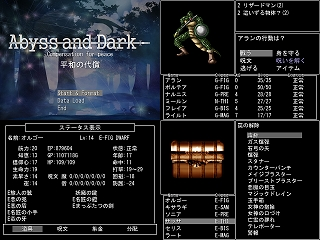
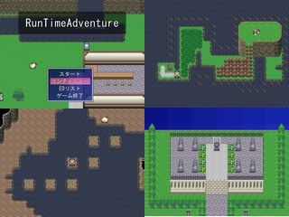
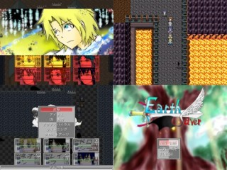
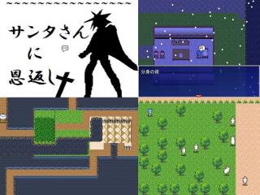

【注意】赤文字の「サイトへのリンク」や【ダウンロード】リンクは、現在のドメイン所有者が当時と変わっていて危険なサイトにつながる可能性がありますので、もしリンク移動時にブラウザの警告などが出た場合は移動しないよう注意してください。
（『緑色のリンク』と『青色のリンク』はそれぞれ「ページ内リンク」と「同サーバー内へのリンク」なので安全です）
第２回 WOLF RPGエディターコンテスト
トップ10動画 / 結果発表 / 審査員から一言 / 作品紹介 / 総評 （どれもページ内リンクです）第２回 WOLF RPGエディターコンテスト トップ10紹介映像
|
◆コメント付きで動画を見たい方はこちら（要アカウント） → 【ニコニコ動画版】 |
k(航)さんからの 上位10作品ｲﾗｽﾄ！ メガネさんからの 上位作品ｲﾗｽﾄ！ panopさんからの 上位5作品ｲﾗｽﾄ！ タクミさんからの 全作品イラスト！ |
{kind=link}
{kind=link}
{kind=link}
{kind=link}
第２回 WOLF RPGエディターコンテスト順位発表
順位は、「10名の審査員投票による得点率」 ＋ 「一般投票による得点率」の合計が大きい順に決定されます。| 順位 | 作品名 | 審査員投票 計145点 | 一般投票 計2814点 | 合計 得点率 （％） | ||||||
| 一位 | 次点 | 好印象 | 得点（％） | 一位 | 次点 | 好印象 | 得点（％） | |||
| 1位 | Gravity | 3 | 2 | 2 | 23（15.9％） | 53 | 35 | 42 | 412（14.6％） | 30.5％ |
| 2位 | 魔人封印伝 | 2 | 2 | 3 | 19（13.1％） | 18 | 13 | 41 | 170（6.0％） | 19.1％ |
| 3位 | Belsena Special Force | 1 | 4 | 1 | 18（12.4％） | 5 | 10 | 29 | 84（3.0％） | 15.4％ |
| 4位 | サラッとお宝争奪記 | - | 3 | 3 | 12（8.3％） | 20 | 12 | 38 | 174（6.2％） | 14.5％ |
| 5位 | 魔神器物語 | - | 3 | - | 9（6.2％） | 16 | 14 | 30 | 152（5.4％） | 11.6％ |
| 6位 | Inoculator | 2 | - | 3 | 13（9.0％） | 2 | 3 | 29 | 48（1.7％） | 10.7％ |
| 7位 | ウルズ・サガ | - | 2 | 1 | 7（4.8％） | 13 | 9 | 18 | 110（3.9％） | 8.74％ |
| 8位 | ＪＯＵＲＮＥＹ ＳＫＹ | - | 2 | 1 | 7（4.8％） | 13 | 8 | 16 | 105（3.7％） | 8.56％ |
| 9位 | 霊石重ね | - | - | 2 | 2（1.4％） | 8 | 19 | 42 | 139（4.9％） | 6.32％ |
| 10位 | 山神 | - | 2 | 2 | 8（5.5％） | - | 2 | 15 | 21（0.7％） | 6.26％ |
| 11位 | おっさんゲーム★ミ | - | 1 | 3 | 6（4.1％） | 2 | 6 | 23 | 51（1.8％） | 5.95％ |
| 12位 | そうだ宇宙へ行こう ～宇宙神話最新情報 |
- | 2 | - | 6（4.1％） | 2 | 5 | 22 | 47（1.7％） | 5.81％ |
| 13位 | Abyss and Dark | - | - | - | （0.0％） | 14 | 18 | 36 | 160（5.7％） | 5.69％ |
| 14位 | どボん！ | - | 1 | 1 | 4（2.8％） | 5 | 1 | 15 | 43（1.5％） | 4.29％ |
| 15位 | Under Land Rhapsodia | - | - | 2 | 2（1.4％） | 1 | 11 | 31 | 69（2.5％） | 3.83％ |
| 16位 | ネクロマンス | - | - | 3 | 3（2.1％） | 3 | 3 | 23 | 47（1.7％） | 3.74％ |
| 17位 | トレジャーはんてぃんぐ！ | - | - | 2 | 2（1.4％） | 2 | 4 | 28 | 50（1.8％） | 3.16％ |
| 18位 | 魔女の館 | - | - | - | （0.0％） | 10 | 6 | 18 | 86（3.1％） | 3.06％ |
| 19位 | NZ | - | - | - | （0.0％） | 8 | 3 | 32 | 81（2.9％） | 2.88％ |
| 20位 | ゲームウォーリアーズアゲイン ～大都会を撃て～ |
- | - | 1 | 1（0.7％） | 5 | 3 | 18 | 52（1.8％） | 2.54％ |
| 21位 | フカフカ物語 ～いけのほとりのあの男～（２章まで） |
- | - | - | （0.0％） | 4 | 8 | 25 | 69（2.5％） | 2.45％ |
| 22位 | Blow to the Nation | - | - | 1 | 1（0.7％） | 4 | 3 | 15 | 44（1.6％） | 2.25％ |
| 23位 | ベスカの昏き迷宮 | - | - | - | （0.0％） | 4 | 7 | 20 | 61（2.2％） | 2.17％ |
| 24位 | お化け屋敷のチャイムをならして | - | - | - | （0.0％） | 3 | 5 | 27 | 57（2.0％） | 2.03％ |
| 25位 | Bonds | - | - | 1 | 1（0.7％） | - | 4 | 15 | 27（1.0％） | 1.65％ |
| 26位 | マジギレの錬金術師 | - | - | - | （0.0％） | 3 | 1 | 27 | 45（1.6％） | 1.60％ |
| 27位 | RunTimeAdventure | - | - | - | （0.0％） | 2 | 3 | 24 | 43（1.5％） | 1.53％ |
| 28位 | 輪廻 ～秘められた願い～ | - | - | - | （0.0％） | 3 | 4 | 13 | 40（1.4％） | 1.42％ |
| 29位 | 傍迷惑な逃走劇 | - | - | 1 | 1（0.7％） | 1 | 1 | 9 | 17（0.6％） | 1.29％ |
| 30位 | １００days | - | - | - | （0.0％） | 3 | 1 | 14 | 32（1.1％） | 1.14％ |
| 31位 | むかんしんはひとをころすか | - | - | - | （0.0％） | 1 | 3 | 14 | 28（1.0％） | 1.00％ |
| 32位 | リバがく！ リバーシのリバーシによる リバーシのための学園もの！ |
- | - | - | （0.0％） | 2 | 1 | 12 | 25（0.9％） | 0.89％ |
| 33位 | 破壊の物語 | - | - | - | （0.0％） | 2 | - | 14 | 24（0.9％） | 0.85％ |
| 34位 | 勇者は死なず。 | - | - | - | （0.0％） | 1 | 2 | 11 | 22（0.8％） | 0.78％ |
| 35位 | 魔人を探してうん十年 | - | - | - | （0.0％） | 2 | 1 | 8 | 21（0.7％） | 0.75％ |
| 36位 | ESI ～Escape Island～ | - | - | - | （0.0％） | - | - | 17 | 17（0.6％） | 0.60％ |
| 37位 | 死都の王 | - | - | - | （0.0％） | 1 | - | 11 | 16（0.6％） | 0.57％ |
| 38位 | Witch Craft -魔女の軌跡- | - | - | - | （0.0％） | 1 | 1 | 7 | 15（0.5％） | 0.53％ |
| 39位 | 格闘アクションげーむ | - | - | - | （0.0％） | - | - | 14 | 14（0.5％） | 0.50％ |
| 40位 | バベルブリッジの衝突 | - | - | - | （0.0％） | 1 | - | 8 | 13（0.5％） | 0.46％ |
| Earth Saver | - | - | - | （0.0％） | 2 | - | 3 | 13（0.5％） | 0.46％ | |
| 42位 | 黄泉の国 | - | - | - | （0.0％） | - | 1 | 8 | 11（0.4％） | 0.39％ |
| 43位 | 十幻響 | - | - | - | （0.0％） | - | - | 10 | 10（0.4％） | 0.36％ |
| 運命の塔（さだめのとう） | - | - | - | （0.0％） | 1 | - | 5 | 10（0.4％） | 0.36％ | |
| 45位 | DiamondHonesty0 | - | - | - | （0.0％） | - | - | 8 | 8（0.3％） | 0.28％ |
| ２日で生まれたナニカ | - | - | - | （0.0％） | - | - | 8 | 8（0.3％） | 0.28％ | |
| 47位 | すごバト | - | - | - | （0.0％） | - | - | 6 | 6（0.2％） | 0.21％ |
| 48位 | 魔法少年バリー ＲＰＧ | - | - | - | （0.0％） | - | - | 4 | 4（0.1％） | 0.14％ |
| 49位 | エミルの冒険 | - | - | - | （0.0％） | - | - | 3 | 3（0.1％） | 0.11％ |
| 光と闇の呪文書 | - | - | - | （0.0％） | - | - | 3 | 3（0.1％） | 0.11％ | |
| サンタさんに恩返し | - | - | - | （0.0％） | - | - | 3 | 3（0.1％） | 0.11％ | |
| 52位 | 飛翔舞踏会 | - | - | - | （0.0％） | - | - | 2 | 2（0.1％） | 0.07％ |
| Magus Offline 第2回ウディコン版 |
- | - | - | （0.0％） | - | - | 2 | 2（0.1％） | 0.07％ | |
審査員から一言
【SmokingWOLF】主観的ですが、特に熱中して遊べた作品に、票を入れさせていただきました。
もっぱら、ストレスフリーな作品、新しい楽しさを持った作品、気遣いや親切設計に優れた作品、
テンポの良い作品のいずれかが備わった作品に票を入れさせていただいていると思いますが、
今回は特に、「新しい楽しさを持った作品」に目が惹かれたようです。
上位3つに絞りきれなかったので、次点票4つで投票させていただきました。
【Gil】
単純にプレイしていて楽しかった作品に投票させて頂きました。
システムや画面が雰囲気にマッチしている、統一感があるといったことにも注目しています。
また、「もっとプレイしたい！」と思わせられるような要素を持っているか、プレイする上で
ストレスをあまり感じさせられないか、ということを重視して評価しました。
【坂口】
選考基準はとても主観的なものですが、「単純に面白かった」「独創性」「操作の気持よさ」「文やセリフの安定感」「印象の強さ」といったところでしょうか。また「好印象」だけだとあまりにも多くの作品が該当してしまうので、ある程度数を絞らせてもらっています。
コンテストなので点数には上下ありますが、どの作品も本当に素晴らしかったです。
製作者の皆さま、おつかれさまでした！
【さくらば結城】
５３作品の応募がありましたので、作者の方には申し訳ないのですが
先に全作品に目を通し、その後じっくり遊ぶという方法をとらせていただきました。
「もっと長くじっくり遊びたい！」「でも時間がない！」というジレンマがもどかしかったです。
楽しい時間をありがとうございました。
【しゃこ】
今回は絞るのに苦労したため、2位票を4つにさせていただきました。
基本的にはプレイしていて面白かった作品、他の人に勧めることの出来る作品を高く評価しています。
その中には、分かりやすさや操作のしやすさ、上手く説明がなされているか等も含まれていますし、
バランス調整も含まれてはいますが、比較的甘く採点していることは否定できません。
また、評価が難しかったため、一部作品は採点を見送らせていただきました。
【タクミ】
今回、一位票を選んだ決め手は「ゲーム自体の面白さ」や「技術力・外面のクオリティ」、そして普段ゲームに不慣れなプレイヤーにも分かりやすい説明や全体の雰囲気の統一・完成度といったゲーム自体の形ができた後の更なる創意工夫だったように思います。それにしても…前回を大きく上回る作品数！数だけでなくクオリティもWOLF_RPGエディターの進化と共に大きくアップしていて「こんな事も出来るの！？」「似たルールでも作る人でこうも違うのか！」「まさかこんな結末になるとは！」など、驚いたり感動したり、第２回コンテストも楽しませて頂きました。素晴らしい作品をありがとうございます！
【ぽり0655】
ウディタでゲームを作っている人の一人としてプレイしながら
参考にさせていただいてます。
そのため、メインの評価項目になっているのは「システム」や「ユーザビリティ」になります。
シナリオや面白さももちろん評価させていただいてますが、プレイ中に無駄な手間や知識を必要とする作品は
（それが味になっている場合を除き）どうしても微妙な評価になってしまいます。ご了承ください。
【メガネ】
まず作品をダウンロードされることが何より大切なので、スクリーンショットから受ける印象が良く、
事前に情報を得られる紹介ページがある作品は、それだけで評価につながりました。
魅力あるグラフィックは、第一印象を決めるのはもちろんのこと、作品を華やかにするだけでなく、
プレイ中のモチベーションを維持するのにとても重要です。
絵や音楽などの要素を、自作に限らず、既存のものを利用する場合でも、適材適所で使い分けて、
最大限効果を発揮する配置が成された作品、全体のレイアウトやレスポンスで、プレイ中にストレスを
感じさせない作品を評価します。
個人制作である必要はないので、それぞれの担当があるチーム制作でも、個人と審査基準は同じです。
以上の審査基準を踏まえて作品を選ばせていただきました。
【六花】
楽しくプレイ出来る作品を評価したいので、以下の点に注目しています。
拘りが感じられ、なおかつそれが「プレイさせる要素」として活かされている。
「何となくそうしている部分」が少なく、プレイしていて無闇に疲れない。
【ユノ】
ゲームの製作者、素材の製作者、プレイヤー3つの観点から考えさせていただきました。
そのため、基本的には作品の完成度と長く楽しく遊べる作品であることを中心に、
遊びやすくする工夫がされているかどうか、世界観を過不足無く伝えられているか、
素材の使い方やreadmeの扱い方などを少し重く評価させていただいております。
作品紹介
【1位】『Gravity』 (エントリー番号【9】/ 総ポイント30.5％)
(エントリー番号【9】/ 総ポイント30.5％)
(エントリー番号【9】/ 総ポイント30.5％)
【ダウンロード】
【運営ﾊﾞｯｸｱｯﾌﾟからDL(安全/9MB)】- 作者 : ぽり０６５５
- プレイ時間 :20～40分
- 作者コメント:
- （アップローダーが重い場合のミラーはこちら：http://u12.getuploader.com/pori0655/download/47/Gravity.zip）
全てマウスで操作するアクションパズルです。
飛んで落として歩いて乗って潰れて積んで刺さって滑って運んで押して支えて爆発して頂上を目指してください。
-
【審査員コメント】
＜Gil/一位票＞ 個性豊かなステージごとのデザインやアイディアが非常に凝っていてこれは凄い！と思わせられました。一つのテクニックを使用すればクリアできるのではなく、プレイヤーに色々な発想をさせるようになっているのも面白いと思います。
そして、ゲームのチュートリアルややり込み要素などは様々に遊ぶ人を考慮した設計で自然にテンポ良くゲームをプレイできます。
プレイヤーのモチベーションを保たせ、最後までプレイしたくなる作品でした。
＜タクミ/一位票＞ 新感覚のルールでしたが、チュートリアルがとても丁寧で分かりやすく、自然とゲームに入り込むことができました。頭を使って面が早く解けた時の爽快感が最高です！モノクロで統一されたデザインや音楽の雰囲気作りも素晴らしいです。全体のインターフェイスもプレイ＆見やすいようこだわり抜かれており、１つの作品として完成されていました！ウディタをここまで見事に使いこなす技術力、ゲームとしての完成度、どれを取っても自分の中で文句なしの１位でした！素晴らしい作品を、そして楽しい＆面白い時間をありがとうございました。
＜ユノ/一位票＞ システム、シナリオ、素材、三要素バランスの取れたパズルゲーム。
悩んだのですが、全作品中で最も高い全体的な完成度を考えてこの作品を選ばせていただきました。
ゲームを始めてゆっくりと、できることを覚えていけて、途中を飛ばしてもOKなステージ構成は、既存のゲームをかなり研究されたようにも思えます。
マウステクニックよりも頭を使った発想で解いていくステージの方が楽しみやすいようにも感じましたが、
システム的な面白さとシナリオの牽引力、全体をまとめるモノトーンな素材遣いのせいか、それでもついつい最後までやってしまう魅力がすばらしい。
＜SmokingWOLF/次点票＞ 新しい試みのパズルゲームです、マウスクリック一つだけのシンプル操作でありながら、なかなか頭を使う場面が多く、ハマってしまうと、高得点を取るためにムキになってブロックをはじいてしまいます。物体対物体に影響する物理エンジンを作り上げた作品は、見た中ではこれが初めてではないでしょうか。しかもただの試みだけでなく、それをゲームとして非常に完成させているところが素晴らしいです。アクション的操作が要求されるステージ、知恵をふりしぼることが要求されるステージなど、ステージのタイプも多彩です。
また、チュートリアルの充実っぷりにも隙がありません。ステージ０は、実際にプレイしながら、決して少なくない要素を段階的に身につけていくことができます。そしてクリアまでの過程でも、解けないステージは飛ばして、一定ノルマさえこなせば次の段階へ進むことができるため、遊びたい分だけ、解ける分だけこなすことで、一応のクリアを迎えられる構成になっており、サッと遊びたいユーザからやり込みユーザまで、幅広いユーザの支持を得られそうな設計だと感じます。全体的なグラフィックセンス、先進性、完成度、面白さ、難易度設定のどの面においても、非常にハイレベルな作品だと思いました。
＜しゃこ/次点票＞ 頭脳ではなく技術！ 一風変わったシンプルなパズルゲーム。
必要なのはマウスだけというシンプルな操作性、また直感的に覚えられるシンプルなルールといった、シンプルさが素晴らしいゲームです。もちろん外観もスタイリッシュでシンプルです。
また、合計点数が一定数を上回れば、苦手な面が攻略できなくても次に進むことが出来るといった親切な設計も良い点だと思います。
＜坂口/好印象＞ なんちゃって物理演算ゲーですが、とてもそれっぽい動きをしますね。動かしていて楽しいです。
イライラ棒的な要素も含まれますが、クリアだけならそこまで根詰める必要もなく、「おおいけた」という爽快感とともにさくさく進めていける感じでした。
各ステージにそれぞれアイデアが盛り込まれていて面白かったです。
これは誰にでも受け入れられる名作なんじゃないでしょうか。
とっつきやすくて楽しいので、是非皆さんにプレイしてもらいたいです。
＜メガネ/好印象＞ システムを形にする技術力がとても高く、直感的でストレスのない操作性を実現しています。ゲーム構成は、パズル以外の要素が皆無で、各ステージの目標をクリアすることに集中できます。
新しく登場した要素の解説や、チュートリアルなど、遊ぶ人への配慮に好印象を受けます。多くの人が快適に遊ぶための環境が整えられています。複雑で難しい処理を行っているであろうことを感じさせないほどに、プレ
イ中はクリアすることに没頭させられる作品です。
【一般投票コメント】
[一位票] 絵が好き。
[次点票] クオリティー高くて驚きました！
ゲームの雰囲気も好きな感じで、
ブロックの説明も分かりやすくサクサク進めました！
Wiiとかであったらおもしろそう！
[好印象] ルールそのものは「マウスカーソルでブロックを掴んで投げる」この一言だけで説明できる。 それなのに時間を忘れて夢中になれるぐらい面白い作品に仕上がっている。 軽くマウスの動作加減を間違えただけでも思わぬ方向にはじけ飛んでプチッ。 焦ると紫ブロックの存在を忘れてベシッ！「再挑戦⇒紫ブロック上でスタート⇒即死」の凡ミスはついつい何度もやってしまう。 発想の逆転を求められるステージも多彩でついついムキになってしまうことも。 個人的には”Fall”が一番難しかった。 ストーリーは重力の塔を昇る誰かを導く…というのに特殊な人物像を使用せず白黒の背景だけで表示しているのが印象的。 タイトルも含めたゲーム画面全体が白黒色彩を基調とした絵柄で統一されているので世界観の中に入り込みやすい。 第一ステージのチュートリアルが充実しているため特に操作に戸惑うことなくプレイすることができる。 起動ランチャーを利用しているため、画面設定とゲーム起動画面が一体化させているのも手軽に遊べる要因だと思う。
[次点票] センスやインターフェイスに惹かれるものがありました。
ルールも単純で分かりやすくてGoodでした。
[一位票] ルールそのもの、手軽に遊べるゲームデザイン、お洒落な見た目が噛み合っていてのめり込んでしまいました。ラストステージのステージは悩んでしまうものが多く、非常に楽しめました。スコアに応じたご褒美もやりこみへのモチベーションをほどよく高める要素だったと思います。
[好印象] 完全に独創的なシステムと適切な難易度とが相俟って秀逸な作品になっています。全体的に丁寧に作りこまれていて妥協を感じさせない隙のない作品でした。
[好印象] 紫のブロックが苦手・・・。面白かったけれど、インパクト不足かな？でも感心しました。
[好印象] 普通にミニゲームとして売っててもおかしくないほどのシンプルながらに美しいデザイン、ストレスフリーなシステム。あと100点前後というところで作者点には到達できませんでしたが、非常に楽しめました。
[好印象] 点数さえ満たしていれば苦手なステージを無理にはしなくていいという点がメチャクチャ素晴らしい。マルチエンディングもモチベーションアップに○
[一位票] 初めがゲームとチュートリアルを兼ねてて、かつ面白かった点。
後は、力のいれ具合というか、勢いに応じて飛んだり跳ねたりの様子が変わるのが面白かったです。
[好印象] デザインがスタイリッシュで、ひらめいて解いたときの快感がたまんなかった
[好印象] もっといろんなステージがやりたいです。
[一位票] プレイの新鮮さ、操作の軽快さ、ルールの簡単さ、デザインの良さ…とにかくスッキリ・サクサクとゲーム全体がまとまっているなぁという印象を受けました。
ただ一カ所、困った部分がありました。TUTORIALのGAMEOVER条件を説明するシーンで、SCOREが「なくなる」と…という所。それまで文章が流れてきていたのに、説明が開始する瞬間てんでバラバラの位置に配置された文字が見えて、一瞬、戸惑ってしまいました(苦笑 そんな鈍い人間もいましたよ、とヒソヒソ声で。
[一位票] 人ではなくブロックを動かすという発想
全てのステージをクリア出来なくてもエンディングにたどり着けるところ
雰囲気に良く合ったストーリー
[一位票] RPG作るはずのツールなのに、参加作品がほとんど違うジャンルにﾜﾛﾀｗｗｗｗｗｗｗ
その中でも、Gravityは段違いにおもしろかった。
素材の使い方綺麗だし、パズルゲーだしｗ
個人的な意見ばかりですが、唯一このゲームは最後までプレイしましたｗ
[好印象] ゲームの仕組みが斬新でとても面白かったです！かなり迷って1点にしました。操作性やゲーム進行は抜群に良かったと思います。結構強引にクリアしようとしても失敗してしまうのは壺でした。
[一位票] ブロックの動きの気持ち良さがマウスプレイの良いところを引き出していると思いました。
雰囲気も統一感があって、ステージを進むだけなら不得意な人も進める難易度となっており、
やり直しまでの時間も短いので何度もプレイしてやり込んでしまいました。
[次点票] 総合的にいいと思います。
[一位票] 世界観とゲーム内容が非常にマッチしている。遊びやすく、進みやすい。ゲームが苦手な人でも得意な人でも遊べるゲームだと思った。また、ある隠し要素は隠すのが勿体無いほどしっかりとした作りでびっくりした。
[好印象] 全体的にレベルが高かったです
[一位票] 気が付くと作者さんのスコアを抜こうと躍起になっていました。
この中毒性やスタイリッシュさ、がお見事です。
[一位票]
洗練されたインターフェース
ゲーム性の高さ
[次点票] 他の追従を許さない、このずば抜けた独創性。
「これがウディタ製…ｺﾞｸﾘ」と、RPGエディターとはなんだったのか、
とさえも感じさせるウディタの可能性を見せてくれた作品。
マウスドラッグで物を動かせるのですが、これが滑る滑る！
でも操作し辛いってわけじゃなくて、逆にこれが面白さに拍車をかけてます。
得点のボーダーラインがあるので、ただクリアした後も、
「これより更に効率の良い別の解法が…？」と、
同じステージでも別の解法を模索する楽しさがあり、
リトライも早いのも相まってサクサクと熱中できました。
[一位票] マウスで簡単に操作できた。
グラフィックが綺麗。
ルールが分かりやすい。
[好印象] シンプル且つおしゃれなゲームデザイン・斬新なシステムに惹かれました。
[好印象] とりゃーってな感じで出来るゲームって良いですよね。
[一位票] 丁寧なチュートリアルと難易度設定。
この手の面クリア型パズルゲームは急に難易度が跳ね上がったり、面が進むことによって追加される新しい要素の説明がおざなりでストレスを感じることがままあるのだけど、このゲームはそれがない。気がついたら、ついつい真エンドまで遊ばされていた。
[好印象] 画面のデザインがかっこいい。
[一位票] パズルゲームに早さや重力を取り入れアクションゲームのように仕上げ、プレイヤーに短いスパンで試行錯誤させていく所が良かった。
また、パズルが苦手なユーザーにはステージタイトルなどでヒントを与え、やり込みたいユーザーにはスコア要素を作るなどユーザーの事をよく考えて作られた作品に感じた。
[一位票] ウディタでこんな感じのものも作れるのですね。驚きました！ スタイリッシュ！ ブロックを動かしたりするのがとにかく面白くて楽しくて、もっともっと遊びたいと思いました。
[一位票] じわじわ、燃えます。
[一位票] 直感的で遊びやすいし、画面も非常に見やすい。何よりアイデアが面白い。もう少し難しい面があってもよかったとは思う。
[一位票] クリアするだけなら難しくないバランス
一般人でも理解しやすい内容、飽きの来ないレベルデザイン。
気になる点はグラフィックぐらいですね。
かなりの完成度だと思われます。
[次点票] 何だこの作品は！？
まさかの重力計算の入ったクリック操作のパズルゲーム・・・新しいぞ。
ステージ自体はクリアさせても、Ｓランクを取らせてくれないのが味噌だな。
[好印象] グラフィック・操作性・デザインセンス・ユーザビリティ全てがすごい！と思った。ただ、ゲームにわたしの苦手なイライラ棒な部分があるのが残念。ここは好みの問題なのでお気になさらないでください。
[一位票] インターフェイスのデザインやオープニングのセンス、チュートリアルの解り易さや操作のユニークさ、ゲーム性の高さや白熱度など。どれを取っても今回の別格作品でした！ 審査が終わったら腰をすえてじっくりハマろうと思っています。そうそう、iPhoneアプリ化したら教えてくださいね（笑）。
[次点票] テンポよく進められました。操作性が抜群でした。
[次点票] エンディングでもブロックが動かせて面白かった。
[次点票] 完成度が高い。
ステージを自作できて、公開＆共有できる仕組みがあれば長く遊べそう。
[好印象] 新しいスタイルのゲームながら、操作はシンプルでチュートリアルも非常に分かりやすく、プレイする人を選ばない。力押しでも一応クリアはできるようになっているバランス設定にも感動。一つのゲームとして最も完成していた作品だと思う。
[好印象] マウスの加減が難しく主人公を何度も潰してしまったりしましたが、時間を忘れてはまってしまいました。手順を変えると上手くいったりして、そのやり方を導き出すまでが難しくやりがいがありました。
[好印象] パズルの謎解き要素と、マウスでのアクション制がうまくマッチしていて、今回一番長く遊ばせてもらった作品です。ただ、ジャンル上タイミング（FPS30だから？）によってはマウス操作の反応が鈍かったり、たまにキャラやブロックがすり抜ける事があったりなど、物理エンジン再現の過程で仕方が無いのであろう部分で減点させていただきました。
[一位票] ゲームバランスの良さ
テンポの良さ
とっつきやすさ
爽快感、など。
[一位票] グラフィックデザインがすごい好みです。
システムがとても秀逸に感じたため、複雑なものが最後の数個だけだったのが個人的には残念でした。もっといろんなコースを楽しみたかったです。
[一位票] パズルゲームは好きじゃなかったけど
これは楽しめました。
マウスでブロックを「放り投げる」ときの感覚が
なんともいえません。
[好印象] 音楽・デザイン・ゲーム性どれをとってもハイクオリティ！ただ現状で過不足無くまとまりすぎちゃってる印象だったので、上位二位は他のに入れちゃいました。すいません。
[好印象] 物理エンジンがすばらしく、従来のウディタ作品とはまた違ったゲームを楽しめました。
[一位票] パッと見て興味を引くデザイン、遊びやすい操作性、テンポの良さ。プレイ時間の短い作品以外で、最後まで遊べる要素に溢れています。
[一位票] シンプルでクールなデザインが良く、
色で個性を出したのも面白い。
ステージによっては、よく考えなければならないので、
頭の体操にもなり良い。
[次点票] 独特なルールと、ルールを覚えるためのチュートリアルステージのわかりやすさ、そして最後になるにつれて本気で難しくなってくるステージ構成。淡々とした語り口の雰囲気も良かったです。
[次点票] 面白かった。発想の勝利？
人型にちょっと違和感あったけどね。
ただ、悩むステージがあんまりなかったのが残念。
解けてうれしいっ！ 面白いっ！ ってステージが多かったら、他の作品ぶっちぎって１位だったと思います。
[好印象] 重力計算システム、斬新です。面白いです。
[一位票] 誰にでも親しみやすいデザインであって操作方法もチュートリアル的なものもあり非常に分かりやすいにも関わらず極めようとすると奥が深い と面白い要素を十分に持ってた点
[好印象] 新しいことに挑戦していて素晴らしいと思います
[好印象] 最初「これは本当にウディタ製なのか」と思いながらやりつつ、最後まで「これは本当にウディタ製なのか」と思わせる作品でした。もっと色々なステージがやりたいです。
[一位票] 完成度がとても高かっただけでなく、グラフィックと音がよくあっている。ステージも本当によくできていて一番楽しめました。
[好印象] 発想の勝利ですね。おもしろかったです。
[次点票] 凄いとしか言いようがない
ステージ構成的にはもう少しひねりが欲しかったというか・・・
頭を使うというより、小手先の技術がモノをいうゲームという印象でした
[一位票] 進行条件の緩さが気楽でよかった。
[好印象] 真EDでもすぐに終わってしまい印象には残りませんが、楽しかったです。
[一位票] 直感でも操作できる操作性、プレイヤーがわかり易いルールでありながらステージよって考えさせられる難易度になるよう調整されたゲーム性。
とても素晴らしい作品だと思います。
個人的にストーリーも素敵だと思います。
[一位票] 操作感が良かった。
単純に、複雑な操作にしているゲームは多くあったが、プレイヤーにストレスを感じさせない点が巧いと思った。
後は、高得点を目指すための中毒性が。
[一位票] ・全てマウス操作のパズルと言うのは面白いアイデア
・◎を取るのはきついがギリギリ取れると言う絶妙なバランス
何よりウディタでこのようなシステムを作れることが驚きです、今年もぽり氏のに一番を投票させて頂きます
[一位票] ウディタでこういう作品が作れることに驚きました。ゲーム自体も面白かったし、チュートリアルなどシンプルかつ丁寧な内容でスムーズに操作やルールを知ることができました。画面デザインもシンプルで洗練されていてよかったです。
[次点票] 細かい所まで目が届いていて、多彩なステージがあり、よく頭をすごく使い、暇があればすぐに遊べるゲームでした。発想も素晴らしいです。
[次点票] マウスでグリグリやる、独特のアクション性と、１つ１つのステージに異なったか解法があって、あーだこーだと、考えるパズル的ところが面白かったです。
シンプルであるところに徹底的にこだわったデザインもマッチしてて素敵でした。
【2位】『魔人封印伝』(エントリー番号【21】/ 総ポイント19.1％)

- 【ダウンロード】
【運営ﾊﾞｯｸｱｯﾌﾟからDL(安全/106MB)】 - 作者 : あとらそふと
- プレイ時間 :1～2時間
- 作者コメント:
- 【 魔人封印伝 ver1.2.0 】をアップロードしました
・おまけエリア、イベントを追加しています
・以前のセーブデータは使えません
---------------------------------------------
魔人復活を阻止するためプレイヤーは
塔の最上階を目指します。
塔の攻略は、すごろく形式で行われ、各マスでは
下記のような様々なイベントが発生します。
・魔物との遭遇
・お金ＧＥＴ
・魔力石ＧＥＴ(最大ＭＰアップ)
・ワープ ...etc
カードと魔術を駆使して、塔の攻略を有利に進める
ことがポイントです。
拠点での行動(カード購入、魔術修得、デッキ編集)が攻略のカギとなります。
-
【審査員コメント】
＜坂口/一位票＞ カードゲームのど素人でも楽しめるシンプルなルール。弱いと思ってたカードでもそこそこ戦えたりするのが面白いです。
思わずスタートからクリアまで没頭してしまいました。
カーソル音に音階っていうのはちょっとした工夫ですが、おっと思わせるには十分な飛び道具でしたね。
ボリュームは長すぎず短すぎず丁度よいと思いましたが、もう少しキャラクターを掘り下げるイベントなどあったら嬉しかったです。
＜メガネ/一位票＞ 登場する人物、風景などのすべてが優れたグラフィックに彩られていて、作中に存在する別世界の雰囲気を見事に作り上げています。描画力がとても高く、落ち着いた色調で描かれた物語の世界と、そこで活躍する、かわいらしいキャラクターたちにとても好感が持てます。初見の印象をより良くし、ゲームをやり始めるきっかけと、プレイを続けるモチベーションを生み出す、作品に欠かせない要素になっています。
ランダム性と思考を反映する余地のバランスが取れ、独自性の高いシステムの完成度は申し分なく、項目ごとのレイアウトにも優れ、非の打ち所がないです。
ゲームの流れは塔の攻略が中心になっていて、用意された難題をクリアするたびに達成感が増して、攻略に没入でき、システムにも自然に慣れてやりがいが出てきます。人物のセリフは短く簡潔で無駄がなく、プレイ時間は、作品の雰囲気に触れたり、繰り返し遊ぶにはちょうど良い長さに抑えらていて、要領よくまとめる確かな力量が見て取れます。中身も外見もすばらしい作品です。
＜SmokingWOLF/次点票＞ 街でデッキ（カードのセット）を構成し、塔ではカードを選んで先に進んでいく、今まであまり見なかったタイプのカードゲームです。ランダムでマスが配置されるフロアを、思い切って進むか、ゴールドやMP回復を拾っていくか、戦闘して自分を強くするか、MPダメージを受けてでも先に進むか、時と場合とプレイスタイルに応じて常に判断・計算しつつ、階層を進んでいくのがとても面白い！ 厳選した特殊マスの要素を一つも無駄にすることなく、状況によって各マスの重要度が常に変わってくるところが、ゲーム設計的に素晴らしいと感じます。あとは、攻略中のカード説明をより詳しく表示したり、攻略中のゲームスピードを加速できたりすれば、もう本当に言うことがありません。完成度の高い自作システムでありながら、美しいグラフィックやカードイラストも魅力的で、総合的に非常にレベルの高い作品だと感じました。
＜タクミ/次点票＞ 何より特筆すべきなのは、グラフィックが素晴らしかったこと！そしてゲーム自体もスゴロクとカードバトルとがうまく組み合わさり、常に自分とカードの状態を計算して先に進んでいく事で頭をフルに使い、飽きさせないゲーム内容となっていました。全体的なボリュームも程良く、ポイントをしっかり押さえて作ってあるなぁ…という印象で良かったです！
＜しゃこ/好印象＞ 世界観に合った丁寧なグラフィックが魅力のすごろく風カードゲーム
さいころで移動を決めるのではなく、自分でどれぐらい移動するかを決められるのが良点。属性による2倍移動もそれに上手く噛み合っています。バトルも、先制攻撃や属性攻撃、属性殺しといった要素があり、単純な出し合いではなく考えさせられる戦いになっているのが良し。
しかし、ゲーム設計的に仕方がないのですが、『バトルによる利点が少ない』『きれいなカードと圧倒的気配を持つカードの強さが圧倒的に違う』『ボスと戦うのが最強カード以外ではキツイ』といった点から、きれいなカードを何枚か買って、帰還とデッキ復活lv2の魔法さえ覚えればゴールドマスとMPマス、魔石マスを移動するだけのゲームになってしまったところが残念でした。
＜ぽり0655/好印象＞ カードゲームの要領でデッキを組んでそのデッキですごろくを行う特殊なシステムのゲームです。
最初に何をしていいかよく分からないという不十分な点はありましたが、そこさえ理解できれば、あとはさっさと進むもよし資金を稼いでカードを補充するもよしという自由なプレイにのめり込むことができます。
すごろくのランダム性と、カードゲームの戦略性がちょうどいい感じに混ざったゲームで、またカードのデザインやキャラのグラフィックその他が全て高水準なので市販ゲームをプレイしてるような気分でした。
＜六花/好印象＞ 雰囲気の良さがひときわ目立つ、無視できない作品。拘りが見られつつも適度にシンプルなシステムが採用されていて、複雑すぎて悩むような事もなくさらりとプレイできます。必要な部分に力が注がれているので、全体を通して何とも隙の無い作りで出来ているなと感じさせられました。
【一般投票コメント】
[好印象] セレティナさん！『運命の決断』とかと言っときながらあれは鬼畜でしょ。 「カードゲーム＆すごろくアドベンチャー」という聞き慣れないゲームなので最初は戸惑ったけど、ルールがシンプルにまとまってるいるので慣れるのにはそれほど時間はかからない。 防御力の高いカードを出しても属性によって簡単に撃破されてしまうので、時にはわざと敗北するなどの戦略性も必要だったりで考えさせられる。 一見するとお得そうな「移動力２倍」の効果が邪魔になってしまったりなど思わぬ事態に戸惑うことも。 ただ…時間制限のあるゲームなのにセーブデータが一つしか無いのには少し不安がある。 特に霧の面で大幅に時間を奪われてしまった時には気を取り直してもう一度最初からプレイしたくなったけど消さなければならなかったりする。 絵柄と世界観はとても綺麗だけど、それ故にゲーム性における穴が余計に気になってしまったというのが正直な感想。
[好印象] 作りこみがすごいと思いました。あと、もうちょっとシナリオに深みがあれば良いなぁと思いました。
[好印象] 慣れてくると何となく分かって来ました。
[一位票] ファンタジー的な雰囲気の世界観が素敵。
シンプルながら、数が限られた魔法の取得や手札の取捨選択、
移動速度・属性や１マスだけ進めるよう敢えてコスト１を適度に入れるなど、
多くの面を考えてのデッキ構築など選択の幅が広く面白かったです。
メインストーリーの難易度も普通にステージを進んでいけばラスボスに勝てるなど程良い感じでしたが、
出来るならばかなりギリギリの難易度のおまけステージのようなものもプレイしてみたかった思いも。
演出もシステムも操作感も全体的に高いレベルで、個人的には今回のウディ今作品の中で最も楽しめた良作でした。
[一位票] まず、ウディコンが何でも出来るんだ、と思わせるような作品だった事をあげておきます。前回もカードゲームを作った方はおられましたが、此処までシステム周りを改変して跡形もウディコンらしさが無くなっていたわけではなかったので、特にその部分が目立ったのかもしれないです。
結構難易度が高いものの、全体的に統一された絵本の中のような世界がプレイ意欲を引き立てて止まらなくなりました。
魔法やカードの組み合わせで戦法は沢山あるように見えますが、第三フロアから戦ったほうがしんどいのが気になったくらいです。
[次点票] カードを使いながら進んでいくシステムが好きでした。全体的な雰囲気・絵柄などが良かったと思います。
[好印象] デザインが好みドンピシャだったので・・・。何周もしてしまいました。
[好印象] 意外と頭を使う進み方や戦闘がよかったです
[一位票] 一番に、ゲームバランスが非常によくとれていたと思います。資金繰りや、戦闘の難易度など、様々な面がバランスよく構成されていたと感じました。特に、カードの能力のバランスは、様々なカードの活躍を引き立てていたと思います。
又、ＳＥやＢＧＭの選出、インターフェイス、ウェイトなども絶妙で、プレイしていて、難なく世界観に浸ることができたと思います。
個人的には、カードの絵柄が好みなので、新しいカードが手に入ることが楽しみでしたw スラだんご、可愛いですw
非常に完成度の高いゲームだと思うので、一位票を入れたいと思います。
[次点票] あっと言う間に３時間以上のプレイをしてしまうほど、のめりこんでしまいました
[次点票] まず、絵が凄かったです。
ダンジョンのシステムも良くできていると思います。
暗黒騎士かわいいよ、暗黒騎士。
ただ、もうちょっとやりこみ要素が強ければ良かったと思います。
ゲームバランス的には、
例のカードの入手はもう少し困難にしたほうが良いのではないか、
というのが正直な意見です。
とか言いながら、買いまくってデッキに買った分だけ入れてましたが（苦笑）
一位票にするかかなり悩みましたが、次点票にさせて頂きました。
[好印象] 周回要素があると面白かったかも。
[好印象] カードゲーム好きなので。
[次点票] 全てオリジナルで作られたシステム
綺麗なグラフィック
自作の戦闘システム
どれもとても完成度が高かったです
[好印象] イラストもよく、勝手が分かるとサクサク進めるので楽しかったのですが、終盤になるにつれて（強さ的に）使用するカードが限られてしまうのが残念です。もう少し色んなカードを使えるように、弱いカードも特定の条件下で強化できるような魔法があったらさらに楽しめたと思います。
[一位票] まずは美しいイラスト。キャラクターも目を引くし、カードの絵柄も可愛らしい！カードゲームとしてもしっかり面白く、意気込みが伝わってきました！
このままでも十分面白いけど、ルールがわかると面白さが倍増したので
カードの見方等のチュートリアルがゲーム内にあればよかったなぁと。
（デッキ構築の際に短い文章でステータス表示するとか。
その際絵柄のモンスターのミニ情報なんかも参照できれば最高）
霧はちょっと難易度高すぎるのでヒントほしかったり、
カードの入れ替えがドラックなどで楽にできれば…等々細かく気になる部分はあれど、総合的に見ると一番のお気に入りです。
[好印象] どのカードをどこにおくかという楽しみがあった。カードはまずシャッフルされるものだという思いこみを見事に打ち崩してくれた。
[好印象] 面白かったけど、後半の作業感がすごかった。レアカードを入れて欲しいのと、強いカードが固定で手に入るのはちょっと
[次点票] シンプルながらよく練られたシステムや、世界観、丁寧なイラスト等、よく纏まっていました。会話イベントの充実やカードコレクション（図鑑）、若干のバランス調整が施されていれば１位票でした。
気になったところとしては、
・６つ目の魔術を覚える際に、忘れる魔術を選ばせて欲しい
・デッキ固定の魔術は無くした方が良い（残すのであれば、デッキ編集画面の改善を）
・経過週数の調整（使ったカードの枚数を基準にするとバランスが良くなるかと）
・↑その場合、戦闘勝利時のボーナスを若干増やす必要があるかと思います
・「山札予知」は一番上のカードを見ているはずだが、直接山札を指定して場に出さない限り、同じカードを指し続ける点の修正
・ヘルプがパワーポイント過ぎるｗ
個人的には、「あと一歩」が足りない作品だったかと。テスターの方にどんどん意見を出して貰えれば、更に面白く進化できる余地があると思いました。コンテスト終了後でも継続してアップデートして欲しいです。
[好印象] 帰るマスに止まれない、まず魔法買うべきかカード買うべきか解らない、など最初は戸惑いましたが今は楽しませて頂いています。ちょっとクリアはまだなのですけれどね。
[好印象] 装飾が美しく操作していて楽しかったです
[一位票] 全体的絵柄がとても綺麗で
カードに描かれているモンスター(?)一つ一つが魅力的でした。
すごろく形式で進めるという点も面白く、
戦闘でどのカードを出すかという戦略を練るのも楽しかったです。
グラフィック面・システム面、どれも素晴らしい完成度でした。
何度もプレイしたくなる、そんな作品でした。
[一位票] 世界観と絵、ゲームすべてがマッチしていてよかった
[一位票] カードを集めたり、技を選んだり
試行錯誤できる所がよかったです
絵もきれいで見やすいとこも○
[次点票] 絵が綺麗ではいりこみやすかった
[好印象] グラフィックなど画面デザインは素晴らしいのですが、ゲームルールを把握するまでのチュートリアルが欲しかったのと、画面情報が多いのでオンマウスで説明がちょろっとでるなど初見プレイヤー向けな工夫も欲しかったです。
【3位】『Belsena Special Force』(エントリー番号【5】/ 総ポイント15.4％)
- 【ダウンロード】
【運営ﾊﾞｯｸｱｯﾌﾟからDL(安全/32MB)】 - 作者 : Laineus
- プレイ時間 :３時間
- 作者コメント:
- ガンシューティングゲームです。
詳しくはホームページをご覧ください。
[8/12]
キー操作の変更により、快適にプレイしていただけるようになりました！
-
【審査員コメント】
＜さくらば結城/一位票＞ 【殺伐とした戦場を女性２人が駆けるガンシューティング】
やや過激な表現（流血表現・性的表現）がある大人向けなガンシューティング。操作に慣れてくると通常のステージは、難なく進めるようになるが、ボスステージは総じて難易度が高い。何度もリトライし、攻略法を肌で覚えながら倒すアクションが求められる。ラストはシナリオ・ミッションの両方が最大の盛り上がりをみせ、演出も相まって満足感・達成感があった。戦地という特異な環境で結ばれる２人の物語も、丁寧に描かれていて好感がもてた。周回要素があるので、２周目も楽しめる。好みの銃を買い揃えるのも楽しみの１つ。ただ、銃の説明が全くないので、購入の判断は形状で行うしかない（もちろん知っている人は形状で大体分かる）。説明があると銃を形状で判断出来ない人にも楽しめたと思う。
＜SmokingWOLF/次点票＞ FPS（主観視点シューティング）ゲームを2Dで表現したらきっとこうなる！ をずばり体現した作品です。戦争物FPSで出てくる様々な要素をうまいこと2Dに落とし込んでおり、演出もかなり凝っています。この真剣っぷりは本物です。銃の種類もかなり豊富で、趣味装備もあったりして、色々楽しめそうなところが面白い！ ですが一方で、購入時や装備時に、銃の形状しか情報がないため、濃いFPSゲームファン向けの前提知識が必要とされそうな部分も多そうです。銃の簡単な説明が購入・装備時に表示されるようになれば、初めての人もより入りやすくなると思います。それでも、このこだわりようは、FPSファンから見て素晴らしいと思います。FPSを遊んだことのない人にも、雰囲気を味わってもらえる一作として、ぜひ。
＜Gil/次点票＞ 演出がカッコいいガンシューティングゲーム。
ただごり押しすればクリアできるわけではない難易度で、かつ何度もプレイしたくなる要素が多くあり、飽きることなく楽しめました。
また、ミッション外で起こるイベントにも好感が持てます。
武器を購入する画面では形状だけでなく、もう少し情報があると分り易くなると思いました。
＜しゃこ/次点票＞ 雰囲気がよく出来た、縦横スクロールの2D-STG
銃の種類が非常に多く、また同じ種類の中では大きな違いが無い( もしくは違っても大して影響が無い )ので、好きな銃を選んで遊ぶことが可能です。
『体力が自動で回復する』『ミッションによってはプレイヤー以外にも仲間のNPCが存在する』『敵に芋スナがいない』といった要素から、遮蔽物に隠れて的確に処理するのではなく、突っ込んで蹴散らすというプレイが可能であり、ストレス無く遊ぶことが出来ます。
また、何面か毎に、ボス的存在が配置されており、一部ボス戦では一撃死の攻撃も存在するため、ただの撃ち合いの時とは違った緊張感のある戦いも楽しむことが出来ます。
＜タクミ/次点票＞ まずゲーム初めから、作戦説明の画面や全体の雰囲気作りが細部まで練られていて、臨場感ある世界に惹き込まれてしまいました。ゲーム自体も面白い上にヒロイン２人のやり取りやイベントも楽しみで、次のステージを進めるモチベーションをより高めるのに一役買っていました。アップデートで操作性や難易度も絶妙なバランスで調整されていて、完成させるだけでなく作者の作品に対する熱意や愛情…より良くしたいという向上心や制作への姿勢が垣間見えて、その部分もとても素晴らしく感じました！
＜坂口/好印象＞ 芋スナおいしいです＾ｑ＾
敵も味方も予想以上にしっかりAIが動いている印象を受けました。
操作に慣れが必要なのと、展開が百合百合なので人を選ぶ作品かとも思いますが、ゲームとしての面白さはぴかいちです。
個人的な注文としては、銃の性能などが数値表示されたらもう少し装備選択しやすいかなと思いました。
エントリー後の修正で劇的に操作性が良くなったので、初期版で投げてしまった人にはぜひ最新版へのバージョンアップをお試し頂きたいです。
＜ぽり0655＞ いわゆるTPSジャンルで、名前こそ出てきませんが銃のデザインも実在のものをモデルにしていたり割と本格派。
360度に銃を撃てたり、仲間が勝手に前線へ進んだりなど、システム面がよく作られた作品だと思います。
個人的な今回ウディコンのシステム頑張った賞。この経験と技術で次の作品がどれだけ凄くなるのかを期待します。
＜ユノ＞ 2Dガンシューティング。世界観が素敵で、かっちり決まってる分、もったいなかった操作性が向上して遊びやすくなり、嬉しかった作品。
自分の視覚外から飛んでくる弾や建物を飛び越えてくる弾がわかりにくかったり、この辺り解消されればもっとクオリティ高まるんじゃないかなぁと思いました。
改良の余地はあるものの内在する面白さが深く、期待感のある作品。
【一般投票コメント】
[好印象] ウディタでここまでできるのか！と驚きました。リアルな銃撃戦がおもしろかったです。
[好印象] 派手さと地道さを使い分けたイベント演出が市販級の格好良さ！！ だけど間近で味方撃たれたのに「気のせいか…」とかと言う敵兵士とか、一部の障害物が障害物として機能していなかったり、misson4は民間人の方が鬼畜…だったり。 リアリティを感じさせる演出が多い中で「こういうゲームなんだから仕方が無い」で納得するしかない状況も多いのが難点と言えば難点。 マウス＆キーボードの操作性に慣れるのが難しい上に敵の攻撃が凄まじいので一見するとニュータイプ育成ゲーム状態だけど、 ミッション内容自体は分り易くリトライも無限なのでクリアまで頑張ろうという気にさせてくれる。 使用するキーボード位置が[WASD]と[E][R]配置なので少し戸惑った。 間違えてセーブをせずにタイトルに戻ってしまったことも。 司令部で[Q]を押すことに気がつかず暫くの間、無駄に迷ってしまった。 連続ダメージ蓄積式の体力仕様が分かりにくかったり操作性の複雑さに戸惑うことがあるが、障害物に隠れながら一体一体確実に狙撃していくのは面白い。 敵の有効攻撃範囲と味方の有効攻撃範囲が異なっていたり、初期装備がヒットアンドアウェイに不向きな機関銃なので作品の魅力に気づくのが難しかった。 慣れると意外と死なない。下手に急ぐよりも弾幕シューティングの一種だと考えながらじっくりプレイするスタイルの方がクリアしやすいと思った。
[次点票] ミッション時の面白さはもちろん、演出やミッション内容の説明時の雰囲気がよかった。
[好印象] 難しめのバランスとそれを吹き飛ばす豪快な装備ができる良作でした。
[好印象] 導入部分のチュートリアルでキー配置を出してもらえるのは有難いですが、とても見えにくくて最初気づきませんでした。銃はいろいろ試してみましたが、形が似ているものは性能も似ていてどう違うのか判然としませんでした。銃にはそれぞれ説明を付けて欲しかったです。今回出展されていたアクションゲームの中では一番私好みの作品でした。
[好印象] ミッションをこなしていくのが楽しかった。難易度はEASYでもちょっと厳しかったかも？武器の売買等価は凄く助かりました
[好印象] 単純に、強い・弱いだけでなく、銃ごとに使用感が違うのがよかったです。
[好印象] 演出が世界観を良く出していて、豊富な武器が用意されている点も良かったです。
[好印象] どの武器が一番強いといったことの無い、バランスの取れたゲームだった。
[好印象] 操作性が改善されてから、サクサク楽しめました。
[次点票]
銃の絵がよかった
[好印象] 銃撃戦が凄い。 特に乱戦とかになると、ただ棒立ちってわけにもいかず、FPSみたいな感覚でプレイさせていただきました。
[好印象] 演出が良く出来ており、プレイしてみたいと思わせる魅力は感じさせますが、建造物などへの銃弾の当たり判定、特定ステージの演出などに理不尽な点がありすごく惜しい作品です。
[一位票] ウディタで２Ｄガンシューティング、中々いい作品だ。
ストーリーや武装も充実していて戦略立ても楽しいし、銃のシルエットが凝っている・・・！！
[好印象] エレンさんかわいい。
[次点票] ウディタでガンシューは斬新。
[好印象] 面白かったです。ボスのHPが高すぎるように感じました。(攻略法が悪いのかな？)
[次点票] 操作は若干難しいですが、結構楽しめました。
[好印象] 打ち合いゲームというあまり僕がやった事がないジャンルだったので、期待してやってみましたが、予想以上の面白さで何時間もプレイしていました！うっかりしていたらやられてしまう
[一位票] 非常に斬新なシステム、音楽、どれをとってもとてもよかったです。
周回プレイも用意されていて、飽きさせないゲームでした。
[好印象] まさかのガンシューティングゲームに仰天。ウディタでこの完成度は素晴らしいです。
[好印象] ゲームは面白いのに開始早々不具合があったのが残念。
[好印象] GLでACTって珍しいので、何かそれだけで好感触
[好印象] 難しくて詰んでますが、面白いと思いました。
【4位】『サラッとお宝争奪記』(エントリー番号【4】/ 総ポイント14.5％)
- 【ダウンロード】
- 作者 : セイ
- プレイ時間 :2～3時間
- 作者コメント:
- 8/30 更新しました。
今作は、前回のコンテストに出品した「サラッと洞窟脱出記」の続編となります。ただ最初にフォローを入れていますので、前作未プレイでも、問題なく楽しめると思います。
相変わらずの基本システムで、個性溢れるシステムなどはありませんが、テンポ良く遊べるように出来る限り丁寧に制作したつもりです。
ぜひ楽しんで頂ければ幸いです。
-
【審査員コメント】
＜さくらば結城/次点票＞ 【遊びやすい！サラっと楽しめる王道ＲＰＧ】
ライトなノリで、特に比較的若い方にオススメしたいＲＰＧ。続編とあるが、続いているのはシナリオのみでシステムはほぼ別物といってもよい。最初にあらすじがあり、前作をやっていなくても問題なく楽しめる。主人公３人が全員女性という華やかなパーティーで、掛け合いが楽しい。ダンジョン内のお宝はパーティーの強化というだけでなく、街の人の願いを叶えるもの（サブクエスト）であったり、次に進むために必須のものだったりと、ワクワクしながら探索できた。戦闘はウディタの基本システムを上手く活かしたスピーディーなものになっている。たまにハラハラすることもあるので、こまめにセーブをしておくと安心。キャラクターのシナリオ上での役割が終始一貫しているところが個人的に特に好み。ラストシーンは心地よかった。
＜しゃこ/次点票＞ スタンダードな、遊びやすく手堅いRPG
今回は前作と違い、戦闘終了時にHPとSPが満タンになるという仕組み。なので、一区切りつくところまで戦術を組み立てるのではなく、戦闘毎に戦術を立てることが可能になりました。
また、登場人物が最初からフルで揃っており、キャラクターのステータスやスキルがカスタマイズ可能なので、明確な指標の元に育成が可能です。
HP、SP等も程よいバランスなので、ボスの難易度設定と上手く噛み合い、難しすぎず簡単すぎずと良い塩梅になっています。
完全カスタムである点と技やステータスの種類から、大体決まった育成方針になってしまうのが残念なところですが、上手く纏まっている良い作品だと思います。
＜ユノ/次点票＞ 基本システムの作品ですが、ここまでしっかり作りこんであると
もの凄く遊びやすいです。難易度調整が非常に良いこと、キャラクターのセリフが細部まで作りこまれていること、マップの移動の省略、やりこみ要素と、飽きさせない作りがあちこちに見られるいい作品です。飽きずに長くプレイできた作品。
＜SmokingWOLF/好印象＞ タイトル通りサラッと遊べるRPGです。遊びやすさを追求したRPGとしては、今回これが最もお気に入りでした。いちおう基本システムなのですが、見た目以上に、幅広いユーザ向けの構成になっているところが魅力です。たとえば、ボスの難易度選択が可能なところは、私のようにどんどん先に進みたいユーザだけでなく、強敵に挑戦したいユーザにも対応した仕組みになっていますし、また、会話イベントが強制でなく、マップに表示されるようになっているのも、見たい人にもそうでない人にも配慮が行き届いています。そういった地味な部分で、幅広いユーザへの配慮が優れている作品だと感じました。
また、戦闘終了時には毎回、HPだけでなくSPも全快するという、非常に思い切ったシステムでありながら、初見の敵にはなかなか苦戦するので、新しいエリアの敵に対する勝ちパターンを構築できるまでは慎重に進み、パターンを構築できればキー位置保存（システム→オプション）をONにして押しっぱなしでガンガン進める、という落差が非常に気持ちいいゲームです。
＜Gil/好印象＞ 基本システムでシンプルなRPGですが、手軽にプレイできるのが印象的でした。HP,MPが戦闘開始時に全回復するので、あまり気にせず敵とエンカウントしてサクサク進むことができる丁度良い難易度。また、任意で相談のイベントを見ることができたり、マップの移動が省略化されていて細かい部分でストレスを感じさせない作りもとても良いと思います。
キャラクター同士のやりとりも丁寧でとても遊びやすい作品でした。
＜ぽり0655/好印象＞ タイトル通りサラッとプレイ出来るのが魅力。
この作品はその「サラッと」シリーズ第２弾ですが、特に前作を知らずともプレイ出来ます。
このゲームは戦闘ごとにHPMPが全快するので戦闘が多くても敵が強くてもあんまり気にせず進むことが出来るのがいい感じです。
個人的には、誰も戻ってきたことのないというダンジョンにおつかい気分で進んでく３人のやりとりと、
「激辛薬」で目を覚まさせるという地味なSっぷりがツボです。
＜坂口＞ いい意味でスタンダードなRPGですね。
こういった作品は目新しいところがない分とっつきやすくもあり、飽きも早くなってしまいがちですが、本作は話が短くまとめられていてキャラクターもよくしゃべるので、最後までサラッと進めることができました。
注文をつけるとしたら、少しくらいシステム上のキャラ特性を持たせてもいいんじゃないかな、と思いました。
前作をプレイしていなくても楽しめましたが、オープニングでまさかのネタバレだったので、前作をプレイしていない方はそちらからやってもいいかもしれません。
【一般投票コメント】
[好印象] 個人的にだが、OP（紙芝居？）がいい味出てて良かったです。
[一位票] 戦闘バランスやテンポが良く遊びやすかったです。
ストーリーや登場キャラクターにも魅力があり面白かったです。
[好印象] 成長の自由度など考えられてておもしろかったです 最終的にサラがゴリマッチョでアリアずっと防御してましたｗ
[好印象] 続編物みたいだけど、ＯＰの時点で前作の説明を簡潔に語ってくれるし、会話が面白いので馴染むのにそれほど時間はかからない。 フォント形式を読み易いものに変更しているのも好印象。 ステータスの職業欄が笑える…と同時にキャラクターカスタマイズの基準にも出来て参考になる。 壮大というほど壮大な世界ではないけど『冒険者の物語』ということを中心に見た落ち着いて作りになっていると思う。 戦闘毎に全回復する仕様なので常に全力勝負ができる…かと言って楽勝かと思えばそんなことはなかった。 敵が全力で殺しにくる仕様なので燃える！ 同様のシンボルでも敵グループが異なることもあるけど、確実に逃走が可能な仕様になっている上に連戦になる心配もないので気軽に戦闘突入していける。 …などと調子に乗っていたらうっかり逃走不能エンカウントにぶつかって全滅…と気が抜けない。 能力上昇アイテムに関する仕様が少しばかり面倒だけど、自由に必殺技を習得していけるのは面白い。 苦戦するようなら経験値稼ぎは一度諦めて、弱い敵で魔石稼ぎをしてみたり、逃走を繰り返して宝箱を回収に行くなど様々な選択肢があるので遊びやすい。 遊びやすいＲＰＧのお手本にしたいぐらいの良作。
[一位票] バランスの良さからサクサク進めた。
パーティの役割を決めないと後半の攻略が難しくなるように考えられているのが良かった。
[好印象] 遊ぶ人のことをよく考えて作られてるな、と思いました。
[好印象] 全体攻撃を乱射できるバランスが楽しい作品でした。
[好印象] 前作では雑談がメニューに組み込まれていたため、長い雑談を繰り返し読んでしまうということが避けられませんでした。しかし今作ではフィールド上に雑談ポイントを設置することで、繰り返しを回避することに成功しています。 雑談の内容も前作同様、それぞれのキャラクターの個性が出ていてもっと読みたいと思わせるようなものでした。 1回の戦闘が終わる度に全回復すること、どこでもセーブができる点などは安心してプレイできる反面リスクが低くなりスリルも減ってしまいがちな要素だと思います。ですが持ち前のバランスの良さによって中ボスやボス戦では緊張感のある戦闘が楽しめました。
[好印象] 続編は何故か落ち着く。戦闘不能を前提にしなくなったらなったでバランスは難しいなと改めて感じます。
[好印象] キャラの強化、サブイベント、難易度選択、サラっと楽しい。各所のバランスが神調整だと思いました。
[次点票] サクサク進みましたが、工夫というか、ダメージの与え方とか順番をある程度気にしないと敵にあっという間に負けてしまう点。
サクサク進む形にすると、連打ゲームになりやすいので、その部分がいいと思いました。
[好印象] 序盤は難易度が少々高かったですが、後半になるにつれて「サラッと」度があがっていき、シナリオも良かったです。
[一位票] タイトル通り詰まることなくサラッと遊べたのがよかった。
[好印象] 基本システムを上手に活かしている。親切な設計が多い。
[好印象] 丁寧な作り込みでサラッと楽しめました。
[好印象] ウディコンの顔的役割を感じた
[好印象] 戦闘後全回復なのを利用して、雑魚敵が本気で殺しにかかってくるシステムが凄い。 戦闘＝命がけを感じさせます。
[好印象] サラッとクリア出来るのが良かったです。
[好印象] 小粒でありながら良作！
[好印象] タイトル通りテンポ良く進んでいく点が良かった。 ただテンポ重視の為かバランス単調に感じた。アイテムによる強化以外にも何かゲーム性に関わるシステムが欲しかった。
[好印象] イラスト、システム、ストーリー、どれもが始終優しい雰囲気に満ちていてプレイしていて気持ちが良かったです。
[一位票] 普通のRPGなのだが、ゲームバランスや完成度が最も良かった。
戦闘後に全快するのも◎。
やり込み的な要素があるとうれしいかも。
次回作があればぜひプレイしたい。
[好印象] サラッとテンポよく進んでいくお話が前回と同様に楽しめました。 あちこちに飽きない工夫が施されていて最後まで変わらぬペースで遊べます。 ただ軽妙な掛け合いを期待しただけに、もう少し会話のボリュームがあったらなあと思ってしまいました。 でもプレイ後の満足感は前作同様……いや、それ以上でした。
[一位票] ユーザーへの細かな気配りと、テンポよく進む事から、あまりストレスを感じずにプレイできました。魔石でのキャラクター強化は、成長の自由度も当然ながら、敵が高確率で落とすので無駄な雑魚戦を極力減らせていると思います。実は前作は未プレイなのですが、十分過ぎるぐらい楽しめました。
[好印象] サラとドSエルフのやりとりが好きです。
[好印象] 序盤の戦闘に手ごたえがあり徐々に楽になっていく感じのバランスが絶妙。遊びやすくて好ましかったです。
[一位票] なによりストレスがかかることなく最初から最後までプレイできたのがこの作品。
成長システムがアイテム重視というところもまたやり込める要素のひとつとなり、ボスの難易度選択もいいアイディアだと思いました。
[好印象] ボスの強さを選択できるのに驚いた。個人的には気に入ったシステムだった。
[一位票] サクサク進められ、ストーリーも短編として纏まっていて面白かったです。
[一位票] 登場人物がみんな魅力的。
会話のテンポも良く、楽しいなかに、ほろっとするストーリーも混じっていて、心が温まる。
戦闘と育成もさくさくとしていて、ストレスを感じなかった。
文句なしの一番です。
[好印象] サラッっとシリーズは前回のウディコンにも出されていて、面白かった記憶が残っていたのでプレイさせていただきました。まだ全部はクリアしていませんが、やりこみ度が半端ないです。自分であげるステータス、覚えさせる魔法などをしっかり考えないと負けてしまうという、とっても面白い作品。ウディコンがｵﾜｯﾀ後もしばらくやりこむつもりです！
[一位票] アイテムによってステータスが振り分けできる（ステータスで上げたいところを上げられる）
[次点票] 普通に楽しめました。
ストーリーもわかりやすくてよかったです！
[好印象] これぞ王道RPGだと思いました。
[一位票] 一回の戦闘で特技連発しても戦闘が終わったら全回復するところ。
[次点票] 箇条書きで失礼します。
・前作未プレイでも前回のあらすじがある
・難易度が低い(どこでもセーブ、ザコ戦闘は逃げられるなど)
・各キャラ好きなステータスを上げられる
・絵が好き
・明るい会話文が多い
・わらしべ長者的なイベントが楽しかった
プレイヤーの事を考えて作られたシステム面が一番好印象でした。
[一位票] これぞRPGという感じで、シンプルに楽しめました。技術ではなくプレイする側が楽しめるということが大事と教えてくれる作品です。
[一位票] 前作のノリを残しつつ前作より遊びやすくなっていた。
[次点票] レベルがどんどんあがるところや、
いちいち回復もいらないところが
すごいです。
[次点票] 前回もプレイさせていただきましたが、
今回はもっとおもしろくなってました。
アイテムをつかって、パーティーの強さをUPできるというのが、とってもわくわくして、すごくおもしろかったです。
[一位票] 戦えば戦うほど強くなる魔石システムと、挑みに行ける強敵があいまって、莫大な中毒性を生み出していました。ステータスが直に反映される、基本システムの戦闘をフルに生かしたバランス設定。
ストーリーも面白かったです。キャラクターのやりとりが、しつこくなく、さみしくもなくちょうどよいところでした。
【5位】『魔神器物語』 (エントリー番号【20】/ 総ポイント11.6％)
(エントリー番号【20】/ 総ポイント11.6％)
(エントリー番号【20】/ 総ポイント11.6％)- 【ダウンロード】
- 作者 : ryu
- プレイ時間 :10時間～
- 作者コメント:
- [9/9]ver1.16に更新
システム自作の長めのRPGです。
サクサク進むシナリオ、テンポのよい戦闘システムを目指しましたが、程遠い難易度になりましたため、お時間がある時にごゆっくりどうぞ。
ゲーム中の「オプション」にて難易度を変更できますので、行き詰まったり物足りない時にどうぞ。
（既に入力済みですが、DLパスは「1234」となっております）
-
【審査員コメント】
＜しゃこ/次点票＞ チェンジ！ チェンジ！ 押しっぱなし厳禁のカウントタイムバトルRPG
基本3人で戦い、残り3人の中から1人を援護攻撃、援護防御させるという変わったシステム。武器毎の熟練度やそれによるスキル取得、スキルの装備やルーン等といったカスタム要素が豊富で面白いです。
戦闘のバランスは、先手を取れれば楽に進めることができるが、取れなかった場合は少しキツい戦いを強いられるといったところ。この先手を取るシステムがまた素晴らしく、ダッシュ中に戦闘に突入すると半分近い確率で先手が取れません。なので、無視できる雑魚相手のいるフィールドでない限り、慎重に歩いていかなければなりません。
『戦闘不要な雑魚的はスキップすることも出来る』『オプションで戦闘中の使用ボタンを変更することが出来る』等、細かな気配りができている所も良いです。
＜ぽり0655/次点票＞ 戦闘3+サポート3の合計6人で戦うサイドビューのRPGです。
このゲームはオプションの設定項目が多かったり、メニューの位置も自由に選べたりする「カスタマイズ性抜群」が特徴です。戦闘も高速にすればすごい勢いで進んでいくゆえ、格下モンスターはカットできるのでストレスフリーで遊べるのが長所。RPGでこんな機能があったら、というかゆいところに手が届くシステムがたくさんある作品です。
＜メガネ/次点票＞ 個々の人物描写や世界観、場面ごとの雰囲気まで丁寧に作りこまれた物語が、作品の中核になっています。情景の描写力が高く、画面に動きが無いような場面でも、文章や効果音で想像を掻き立てる巧さがあります。特に場面が切り替わり、雰囲気が一転するような展開は秀逸で、物語をより奥深いものにし、プレイに没頭するきっかけを生み出しています。
自作システムの構築力に長け、メニューの操作性が高く、多岐にわたる設定項目を備え、あらゆる面で細かな気配りが行き届いていて、遊ぶ人のいろんな趣向を受け入れる、許容範囲の広さに秀でています。
長編の物語に見合う、豊富な攻略要素を用意し、さまざまな需要に応える設計が成されており、人物の顔グラフィックなどを、可能な限り自作する姿勢が高く評価できます。
綿密に築き上げられた世界を体験できる作品です。
【一般投票コメント】
[好印象] 多数の味方を活用した援護攻撃や援護防御が斬新。素早く仲間を切り替えてバシバシ攻撃していくのが爽快。 ストーリーは比較的単純だけど各キャラクターの心理描写や演出が細かいので飽きがこない。 他にも、発掘ポイントで大量のアイテムがザクザク、素早くボタンを押せば先制攻撃が可能、ルーンによる自由な成長要素、快適な戦闘テンポ、変更可能な難易度、イケイケなドライブモード、全体的に高クオリティに仕上がっている。 クリア時間が長いのが難点といえば難点だけど前半だけ遊んでいてもドキドキさせられる。 長編ＲＰＧにおいて必要な『明日も遊びたい！』という要素を充分に満たしている作品だと思う。
[好印象] キー反応が良くて戦闘がとても快適でした。キー反応の良さは今回出品されていた作品の中で随一のものでした。戦闘中の援護攻撃・防御は理解するのに手間取ってしまいましたので、4人以上での戦闘時にチュートリアルがあればなお良かったと思います。
[好印象] まだ３～４時間ですが、アニメにしたいですね。もう少しやっていると上の評価になっていたかな・・・と思います。
[好印象] ボリュームもさることながらサブイベントの充実が嬉しかったです
[次点票] とにかくバトルが楽しかったです。好きな武器使いを選んでパーティー編成したり、合成や賞金首狩りの楽しさもあって飽きずに楽しめました。
[好印象] 様々な設定を変更できることでプレイヤーの好みの設定ができて、戦闘が爽快なのも良かったです。
[好印象] しなくても良いときに援護防御してしまいあたふた
[一位票] RPGエディターである以上、まっとうなRPGの中で一番よく出来ていたと感じたこの作品を評価させていただきます。
[一位票] 戦闘システムが面白かったです
[次点票] サクサク進む戦闘や、個性的なキャラ同士の掛け合いがとても楽しめました。
ボス前の熱い演出も良かったです。
[好印象] 面白そうだが途中で真っ暗になり進めず断念。ソフトウェアモードだと重くて遊べない…
[好印象] シナリオは粗削りながら、惹きつけられるものがあった。戦闘が楽しく探索も苦にならないが、防御時Zキーをどうしても押してしまって意図せず交代してしまうので、もう少し発動をわかりやすくして欲しかった。いっそZキーでキャンセル、Xキーで交代とか。あと個人的に、難易度イージーは、あまりRPGが得意でない人でもクリアできるように割り切って作ってしまった方がいいのではと思った。(すべてのプレイヤーがこのシステムを完全に使いこなせるとは思えないので…)
[好印象] 未クリアですが、最もRPGの雰囲気を味わえた作品です。
[次点票] システムに強いユーザビリティを感じました。
レベル差が大きい場合のバトルスキップを始め戦闘のコマンド選択もキー操作をできるだけ小さく行える工夫されていたので非常に快適でした。
[次点票] ストーリーもしっかりしていて、システムも自作なのに解かり易く、面白かったです。ただキャラの見た目の違いがキャラチップだと限界があるとおもいました。少しウェイトが長いのが気になる
[一位票] 戦闘システムと採集でアイテム集めて
合成を行う点
使用武器ごとに熟練度や技が違う点
もう少し工夫と作り込みすれば
名作になりそうな点
[好印象] サイドビューの戦闘が面白かったです。
[次点票] 以前同じ作者さんのゲームをプレイしたことがあり非常にはまったので、今回この作品が出品されていてうれしかったです。システムが独特で良かったと思います。
[好印象] コンフィグがかゆいとこまで手がとどいているところが良い
[一位票] 自作のシステムが、とても魅力的でした。
戦闘は援護機能などがあって面白く、
最終目的も兼ねて狩ってました。
難易度調節もよかったと思います。
[次点票] じっくり楽しめると思い、プレイしている。
[好印象] 全体的に面白かった。ただ、二週目にやり込み要素みたいなのが欲しかった。
[好印象] 戦闘でぐりぐり動くのが良い。ただし、１シナリオ当たりの話が長い。
[次点票] 戦闘システムがよくできており、楽しめました。
[次点票] 援護システムがすごく良く進行が、
サクサク進み楽しくプレイできました。
[次点票] このゲームの良い部分は、
まず戦闘システムがユニークなところである。
パーティーの控えメンバーが戦闘中に援護攻撃や援護防御をしてくれ、画面を飛び交うので面白い。
ストーリーはありきたりで文書が長いので、
削除してダンジョン探索ゲームとして発表したならもっと面白かったかもしれない。
【6位】『Inoculator』(エントリー番号【42】/ 総ポイント10.7％)
【ダウンロード】- 作者 : ダブリス
- プレイ時間 :約30～60分
- 作者コメント:
- ジャンル：タイピングゲーム
■9/8 バージョンアップ致しました(v1.11)
■8/30 DL出来なくなっていたので再アップしました。
■8/28バージョンアップ致しました(v1.10)
アップ内容は後述にございます。
コメント：
ステージ数が少なめですが、自身で出来る範囲頑張って製作致しました。
他のゲームをプレイして一息。そんなときにストーリーをすっ飛ばしてプレイして頂けるだけで幸いです(^-^)
ストーリー紹介：
相手に自分の思考[イメージ]を送ることが出来る能力者の主人公。彼は他にも能力者がいる秘密組織に勤めていた。
他の能力者よりもパッとしない能力だが本人は気にしていない。そんな彼が引き受けたとある任務のお話。
バージョンアップ内容：
(v1.11)
・ストーリー中の誤字を修正致しました。
・1.10で添付漏れになっていた「最初にお読み下さい.txt」を添付致しました。
・ステージ5の入力単語が約2倍になりました。
(v1.10)
・キー入力部分のシステムを改修致しました。
キー受付システムを大幅変更し2キー以上の高速タイピング時のキーが認識しないバグを軽減致しました。
・戦闘時のグラフィック(エフェクト)関連の高速化
戦闘時のエフェクト表示部分で処理が重たくなり、これまた高速タイピング時のキーが認識しないバグ、及び戦闘シーンが重たく感じてしまう部分を改善致しました。
・戦闘シーンのタイピングキー表示
次がどのキーなのかタイピング文字の下にでかでかと表示するようにしました。前の方がいいよっ！って思われる方もいらっしゃるかと思いますが、切り替えオプションを作成できず申し訳ございませんorz
<セーブデータに関して>
真に申し訳ございませんが、v1.00（コンテスト公開時）及びv1.10のデータと今回アップさせて頂きましたv1.11の互換性が取れなくなりました。
私の力不足です。申し訳ございませんm(_ _)m
-
【審査員コメント】
＜ぽり0655/一位票＞ タイピングゲームでこんなに笑ったのはじめて！
イノキュレーターというイメージを相手の脳内にこびり付ける事のできる能力者のお話です。タイピングで成功した文章が相手の脳内に直接届いて精神ダメージを加えていきます。そのためタイピング文章もその時のシナリオに関連したもののみで構成されており、なおかつステージが進むごとに少しずつ長文になるように配慮されてたところもありがたい。
また、それ以外の面でも配慮が細かいところまでされてて、「ふ」を「HU」「FU」選択できるなどの基本的な箇所はもちろん、難易度調整・ゲームオーバー時にすぐにやり直せるところ・一時停止キーなど「あればいいな」は全部ついています。
非常に短い間隔で２キーを同時にタイプしたときに２つ目のタイプが稀に反応しないことがあるバグがあったのが残念ですが、逆にいうとそれ以外に文句をいう場所が特に見当たらず、グラフィックの綺麗さも含めて非常に完成度の高い作品でした。
＜六花/一位票＞ こういったジャンルが評価されると技巧重視に思われるかもしれませんが、この作品は単純にそうでなく、何よりもその特異なシステムを活かしきった構成が素晴らしい。
無駄の無いまとまった展開、加えて常に楽しませてくれるような演出が徹底されているので、プレイ中に飽きや嫌な疲れを全く感じませんでした。とにかく話の持っていき方・ステージ設定がうまく、タイピングをメインの要素としてしっかり楽しみつつ最後まで一息に完走できます。
ただ拘りを発揮するだけでなく、プレイする側の目線をとてもよく考慮して仕上げられていると感じたので、最終的に一位票を入れさせていただきました。
ジャンルで躊躇っている人にも、プレイをお薦めできる作品。
＜SmokingWOLF/好印象＞ 純粋なタイピングゲームとして、完成度が高い作品です。「し」をshiにするかsiにするかなどを設定できるオプションや、難易度設定、スコアアタックはもはや当然のように付いており、グラフィックもレベルが高いので、不満点らしい不満点がほとんど見あたらず、クリアまで楽しく遊べました。
ここからは、他にタイピングゲームをお作りになる方にも参考になると思うので、技術的な話題を。ウディタのキーボード全キー受け付けは、Ver1.30の段階ではタイピングゲーム向きではなく、2キーが同時押しされている状態になると、番号が大きいか小さい方のどちらかのキー番号しか受け付けられません。そのため、前のキーが離れる前に次のキーを押す超高速タイピングの人は、直前のキー番号が入力されてしまい、タイプミス扱いになってしまうことがあります。有効な対策としては、A～Zの各キーを「特定キーのみ判定」で1つずつ受け付けて、新しく押されたキーだけを正確に判別する機能を実装することです。余裕があれば、いつか本体側でも対応できればいいなと思っていますが、今のところはこの手法が安定していると思います。
＜しゃこ/好印象＞ キータイピングの設定もでき、純粋なタイピングゲームとしてよくできているゲームです。
テンポ良く進んで行くストーリーが良く、入力した言葉をテレパスして精神攻撃するといった、なるほどと思わせる設定も良かったです。
タイピングゲームはこれですでに完成してしまっているゲームなので、いかにゲーム性を発展させるかというのも見たかったです。
＜ユノ/好印象＞ 言葉や立ち絵にセンスを感じるタイピングゲーム。
言葉をキーにしたシナリオで、操作性はさほど気にならず楽しめました。
これ、タイプする課題がすっごく素敵で。
全体的にシリアスな雰囲気が出てるのに結構コミカルなシナリオが絡んでいて、それでいて見事にまとまっている弱点の少ない作品だと思います。
＜坂口＞ タイピングゲームっていうよりは、短編のノベル系ADVにアクセントとしてタイピングを盛り込んだ感じですね。
自分のようなタイピング弱者にもするりとクリアできたので、誰でも気軽に遊べるのではないかと思います。
はらぺこ剣士にもうちょっと活躍の場面があったら嬉しかった！
【一般投票コメント】
[好印象] 主人公の設定などおもしろくて引き込まれました。難易度も設定できて自分が楽しめる形でプレイできました
[好印象] イノキュレーターという主人公の能力が斬新で、タイピングというジャンルと相性ばっちり。 戦闘中は体力ゲージよりも台詞の方の変化を楽しみがら打ち込んでいた、トドメ直前になっても特に台詞の変化などが特に見られないというのが少し残念だった 基本的にはごく普通のタイピングゲームなので慣れれば負ける要素は特に無し。 タイピングに軽く慣れたぐらいの人ならＶＥＲＹＨＡＲＤで丁度良いぐらい。 表示文字以外の候補では入力不能なのが少し難だった（ex・（ふ）「ＨＵ＆ＦＵ」．（じゅ）が「ＪＹＵ」で入力することができない）。 コンボによる補正ダメージ要素とかもあるとより燃えたかも ストーリー自体は比較的理解し易いものだったし、ラストの主人公の熱弁が中々熱かった。 ところでエムの性別は？…男か女かによって評価が変わってくるかも…不明なのが一番なんだろうか？ 女剣士の存在意義は…マスコット？個人的には魔女さんの方が…ってそういうゲームじゃねえからこれ！
[好印象] ストーリが面白かった。ローマ字の打ち方がまたまた自分と同じだったと思いきや設定できるのが凄いと思った。
[好印象] 母音のキー反応が悪いのはキーボードの寿命かなと思いながら、なんとかクリアできました。時間制限がシビアでなかったことが幸いしました。途中で入力ミスすると一瞬次に何を打てばよいのか分からなくなるので、次に入力すべき文字だけ色が違うともっと良くなると思いました(それで処理が重くなるようであれば本末転倒になってしまうので聞かなかったことにしてください)。この作品はタイピングゲームである必然性がとても明確で、ストーリーとタイピングのそれぞれの要素が相乗効果で作品を引き立てていました。
[好印象] 「ん」「ふ」でよく間違えましたが、設定変更出来ましたね。全体に軽い設定という感じでしょうか。
[好印象] キャラ同士のやりとりが面白く、出てくる単語に対するキャラの反応など細部もネタが行き届いて楽しめました。
[好印象] キーコンフィグがあったのと、主人公たちに惚れました。小さい「ぃ」などをXIで入力できたらうれしかったです
[次点票] タイピングゲーム云々っていうよりも、世界観・キャラクターに惚れこんだ表です。
主人公の能力にマッチングしたタイピングゲームっていうのも珍しいのが印象的でした。また話も内容のワリにはコミカルでさっくりプレイできたのが嬉しいところ。主人公のちょっと情けないけどやるときはやるよ、っていうのが凄く自分好みでした。
[好印象] 重いと反応が遅く、キーが認識されないことも。
[好印象] これまでプレイした中で一番面白いタイピングゲームでした
[好印象] ストーリーが面白く、タイピングも設定ができてそれほど難易度が高くなかったので楽しめました。
[好印象] タイピングが上手くなった気がします
[好印象] 気軽にやれてよかった
[好印象] キャラが魅力的。かわいいです。
[好印象] タイピングソフトのようなバトルとキャラクター同士のギャグを交えた会話が良かった。 短編としてしっかり纏まっておりアフターストーリーなども充実していて作り込まれた作品に感じた。
[次点票] 主人公と護衛(?)の掛け合いが楽しいですね。
タイピングの方は、早く打ち過ぎると処理の受け付けをしなくなるのでミス連打することになりました＞＜
直してくださいな（あれ、苦情報告？
[好印象] ただ入力していくだけでなく、キャラが個性的でそれぞれに弱点があって、ものすごく可愛かった。納豆いいよ！
[次点票] テンポの良い会話とギャグ。
打つ言葉を読みながら、何度吹いた事か。
それでいて、メインストーリーは良い話。
ボス戦と隠しボス戦のくだりは良かったです。
[一位票] 完成度が高い☆
[好印象] タイプゲームは苦手なのですが楽しめました。
[好印象] ウディタでタイピングとは斬新な発想、タイピング中たまに入力を一瞬受け付けない時がある？
[一位票] 簡単で、ギャグがおもしろいと思いました。
【7位】『ウルズ・サガ』(エントリー番号【46】/ 総ポイント8.74％)
【ダウンロード】- 作者 : ぜんまい
- プレイ時間 :約２時間
- 作者コメント:
- [8/30] 21:51 Ver1.04 に更新
剣と魔法
ジャンプと仕掛け
ほんの少し北欧神話風の
横視点アクションRPGです
重さ・疲労・時間の概念があり
最初のキャラタイプを４種類から選ぶことが可能です。
繰り返し遊べるように作ってみたので
よろしければ周回プレイに挑んでみてください
-
【審査員コメント】
＜SmokingWOLF/次点票＞ 操作が特殊な、横スクロールアクションゲームです。実に奥が深く、何度もゲームオーバーになりながらも、とてもハマってしまいました。日数制限の中でどう動くかを考えたり、パラメータによる個性化が面白かったり、主人公の挙動に影響する数多くのアイテムがあったり、たくさんの隠しアイテムがあったり、ついでに全体的な雰囲気も個人的に好みで、やればやるほど味が出て止まらず、先に何があるのだろうと気になってつい続けてしまいます。また、突破するのが困難と思われる場所では、アイテムと引き替えに楽に進むことができるなど、配慮が感じられる部分も。変わった操作性のゲームが好きな身としてはイチオシです。
ただ一点、惜しいところがあるとすれば、「簡単」モードでさえ、最初がかなりシビアな難易度である点です。ステージ構成は、多くの場所に気づかいを感じて素晴らしいと思う反面、このシビアな序盤の難易度により、プレイ初期の人は、攻略の基礎知識を得て面白さを感じる前にやめてしまう可能性がかなり高そうに感じました。開始直後、動きに慣れたいのに、自由に動きすぎることがダメージに直結してしまうステージだったり、最初の近接武器の存在に気付かなかった場合に序盤の突破が非常に困難になったり、初ボスが非常に強力、など、楽しさを感じられるかどうかの壁が高いので、今後、プレイに慣れるまでのゲーム内情報提供や難易度調整がより良く行われれば、非常に多くのファンを獲得できそうな気がします。その点さえ完璧なら、個人的には文句なしの一位票でした。楽しさが分かると、そこから先は泥沼のように引き込まれていきます。
＜六花/次点票＞ パっと見た印象は少し複雑なアクションゲームなのですが、色々と物凄い。全てが拘りで出来ているのではないかと思うほど作り込みが徹底されていて、実の詰まった達成感・あと一歩で進めそう・その先が気になる、といった具合に、全体として何度でも挑戦したくなるよう上手く作り上げられています。
世界観・演出された雰囲気もプレイさせるためのアクセントとしてバランスが良く、ぐいぐいとゲームに惹き込まれていきました。単純にシステムの新奇性に重点を置いただけの作品で無く、しっかり活かせて味の出せている作品です。
ただ本当に惜しいのが、その面白さの多くは序盤の戸惑いを乗り越えてのめり込まないとわからない部分だという事です。無名なフリーゲームの一つとして捉えられた場合、ゲームに馴染み面白さを感じるまでの時間・操作/難易度面での壁はかなりの強敵となってしまう事かと思います。
しっかり味あわせる事さえ出来ればきっと更に多くの人に好印象なので、特に深みのある作品を求めている方には見逃して欲しくない、見切ってほしくないという意味もこめて、次点票を入れさせていただきました。
＜ユノ/好印象＞ 独特の操作感を持ったアクションゲーム。
剣や弓、ジャンプ、様々なパラメータ、豊富なアイテム、
とにかくワクワクするようなシステムで、
プレイ中ずっと「なにこれすげぇ！」を連発してました。
チュートリアルも丁寧で非常に好感触。故に残念だったのは序盤の難易度。
もっとプレイヤーが操作性になじめるように、長いウォームアップがひつようだったかなぁと。とにかく難しくて泣く泣く諦めたのですが、
ついつい何度も何度も挑戦してしまう。そのくらいに根本的な面白さを持ったゲームです。
＜ぽり0655＞ キャラクターがウルファールさんじゃなかったらウディタ製って信じなかったかもしれないアクションゲームです。
マウスとキーボードを同時に操作して進んでいくという発想・システムいずれも高水準で、細かいところまで作りこんであるなあと感心しました。
ただ、ゲームスタートから最初のセーブポイントに辿りつくまでが難易度も高くギリギリで、そこまでで投げてしまう人も多いんだろうなと思うと非常に残念な気がします。初心者救済措置があればもっと多くの人に受ける作品になれそうなだけに惜しいなあ。
【一般投票コメント】
[好印象] …なんでウルさんはすぐ死んでしまうん？ 世界観やアクションシステムの作り込みっぷりは圧倒的。 問題はマウスとキーボードの両方を使用するという操作性の難関さと「簡単」でも全然簡単とは思えないトゲトゲ地獄。 装備を整えている間でも画面が停止しないので常に油断しない対応が迫られる…これに慣れるのが難しい。 だけど隠しアイテムを探したり敵を撃破しやすい立ち位置を探したりするのは面白かった。 何よりも北欧神話を舞台とした幻想的な世界観を丁寧に作り上げているので見ているだけでも惹き込まれそうになる。 ただ和んでいたらいつの間にか即死していることもあり…殺伐性の方も表現しているのかなと思った。
[一位票] 難しかったけど、回数こなすうちにどんどん先に進めるようになり、ちょっとずつ自分がうまくなっていくのが分かって楽しい。プレイヤーキャラのレベルがあがると剣を振る速さも変わったりして成長が視覚的に分かって良かった。色々とバグがあったり操作がちょっと特殊だけどあまり気にせずに楽しめました。アクションゲームですが色々と考える部分もあり、飽きさせない工夫が良かったです。
[次点票] 言葉では言い表せませんが、気がつけばずっとやっているような中毒性が凄いです。
（現在氷の精霊らしき相手と対峙していてまだクリアまで到達していませんが……）
ただ、詰みやすい難易度と鍾乳洞で放り出された序盤の死んでシステムや戦闘を学ぶ感じが人によってはとっつき難いと感じそうなのが惜しいところです。
キー設定の変更や、慣れれば扱いやすい操作感など、細かいところでストレス無くプレイできるように作られていているのも、中毒性の理由かもしれません。
[次点票] EASYであってもセーブポイントに着くまでがメチャクチャ厳しい。辿りつくまで１３回死亡してやり直し。
誘導がもう少しあると嬉しかったかも
でも苦しい苦しい序盤を乗り切るとだんだん楽しくなる。ぜひ調整を！
[好印象] チュートリアルで丁寧に教えてくれるシステムが良かったです。私の頭の処理能力が追いつかないのが残念。
[一位票] 独特の操作と癖が強い作品ながら、
やり込めばやり込むほど味がでるスルメアクションRPG。
人のプレイスタイルによってキャラクターの成長が大きく代わり、
ダッシュ、二段ジャンプ、三角飛びなど、
話が進むにつれて起こせるアクションが増えるのもアクションRPGの醍醐味。
こういう昔ながらの横スクロールアクションは大好物です。
最初のダンジョンを抜けた先から起こす行動は自由で、
要は最初の目的である『魔石12個』を集めさえすれば何をしても構わず、
周回引継ぎもあるので、色んなプレイを楽しめました。
それ故に序盤の難易度の鬼畜さが凄くもったいない！
大多数の人が最初の鍾乳洞抜ける前にやめちゃったんじゃないでしょうか。
慣れてしまえばどうということはないのですが(それでも油断してると死にます)
[好印象] 周回要素があるので何度でも楽しめました。ただ、初回がすごく難しく感じたのが残念。
[一位票] このタイプのアクションRPGが
ウディタで遊べるとは思わなかった。
グラフィックはちょっと稚拙な部分があるが
ゲームの内容は面白かった。
[一位票] システムがすごい。
でもアイコンが小さくて押しにくかった。
[好印象] 多くの行動が取れるようにしたのは良いと思うが、それが操作性の悪さにもなっているので、そこを改善すればよいと思う。ゲーム自体は面白いので、複雑な操作を簡潔にすれば、もっと良くなると思う。
[一位票] マウス操作になれるまで時間はかかったけど、単純に面白かった。バランスも良かったし。
ただ、マウスでやる必要のないポーションを使う・魔法を使う、なんて事までマウスでやらせてるのはマイナスだと思いました。
何か無理やりに使ってる感がちょっと。
[好印象] いままでプレイした横スクロールアクションの中でも、システム面が冴え渡る作品でした。少し操作性に難があるものの全体的に楽しかったです。
[好印象] 武器があると面白いが素手の攻撃が遅く、序盤でやる気がなくなってしまった。
[次点票] システムが面白かった。
[好印象] 難しかったですが、面白かったです。
【8位】『ＪＯＵＲＮＥＹ ＳＫＹ』(エントリー番号【19】/ 総ポイント8.56％)
- 【ダウンロード】
- 作者 : シコリカ
- プレイ時間 :5時間前後
- 作者コメント:
- Ver.1.08
ＡＤＶ色の強い基本システムを使ったＲＰＧです。
主な楽しみは、仲間とのお喋りです。仲間と共に、九州のような世界を旅します。色々な”冒険”と、少しの”恋愛”を楽しんで下さい。
数パターンのエンディングとプレイ評価があるので、ガンバって ハッピーエンドを迎えて下さい！
じっくり、ゆったり楽しんで頂けるよう、丁寧に作りました。
-
【審査員コメント】
＜坂口/次点票＞ バッキみたいな仲間と一緒に冒険できたら、絶対楽しい。
ちょっとした会話や動きから、とても丁寧に丁寧に作ってあるのが感じられます。
それぞれのキャラクターが活き活きしていて、オリジナルグラフィックも味があり、独特の世界観を演出しています。
プレイ時間が長めで、それなりにレベル上げも必要です。でも理不尽なバランスではなく、ゆったりと腰を落ち着けてプレイできる作品だと思いました。
＜六花/次点票＞ スタンダードなRPGをベースとした、柔軟で濃厚な物語です。
個性的なキャラクター、細かく仕込まれたネタがうまく機能して、おかしくも楽しい旅が体現されていました。結構な自由行動・選択が許されているので、プレイスタイルに合わせ何度でも楽しめます。
ひとつ気になった点は、戦闘の作りが甘かった事でしょうか。一部有用スキルが強すぎて緊張感に欠けるなど、どうも惜しく感じられる部分が見受けられました。しかし力が込められている場面、特に手描きのイラストが用意されている部分の演出などはそれを補うに十分な魅力があり、最後までプレイしようという気にさせてくれます。キャラクターに込められた感情が強く伝わってきて、気持ちが豊かに若返る思いでした。
仲間と冒険な物語をがっつり味わいたい方はぜひ。
＜ぽり0655/好印象＞ 要所要所のBGMがクラシックなのは安定があってかつ新鮮な感じでした。
グラフィックやシナリオの雰囲気もそれに合っててプレイしてて気持ちいい感じ。
マップのデザインや隠しルートなどもしっかり構成されており、隙を見せないところが良かったです。
マップを切り替えた途端に突然敵が強くなって敗れる、ということが何度かあったのが唯一惜しかった点で
難易度調整をもう少し考えると非常に良作になるんじゃないかな、と思います。
【一般投票コメント】
[好印象] アカネちゃんが旅立つとき追いかけてきたシーンでなんか泣きそうになりました。絵もきれいで作品に引き込まれ、楽しませてもらいました！
[一位票] 先生！僕、将来ニートになりまーすっ！！
…いやいや、まあそんな感じで最後まで突っ切りそうなノリで進んでいきそうな感覚。
決してギャグゲーではないのに随所に設置された小ネタたちには笑わざるを得ない。
ＢＧＭ選曲センス・道具の解説文・会話イベント・登場人物のリアクション。
ありとあらゆる場所でクスっとさせてくれて、最後には青春ドラマで和ませてくれる。
世界観が完成されているだけではなく、戦闘中に装備変更が可能だったり、レベルが上がるとすぐに特技を覚えてくれたりとノンストレスとワクワク感を両立させる工夫が多彩なのも高評価。
[好印象] 表情豊かな顔グラフィックのおかげでストーリーがテンポよく進みます。
[好印象] 選曲がクラシックは珍しいし好み。進行に手間取ってクリア出来てないけどオリジナリティや雰囲気は高評価できます。
[好印象] 爆笑しました。すばらしいセンス
[一位票] 何よりも登場人物のキャラがそれぞれ立っていたのがよかったです。自作絵も味があって素敵でした。マップも町ごとに特色が出ていていたり特産品集めなどの要素でいかにも旅しているぜ！感が楽しめたのが好印象でした。
[好印象] ゲーム全体の作りが丁寧
[次点票] こんなに優雅なRPGを見たことが無い！
雰囲気さいこおおおおおおおおおおおおおおおおおおおおおおおおおおおおおおおおおおおおおおおお
[次点票] 全体的には良かったのですが、エンディングからタイトルに戻ったりしないので止まったのかな？と思いました。その辺直して欲しかったです。
[一位票] 恋愛要素がよかった。
最終的な評価やEDの豊富さなどプレイ時間は短いですが、自由度は高くこの週ではどこからいこうか、何もしないでEDを迎えるか、一人でラスボスを倒すとかいろいろな楽しみ方ができました。
[次点票] 丁寧に作られていて好感が持てます。
ただ、導入がもったいないと思った。
最初で切っちゃう人もいるんじゃないかな。
最初で客を引き込む工夫をすれば、
化けるかもしれない。
[好印象] とても個性のあるキャラクターグラフィックに、にんまりが止まりませんでした。
[次点票] 個性的なグラフィック、クラシック中心の選曲、作り込まれた世界観に引き込まれ思わずクリアまでプレイした。細かいバグがたくさんあったのも、処女作と考えればご愛嬌。これだけスケールの大きい作品を最初から作れるのはスゴイと思う。しいて言うなら、塔が鬼畜すぎたのと、ラスボス前の方向狂わせタイルが余計かなと思ったのと、ダンジョン内でもボス前くらいはセーブさせて欲しかった。
[好印象] 九州に似た……とありましたが本当にさり気なくネタがおりこまれていて笑いました。それになんといってもキャラの 顔が濃い！ インパクト強かったです。
[好印象] 顔グラが豊富かつ個性的。音楽もクラシックで印象的。中身のある雰囲気ゲーって感じがしました。
[一位票] 非常に強くキャラの魅力を感じた。技や装備などの細かいところに仕込まれた小ネタも面白かった。
[一位票] 童貞、社会人（プー太郎中）の俺としては仮想世界でくらい結婚したいと思ってた。ktkrと思った。
自作絵とマルチENDが素敵。
[一位票] キャラクターが魅力的で、スムーズに世界に入っていけました。会話で笑えて、シリアスになりすぎず、一番長くプレイできました。面白かったです!
[次点票] ストーリーが良かった
[好印象] 面白かったが、戦闘時のテンポの悪さが残念。メッセージがもう少し早ければ随分違ったと思う。
[一位票] 笑いあり、涙ありのストーリに、長くも短くもないボリュームで楽しめました。
[一位票] 自由に冒険できる所がとてもよかった。
ENDもいろいろあり、面白い選択肢なども豊富。
主人公の行動に対し突っ込む仲間キャラなどとても面白く何週もしていますｗ
【9位】『霊石重ね』(エントリー番号【2】/ 総ポイント6.32％)
【ダウンロード】- 作者 : 秋月ねこ柳
- プレイ時間 :２～６時間
- 作者コメント:
- 先入観にとらわれてはいけない落ち物パズル。
不思議な挙動をするブロックに惑わされるな！
ノルマをクリアすると、得点増加率上昇と共に、
クリア数に応じてすこしずつおまけが解放されます。
全部で６０個あるノルマのコンプリートを目指して
がんばってみてください。
Ver 2.00 物語、背景キャラクター追加、バランス調整
Ver 2.01 操作性向上
Ver 2.02 「遊び時間」追加、レベル選択追加、バランス調整
Ver 2.03 得点計算式調整、マニュアルのＨＴＭＬ化
-
【審査員コメント】
＜SmokingWOLF/好印象＞ 最初は各ブロックの挙動の謎を解くことから始まるため、すぐゲームオーバーになってしまうこともあるのですが、各ブロックを使いこなせるようになると、どんどん面白みが増していきます。効果音・ＢＧＭ・画像の美しさなどこういったゲームで重要な部分も、落ち物パズルに必要なレベルを十分以上に満たしているので、とても気持ちよく遊ぶことができます。ブロックの挙動に注目した、その発想が面白い一作です。
＜さくらば結城/好印象＞ 【一度やりだしたらやめられない落ち物パズル】
よく練られた落ち物パズルゲーム。最初は不思議な形のブロックに翻弄されるが、次第にゲームルールや特殊ブロックの挙動が分かっていき、より高得点が狙えるようになる。ノルマリストを気にせずサクッと遊ぶことも出来るし、ノルマリストを眺めながらじっくり埋めていく楽しみも味わうことが出来る。落ち物が苦手な私には少々難易度が高く感じたが、何度も挑戦したくなった。そして一度やりだしたらやめられない中毒性がある。次々追加されるおまけ要素も魅力的。個人的には、落ちた時にもう０．Ｘ秒くらい動かせる時間があると嬉しかった。
＜ぽり0655＞ 一見よくある落ちものパズルに見せかけて、まずはその特殊な挙動を理解することから始めるかなり特殊なパズルです。
最初は戸惑ってばかりでしたが、慣れればなるほどかゆいところに手じゃなくてブロックが届くシステム。
空いた時間にさっとプレイするのに最適そうです。
＜六花＞ 腰を据えてプレイできれば、雰囲気もよくかなり長時間遊べます。ユニークなブロック特性や難易度の調整具合などから、ただ落ち物らしく作っているのではなく、とにかく熱中できるものを目指したのだという様子がひしひしと伝わってくる作品でした。
【一般投票コメント】
[好印象] 単純にハマりました！新しいブロックが出てくるたび「なんだコイツ！」ってなっておもしろかったです
[好印象] 特殊ブロックの存在が面白いけど扱いが難しい。 連鎖タイミングを測っていたら無駄に穴を空けられて失敗してしまったりと計算狂いさせられることの方が多かった。 実績要素が存在するので、もうダメだぁと思った時でも最後まで頑張ってみたくなるのが印象的。 ゲームオーバー前に新実績が解除された時は負けても勝った気分になれた。
[好印象] ノルマシステムと複雑なブロックが楽しく何度もプレイしたくなる作品でした。
[好印象] 中毒性という言葉を抜きにしてこの作品を語ってくれだって？私には無理です。他を当たってください。
[好印象] テトリス系はなんだかんだで面白いですね。やり込み部分はダメでしたがかなり集中してプレイしました。
[好印象] ブロックの特性を上手く使って連鎖や多列消しが出来た時の快感が凄いです。でも水色だけは嫌いです。
[好印象] やりこみ要素が豊富でいいですね。長く楽しめそうです。
[好印象] 落ち物ゲームとしてはとても斬新で面白かったです
[一位票] スリップだとか画面端での回転だとか、多少気になる点はあるものの、何だかんだでノルマ達成なんかに夢中になれた。
[一位票] ドリル
[好印象] 遊びやすい。自らすすんでプレイしたくなる。
[一位票] 落ち物大好きな方にはオススメだと思います。
誰もが良く知っている某ゲームのようで、そうでない。
そこがとても斬新で、ついついはまってしまいました。
ノルマクリア・物語埋め・おまけ集め等の
やりこみ要素が充実していて、
1日1プレイから長く楽しめそうです。
ネタバレになってしまいので、詳細は伏せますが
本編と全く異なるようなミニゲームが含まれていて、
本当に良くそこまで作りこんだな、と感じさせてくれる一作でした。
かなり悩んだのですが、それらを合わせてこちらを一位票にさせて頂きました。
[一位票] ノルマの条件が、出来そうで出来ないものやそんなので良いのかよって思うものまで色々あるので、コンプリートを目指して頑張ってしまいました。
[好印象] ノルマのシステムが中だるみやの防止やパズルゲーが苦手な人でも達成感を得れるように工夫されている所が良かった。
[好印象] おそらく、作品募集期間内に最も化けた作品の一つ。どんどん意見を取り入れて改善していった作者さんの姿勢に１票。
[好印象] 難しいけれど画面がキレイでついつい見とれてしまいます。
[好印象] こういうパズル系はついずるずると遊び続けてしまう魔力がありますね。下手なのに。
[次点票] デザインがきれいでかわいらしく、テトリスとは一風変わったパズルゲームでおもしろかったです。
[好印象] 落下ルールが難しいですが、高得点を狙いにいかなければストレスなく遊べました。
[一位票] 落ちてくるパズルの形で連鎖できたり、はたまたうまく使えず失敗したりと、普通の落ち物パズルとはまったく違う味わいが楽しめた作品
でした
[好印象] ボーっとしながら出来るゲーム！
[好印象] 不思議な動き方をするブロックにはまりました。
[好印象] キラキラしてて可愛かったです
[次点票] 落ち物系のゲームが苦手で
初めは全く良いスコアも出せず、ノルマも全然達成できませんでした。
しかし次第に慣れていくとノルマ達成が少しずつできて、一回のプレイ持続時間も長く出来るようになり、連鎖などができた時の心地良さは最高です！
慣れれば丁度いいぐらいの難易度で
基本は一つだけの内容なのに何時間もやってしまうほどのめり込んでしまいました。
未達成ノルマの虫食いヒントの推測も楽しめました。
ただ虫食いが無く全く分からないノルマが多過ぎるのと、どの位置でもブロックが天辺に達するとゲームオーバーなのが少し残念でした。
[一位票] 落ちゲーが好きなのでとても楽しめました。まだまだクリアしていないノルマがたくさんあるので、気長にクリアしたいと思います。
【10位】『山神』(エントリー番号【52】/ 総ポイント6.26％)
【ダウンロード】- 作者 : うみの たつき
- プレイ時間 :10分～3時間
- 作者コメント:
- 9割方自作のシステムで短編雰囲気マルチエンドRPG。山神に選ばれた青年とその妹のお話。雰囲気だけのゲームです。
-
【審査員コメント】
＜Gil/次点票＞ 雰囲気が凄く好みでした。
ストーリーや演出、システムが世界観に非常にマッチしていて音楽も心地良かったです。また、戦闘やメニューの画面の情報が少々分かりづらいといった点を改善すればさらに良い作品になると思いました。
＜さくらば結城/次点票＞ 【独特な世界観のおとぎ話ＲＰＧ】
自然界の掟・欲望や代償といった『説話』がテーマになっているＲＰＧ。ジャンルはＲＰＧとあるが、どちらかというとＡＤＶに近い印象。音とメッセージが奏でる演出が素晴らしく、ぐいぐいと作品世界へと引き込まれた。戦闘も独特で、世界観をひきたてるのに一役買っている。戦闘中は敵（獣）が語り部になっている（獣の声＝○○の声）。作者の自作によるシステムが、徹底して『物語ること』に集約されている事が素晴らしい。是非他のいくつかの話をみてみたい。
＜SmokingWOLF/好印象＞ 作者様のコメントに「雰囲気だけのゲームです」とありますが、その「雰囲気」に関しては、今回の作品群の中でも飛び抜けたものを感じます。戦闘まで、積極的に雰囲気作りの材料にしてるところが素晴らしい。短編なのにとても印象に残る、とにかく演出にこだわったセンス溢れる一作でした。
＜ユノ/好印象＞ 非常に涼しげで美しい世界観のRPG。
演出点に関してこの作品はトップクラスだったと思います。
とにかく静かで綺麗で、引き込まれそうになる世界観。
調整不足が目立ったのは残念ですが、
修正され、安定したバージョンを期待してやまない作品です。
＜坂口＞ 寂しさや悲しさや優しさを感じる雰囲気ゲー。オープニングから強烈に引き込まれました。
冬目景とか好きな人にはたまらないんじゃないかなと思います。
ストーリーの全容は正直、よくわかってないです。
バグやら色々と不完全な部分もあり、自分ではそういうゲームには批判的な目を持っているつもりなのですが、けど好きだからしょうがないね。
コンテストが終わって修正版が出たら、もう一度やってみたい作品です。
＜ぽり0655＞ なぜだろう、この作品をプレイしている最中の感想は「悲しいほどに美しい」でした。
自然の神秘さ、世界の物悲しさ、人間の弱さみたいな描写がシナリオ・グラフィック・サウンドの全ての面から語りかけてきてプレイ中気持ちよかったです。
戦闘がシームレスに始まったり、１ボタンでオート戦闘できたりなど、システムもゲームプレイ中に不快感を感じずにシナリオに没頭できる作りがされていたのが嬉しいところ。
【一般投票コメント】
[好印象] 自作メニューや会話イベントの流れ方がとても綺麗。音楽と地形の相性は良感触。カラスが叫ぶ戦闘台詞も面白い。 悲しげな物語性ながら山への生贄に捧げられる主人公の胸中と自然の残酷さと静けさが調和していて惹き込まれる。 雰囲気が良いのでついつい夢中になるけど、セーブが一箇所しか無いのとバグが多いのが難点。
[好印象] 鳥になる運命を受け入れるのに苦悩するルカを各エンディングによってよく表現できていたように思います。村の中で目当ての場所まで歩く度に物語の前提となるあらすじがポツポツと表示されていくところが、切ない雰囲気を醸成するのに一役かっていました。
[好印象] 世界観、デザインが凄く好き。バグやEDのヒントをくれると嬉しかったかも。LVの結晶化は一体どんな意味が？バグをとったバージョンを遊びたい。
[好印象] メッセージ系統のスクロールなどで自動的に話が進んでいくため非常にストレスフリーでありゲームに没頭できた。 また音楽と背景、物語が非常に似合っており短いお話ながらも一気に世界観に浸ることが出来た。
[好印象] 独特な雰囲気に心地良い戦闘が良かったです。
[好印象] 演出がいいね
【11位】『おっさんゲーム★ミ』(エントリー番号【24】/ 総ポイント5.95％)
- 【ダウンロード】
- 作者 : こぷんこ
- プレイ時間 :１～２時間
- 作者コメント:
- ちょっとナルシスト気味な美少女主人公が
お父さんをさがしに行くRPGです！
基本システム中心＋変身★ですが
各キャラごとに人との会話が
微妙に変化するところにこだわりました(*^^)v
★☆★☆★☆★☆★☆★☆★☆★☆★☆★☆★☆★☆
8/12 更新。音楽のバグとアイテムの説明を
修正しましたっ(^^ゞ
8/14 更新っ!フレームが50000個超えたとか
何とかを直しました！あと、2回イベ
ントがおこるのと、おとんがまだいる
のと、回復アイテムについても修正しました！
8/14 とにかく色々修正しました！バグを指摘してく ださった方、本当に感謝です（＞＜）
-
【審査員コメント】
＜メガネ/次点票＞ 登場する女性キャラクターたちが、表情豊かでとても魅力的です。「のみもの」を使い分ける単純明快なシステムが、作品に個性とメリハリを与えています。不条理な世界の中に登場する、いろんな要素がユーモアにあふれ、遊ぶ人をあきさせない工夫がたくさんちりばめられていて、気軽に楽しみながら最後までプレイできます。
簡潔な物語の中に、キャラクターの魅力がおしみなく表現されていて、作者さんの得意分野を遊ぶ人へ上手にアピールすることに成功しています。豊富に用意された自作イラストと、キャラクターたちのやり取りを見るだけでも楽しい作品です。
＜坂口/好印象＞ 突き抜けたパワーを感じる作品ですね。ほぼ無改造の基本システムを利用しながら、まったく他の作品に埋もれないのはすごい。
タイトルを聞けば一発で「ああ、あのゲームは面白かったね」と思い返されること請け合いです。
荒削りだが、それがいい。
ましこの嫌そうな顔がすごく素敵です。
＜ぽり0655/好印象＞ 「おっさんを落として下僕にし、召喚して次のおっさんを落とす」という一見とんでもないゲームと誤解されそうな概要なのですが実際にとんでもないゲームです。
おっさんを落とすためならロリっ娘に変身することもためらわなかったり、父親に向かって投げキッスだろうが平気でやってのけたり
男女関係のなんやかんやを全て「笑い」の方向性へ持っていけてる素晴らしい雰囲気のゲームでした。
音関連のバグが多くて途中さめることがあったので、それさえなければもう１段階上の評価だったかも。
＜六花/好印象＞ 独特な質感にユーモアがうまくマッチしているという、とてもセンスの感じられる作品です。驚きや笑いが起こるような、飽きさせない演出が随所に仕掛けられていて、プレイ開始直後から楽しい雰囲気で遊ぶことができます。アピール文の通り、容姿毎の会話の変化も良く作りこまれていてGood。
【一般投票コメント】
[次点票] 世界がｳｹる。
[好印象] …わたしおとこのこだけどセクハラはいけないと思うの。 装備欄説明を見ていたらこの物語ではいったい何と戦うの…と思っていたらそう来たか。 ここまで「負けたくない！」と思わせる世界観は他の作品には無いと思う。 変身状態によって変化する会話とリアクションが面白くてジュースを何度も飲んで全会話を確認してみた。 ＲＰＧとしての作り込み要素も多彩なので、決定ボタンを連打しながら町中をうろつくのが楽しかった。
[好印象] 戦闘中に入るボイスなどが妙にツボでした。特におっさんの気持ち悪い声が。変身しながらイベントを進めていくというのもキャラクターの反応が変わったりして面白かったです。
[好印象] 先の展開が気になってあっという間にクリアしてしまいました。飲み物さえ手に入れればいつでも変身可能とすることで、ストーリーの雰囲気を壊さずに変身にかかる煩わしさを極力排除するという離れ業をやってのけています。メニュー画面に飲み物の項目を作ったことは正にアイデアの勝利でした。
[好印象] 大いに笑いました。変身が楽しすぎてなんということでしょう…僕のましこはぺったんこになってしまいました
[好印象] 姿によって話し相手の反応が変わるのがとても楽しかったです。
[好印象] キャラが素敵でした（おっさん含む）
[好印象] おっさん萌え☆ミ
[好印象] センスがずば抜けた作品、サムネイルのインパクトが強すぎる…！
[好印象] このインパクトはフリーゲームならでは。真エンド条件にはやられた！の一言でした。
[好印象] 「攻撃」を「セクハラ」「誘惑」に置き換えるだけで、ふつうのRPGがこうなる。
[次点票] 色々吹きました。好きなノリです。
[好印象] バカなノリが面白かったです。
[次点票] ガムをゴミ箱から拾ったり、机から2度も変なキャラが出てきたりで、あちこち調べまくりました。ゴキブリ倒して冷静な心手に入れたりｗ
ストーリーも演出も可愛らしくて面白かったため、最後の罠に見事にはまってしまいました。
[好印象] まずボイスに笑わせてもらいました。でもゲーム自体は変身でイベントの内容が変わったり、探索要素があったりして、予想外に（？）しっかりしていて楽しませてもらいました。ただ一つツッコませてもらいたいのですが、「この世界お金落ちすぎやろー！」
[好印象] こういうノリのゲーム初めてｗインパクト勝ちですね。 戦闘にもう少しスリルが欲しかったけど、細かい演出が凝ってて楽しかった。
[好印象] おっさんの声がすっごいきもくてサイコーｗｗ
[好印象] 序盤からのシャワーＣＧなどに吹いた記憶があります。おおっとエディタでこれかよ、と。戦闘時には中々に面白いボイスもあり、楽しませて頂いています。ちょっとクリアはまだなのですが。
[一位票] 斬新なシステムや、他を圧倒する程のクオリティーは無いが、純粋に1番楽しめた作品
ゲームは面白くてなんぼだってことを改めて実感しました
ただ、おっさんとの戦闘後にBGMが消える(仕様？)など、細かなバグが多数存在したのが残念
報告版を見る限り、他にも多くのバグを抱えていたと思われるので、少し詰め方が甘かったかなぁと・・・
対応の速さ、姿勢は◎
[好印象] 発想力。何ていうか、わらかしてもらいました。
[次点票] 構えること無く気軽に笑いながら遊べました。まわりに人がいない時のプレイ推奨ですね。
【12位】『そうだ宇宙へ行こう～宇宙神話最新情報』(エントリー番号【41】/ 総ポイント5.81％)
- 【ダウンロード】
- 作者 : ぽむ
- プレイ時間 :2時間～4時間
- 作者コメント:
- 【9/10更新＜ver1.20＞厚紙の追加＆バランス調整】
宇宙へ行きたい人向けのアドベンチャーRPGです。
探索やお料理をしながら宇宙をめざそう！
仲間と連携して必殺技を解き放ったりして
悪い宇宙人を倒しちゃえ！
秘密のレシピで、宇宙のなぞがわかるかも？
宇宙神話の最新情報を更新するのは君かもしれないぞっ。
さあ、ロケット探しに出発だー！
★★★★
☆エンディングは、通常エンドと真エンドの二種類あるらしい。もしこのゲームを気に入ってくれたら、挑戦してみてね。
-
【審査員コメント】
＜坂口/次点票＞ プレイした人は、言葉では言い表せないときめきのようなものを感じるはずです。
なにもかもが他の作品とは一線を画した、そう、これこそフリゲ。
心が不安定になるような、しかしなんだかほっとするような不思議な世界観をもつ逸品でした。
ハイセンスで飛ばしたガワとは裏腹に、ゲーム内容は非常にシンプルかつ地道で、ひたすら探索を繰り返して材料集めとレベル上げ、そして線形ダンジョンを進んでいくというものです。
しかし必殺技の組み合わせなど色々試すことがあり、作業感を感じにくい作りになっているのはうまいと思いました。
真エンドを見るには少し粘りが必要ですが、謎の感動を覚えること間違いなしですよ。
＜ユノ/次点票＞ 言葉の捉え方や、色の使い方など、色鮮やかで見事なデザインのRPG。
素材的な部分が目に付きがちですが、
操作性や序盤の導入などがきめ細かく配慮された作りで、遊びやすかったです。
好みも分かれるだろうし、後半にかけて難易度が高くなってはきますが、
この独特で素敵なセンスには一度触れてみるべきかなぁと思います。
＜ぽり0655＞ 「暇だなあ→そうだ宇宙へ行こう」から始まる「シュール」という言葉がこれ以上に似合う作品にはなかなか出会えなさそうなRPGです。シナリオもデザインも特徴的ですが、作りは丁寧なのでゲームプレイ自体は全くの支障なく行なえます。
また、システムも他の部分のイメージが強すぎて隠れがちですが、完全マウス操作・テキスト高速送り・アイテム連打可能など斬新と配慮を兼ね備えた作りになっているのが特徴。
こういう事言っちゃうのはアレかもしれませんが、このゲーム人を選びます。ですが合う人には非常に楽しく最後までプレイできる作品だと思います。
【一般投票コメント】
[好印象] 「ＢＧＭは自分で用意してね」という仕様に最初は不安を感じたけど、 実際にプレイしてみると「だがそんなことはどうでも良かった」で納得出来るぐらいの作り込みっぷり！ 目的は「宇宙に行きたい！」というシンプルかつ明確なのにも関わらず、天使鳥とか殺害実験少年やら独特性のある変なやつらがゾロゾロ。 そして宇宙単位の壮大すぎる物語背景にも関わらず、会話内容は何だか軽んだか重いんだかで笑える。これは癖になりそう。 展開が進むたびに電波少女がデレてくるとか、天使鳥が飛び立ってしまったり、「神」が調理で生まれることが分かったりとか！！ 「探索」連打⇒「進む」だけのシンプルルールながら会話の種類が多彩なので飽きない。 基本的にマウスカーソル連打だけで問題ないので全体的にサクサクで快適！！ 展開が進むごとに「紙」が手に入る親切仕様なので根気よく「探索」を繰り返していれば普通にクリアできそうな感覚。
[好印象] 最初は操作に慣れずに戸惑いましたが、慣れるにつれ不思議な世界にはまっていきました。
[一位票] 掲載スクリーンショットの中でトップ３に入るぐらいインパクトがあったんじゃないでしょうか。
スクリーンショットを裏切ることのないハイテンション？な世界にメロメロ。
一部ランダムイベントの悲しさ故に難易度が厳しくなったりするものの、堅実にプレイすればしっかり進めていくことができるように調整されているように感じましたにゃん。
連携必殺技や調理も楽しい。
[一位票] 最初は「難しいゲームだな」と思ったのですが、進んでいく内にその世界観に引き込まれました。とても個性的なゲームでお気に入りです。
[好印象] 雰囲気が素敵。ぽん。
[好印象] 絵とシュールさを感じさせる独創的な世界に引き込まれました。
[次点票] サクサク感があってやり込めるゲームで好きです。BGM無し(自分の好きな曲かけてね)の配慮も飽きずに出来て助かります。グラフィックの配色も独自で良かった！個人的にはどこでもセーブ出来たら嬉しかったです。紙がっ！とにかく紙がドロップしなくてセーブ出来なくて泣きました。
でも個人的にはとても好きな作品ですｂ
[次点票] 世界観とテキスト。作者のセンスに脱帽。こういうの大好きです。
ゲームシステム自体はシンプルなんだけれど、アッパーでシュールなテキストとサイケデリックな色彩のおかげか妙なトランス感がある。
[次点票] オリジナリティとはこういうことだ。
[好印象] ポップでサイケでキュート！ サクサクと時間を忘れてプレイできました。イラストやテキストにとても癒されました！
[好印象] 絵やテキストが個性的で面白い。少年系のキャラが好き。
[好印象] グラフィック、音楽ともに高いクオリティでした。
[好印象] 絵がすごく好きです。全体的なシステムもすごくやりやすくて面白かったです。
[好印象] 独特なイメージがいいと思う
[好印象] サクサク進めて楽しかった。
[好印象] 作品の中にこもっている雰囲気が素敵でした。
【13位】『Abyss and Dark』(エントリー番号【7】/ 総ポイント5.69％)

- 【ダウンロード】
- 作者 : とち
- プレイ時間 :10時間～
- 作者コメント:
- ────────────────────────
ウィザードリィ風擬似３Ｄダンジョン探索ＲＰＧ。プレイ感覚は懐かしいＦＣ版です。
人間やエルフ、ドワーフなどから種族を選び、ボーナスポイントを割り振ってキャラクターを作ります。
選択できる職業は、戦士、盗賊、僧侶、魔術師、司教、侍、君主、忍者の８種類。
６人パーティを組んでダンジョンをひたすら降りていきます。
登場モンスターは３６０種、武器数、防具数はそれぞれ２００以上用意しました。
精錬石を拾うことで武具を成長させるコトも出来ますので愛用の得物を鍛えてください。
ダンジョンは２０×２０で３０フロア、エンディング後のアイテム探索も楽しめます。
ゲームパッドだとより操作が楽になると思いますので、パッドのある方は是非使って下さい。
────────────────────────
-
【審査員コメント】
＜ぽり0655＞ 懐かしさを感じる3DダンジョンRPGです。方眼紙を買ってきて鉛筆片手にマッピングしたり、現状や目的を一切教えてくれないなど、昔のゲーム特有の「不親切さ（いい意味で）」がこの中にはあります。
正直に言っちゃうと、このゲームは不便です。ですがそこがいいんです。味なんです。
システムだけでなく戦闘に関しても序盤はすぐにHPMPが枯渇するのでジリ貧。「最近のゲームはヌルい」とお嘆きのあなたにおすすめです。
【一般投票コメント】
[好印象] ここまで徹底して再現しようとするとは。ぜひとも応援したい作品。 こういう挑戦的な作品にうっかり触れることができるのがお祭りの魅力。 無駄な処理が無く、インターフェース面も丁寧に作り込まれているのでただ単純に古き良きを再現しただけではないことも分かって好印象。 作品内の凝りっぷりも凄いけどマニュアルの充実性にも注目。 とりあえずＱ＆Ａの開き直りっぷりには吹いてしまった。 でも、昔よりもずっとマシではないか。 短時間で遊ぶようなゲームでないので後でじっくり遊びたい。
[好印象] 一時間ぐらいしかできませんでしたが、Wiz風ダンジョンゲー楽しめました。エルミナージュが好きな私にはちょっと辛かったけど、もうちょっと先を見てみたいのでこれからやろうと思います。
[好印象] ウィザードリィを知る人にクリティカルヒット！
[次点票] 元のゲームへの再現性の高さです。
思い出補正が存分に影響していますが、1番プレイ時間が長かった作品でしたので。
[一位票] 理不尽さにムカつきながらも一番長く遊べた点。
[次点票] 膨大なデータ量とそれに裏付けられたやりこみ度が素晴らしかった。
80年代PC・FCゲー好きにはたまらない一作でした。
[好印象] 某ゲームがよく再現されていました
[好印象] あまりにもwizすぎたので。
[次点票] ウィザードリィ系のゲームは初体験ですが、おそらく良くも悪くもウィザードリィ。
まだ序盤中の序盤なのでこのゲームならではの特徴と思えるところが
見つからないのですが、少なくとも
こういうゲームにハマる理由は分かるような気がします。
疑似3Dのダンジョンを地道に探索してマップを埋めていき、
魔法に制限のある中で先のことも考えつつモンスターと戦い、
場合によっては必死でトンズラ。
戦闘に勝って出てきた宝箱からアイテムゲット。
でもむやみに開けると罠が発動、最悪全滅。
すべてにおいて状況を把握し、最善の手を考えながら進めていく。
疑似3Dの臨場感と、一歩間違えば取り返しのつかない事態になる緊迫感。
体力回復や装備変更、キャラクターメイク。
面倒なところはあるものの、プレイしているうちに顔グラすらないキャラクターに
個性を感じ、物語を思い描き、
まるで自分の分身や仲間のように愛着がわいて……
そのキャラがどうしようもない状況に陥るとリセットしたくなるんです（苦笑
まぁそんなわけで2番目なんですが。
それでも「役になりきる」という本来の意味でのロールプレイングとどこかのサイトで読んだ「限られたリソースをどれだけうまく活用するか」というRPGの面白さをしっかりと感じられるゲームです。
で、それがウィザードリィと言うゲームなんでしょうけど。
それを目だった不満も無く楽しませてくれるという点で、これは良いゲームだと思います。
あ、アイテムを「貰う」コマンドがあったら良いな、と。
いちいち持ってる側から渡さなければならないのが面倒ですね。
[次点票] 清く正しいwizlike。戦闘は単純過ぎで賛否両論だと思うが、自分は好き。ただ、ワープやダークゾーンは欲しかった。
操作が快適かつ、戦闘のテンポが速く宝集めがしやすいのが嬉しい。
[次点票] 温過ぎず難し過ぎずのバランスが取れていて
Wizクローンとしての再現度が高いです。
装備が豊富なのも高得点。
気になった点は
・OPの画面表示が遅い
・フォントの所為か文字表示が大きい
・モンスターの種類は、もう少し絞っても良かったのでは？
[好印象] 丁寧にWizを完全踏襲している心意気に惹かれました
[一位票] wizが完全再現されていた所。懐かしくなりました。
[好印象] 方眼紙にマップを書く楽しさは知っているが、マップを自由に見れるお手軽モードがほしかった
[好印象] ウィザードリィを直接やった事は無いものの、世界樹等ウィザードリィの影響下にあるRPGが大好きな自分にとって、このゲームに出会えたことは幸せでした。コンテストが終わってもやりこみたい！
[好印象] 面白いのだが、もう少し緩急か変化が欲しい。
[一位票] 最深部まで苦労するけど、クリアしたとき今までの苦労が吹っ飛ぶほど、嬉しかった！。
[好印象] 王道
[次点票] ウディタを用い、ほぼ完全に市販のソフトを「再現」した点。
[一位票] キーレスポンスの良さ、歯ごたえのあるダンジョン探索などが良かったです。
[好印象] ちょっと分かりずらい所もありますが、ゲームのシステムがしっかり組まれていて、楽しめました！こういうのはあんまりプレイしたことがなかったので新しい感覚で遊べてこういうのも
[好印象] よかったけど、あまりに既存のシステムすぎて順位にはちょっと。でも、wizやりたかったからちょうど良かった
[好印象] ウィザードリィが懐かしくなりました。マッピングなどについて好みが分かれるかな、と思いましたがそれをあえて貫き通したのがより懐かしさに拍車を掛けてくれたと思います
[次点票] ウィザードリィ的な雰囲気が好きなので。
[次点票] 任意でキャラクターやパーティーをつくり、好きなように探索できる自由なところ。
[好印象] はまりました。雰囲気が好きです
[好印象] 小さい頃ウィズをやった時にはわからなかった楽しさを味わうことができました。
[一位票] 二番煎じのリメイク的な移植的な作品だと思いますが、それでも楽しく魅力的でやり続けたいと思える作品でした。
[一位票] 見下ろし型ＲＰＧが主流の中、３Ｄ迷宮を舞台にした骨のあるＲＰＧ。
ダウンロードしてプレイしてみたが、
さくさく進み、コマンドへのショートカットが
あればもっと良かったと感じた。
もちろん、やりこみ度も高い。
今回のコンテストで一番光っていたと思う。
[次点票] システム面でのこだわりが良かった。
難易度も初期Wizプレイヤーなら懐かしさとともに遊べるレベルで。
どうしてもオリジナリティーの面は引かざるを得ないので、二番。でも楽しかった。
【14位】『どボん！』(エントリー番号【31】/ 総ポイント4.29％)
【ダウンロード】- 作者 : arcsin
- プレイ時間 :２時間程度
- 作者コメント:
- 「どぼん」というトランプゲーム＋サウンドノベルです。システムは、ほぼ自作。
女子高生４人が贈る、
ハートフルドタバタコメディー！！！
アンケートやってます！よかったらどうぞ。
[8/28]
マウス周りの調整、選択肢の間隔を狭めました。
[8/27]
暗号化解除。２週目以降のリトライ機能追加。
得点のインフレを抑えるため、得点計算方法を修正。
-
【審査員コメント】
＜ぽり0655/次点票＞ 選択肢ではなく、トランプゲーム「どぼん」の結果で分岐するという異色のノベルゲームです。
どぼん自体は初めて知ったゲームなので心配でしたが、チュートリアルがとても親切なので１戦終えた頃にはちゃんと理解できてるという親切設計なのがありがたかったです。
また、このゲームの特筆すべきところは「ノベル」と「カードゲーム」というまったく方向性の違う２つを組み合わせた上に
どちらも手を抜かずにユーザビリティを心がけていたこと。マウス・キーボード同時使用可能なのはもちろん、どちらの場合でも不便なく直感で操作できる作りになってたのは驚愕でした。
「キャラに特性がある」らしいのですがプレイしてて気づくほどの特徴を感じなかったことや、２周目の真エンド狙いのときに「どぼん」で負けちゃったらすぐにやり直す機能があれば便利だったなー、などのほんの僅かなところでの次点票。本当にごめんなさい。
＜ユノ/好印象＞ トランプゲーム。なのですが、しっかり楽しめました。
なによりただシステムだけをどん！っと提供するのではなく、
ゲームルールをシナリオに絡めて丁寧に説明できているので、
やや難しかったり、ローカルな部分があってもきちんと入り込めて好印象でした。素材の吟味やシナリオ描写でちょっと物足りない所は感じるのですが、シナリオ設計やキャラクター設定、そしてテーマの選び方に光るものがあると感じた作品でもあります。
【一般投票コメント】
[一位票] 最初のお父さんとの絡みで泣きそうになりました・・・
ストーリーがおもしろくゲームに引き込まれいっきにプレイできました！
ハッピーエンド見るためにどぼん負けるのがうまくなったような気がしますが・・・
[次点票] テーブルゲームオンリーで済ませてしまうのではなくストーリー要素に組み込んでいるのが丁寧だと思った。
キャラクターごとの特技設定を各登場人物の性格に合わせているので、物語にも入り込みやすい。
「どぼん」メインで進むのかな…と思いきや色んな意味で燃える高校女子たちの青春ストーリーとは。
文字送り要素・セーブ要素・読み直し要素とＡＶＧに必要なものは充実しているので文句なし！
問題形式のチュートリアルが親切でルールを覚えるのにとても役立った。
ＵＮＯに＋αしたものだという説明のおかげで理解しやすかった。ラストの上がりが微妙に難しいけど。
どうでも良いが、ななの説明で終わらんで良かった…。
[好印象] 普通に勝つだけではなく、特定の誰かをビリにしなければならないなど、特殊な条件下でのゲームがまた面白かったです。
[一位票] ユーザビリティにトコトンこだわったノベルゲームとどボんそれぞれのインターフェース、どボんのストーリーへの絶妙な絡ませ方、等々どこに注文をつけてよいのかわからない作品でした。
起承転結がわかりやすい程春夏秋冬と重なっていて、先の展開がある程度読めてしまうというのはありました。しかし文章力があって読みごたえのある文章でしたので、滞りなくクリアまでプレイできました。
気になることがあるとすれば、高山緑の財力・性格の設定が明け透けに思える程、１億円のくだりが強引だった感が否めないということくらいでした(あくまでも私個人の感覚です)。
[好印象] 実はシナリオゲー？ チュートリアル、EDアドバイスなどのフォローがしっかりしていたのでどぼん初経験でも頑張れました。主人公？が負けていく…ちょっぴり不憫
[好印象] システムがメッセージスキップなどのストレスフリーからゲームのシステム演出など細部まで気を配れた作品に感じた。 またチュートリアルではクイズ形式を採用することで上手くまとめていて、初めて遊ぶプレイヤーの事をよく考えて作られた作品に感じた。
[好印象] ゲームパートだけでなく、アドベンチャーパートがしっかり作りこまれていて驚きました。そしてお母さん若い！ ただ、BBSに意見があがっているように、どぼん返しなどで100万点を超える事があるのが気になります。それと、選択肢の間隔やカード選択時など、もうちょっとマウス操作周りを工夫してくれた方が良いかなと感じました。
[好印象] ストーリーは一番好きかも！初心者向けのシステムもしっかりしてて、どぼん自体も楽しかったです。ただキャラクターの絵があかりだけあきらかに絵柄が違い、某アニメそっくりだったので上位に推すのが躊躇われ。それさえなければ…。
[一位票] コミカルで引き込まれるストーリーパートとつい熱中してしまうカードゲームパート、どちらも良かった。こんど対人でやってみたいです。
[好印象] ・バックログがあるのがうれしい ・本末転倒だがカードゲーム部分は無くしてノベル形式でも良かったかもしれない
【15位】『Under Land Rhapsodia』(エントリー番号【1】/ 総ポイント3.83％)
【ダウンロード】- 作者 : 半角アットマーク
- プレイ時間 :1時間程度
- 作者コメント:
- 戦闘もない(ほぼ)一本道の読み物です
システムは全自作でちょっと自信ありです
ウディタ作品には見えないウディタ作品をどうぞお楽しみください
ウディコン終了、及びノベルコモンの公開に対応して
コモンのサンプルゲームという位置付けになりました
誤字修正しただけですので中身は変わっていません
-
【審査員コメント】
＜SmokingWOLF/好印象＞ ノベルゲームのシステムとして、細部まで非常に完成されているのが素晴らしい！ ウディタ公式のコモンイベント集にも、同システムのコモンがアップされているので、ウディタでノベルゲームを作ろうとお思いの方は、ぜひそちらもご覧下さい。こういったハイクオリティな基本システムの配布は、作者としてもとても嬉しく思います。
＜坂口/好印象＞ 素晴らしい完成度ですね。あとがきからが本編。
来期のウディコンではこのベースを利用した作品が出てくるかもしれません。
ウディタでノベルゲーってどうなの、という問いへの一つの答えがこの作品だと思います。そういった方面に興味のある方は是非プレイしましょう。
ウディタでノベる必要があるのか、他のノベル製作ツール使えばいいんじゃないかという疑問もなくはないですが、吉里吉里で無理矢理3Dダンジョンやアトリエ系のゲームが作られている現状を見るに、「色んなことがそれなりにできる」ウディタにテキスト主体のシステムベースが登場したことは、もしかしたら大きな意味があるかもしれません。
＜ぽり0655＞ こここれが処女作ってしかも３週間ってえええええ！！！？？？
と驚愕してしまう高汎用性システムのADVでした。
ADVにおいて基本的なシステム網羅はもちろんのこと、途中のイベントやらエンディングまで全て自作スクリプトによってファイルから動かしている
その細かい気配りができるシステム作り、ぜひ参考にさせていただきたいです。
【一般投票コメント】
[好印象] あ…ありのままに見たことを。 『暗闇に支配されし地球を救うために勇敢な騎士たちは旅立つ…』みたいなシーンを脳内に浮かべていたらいきなり初音ミク歌の和みソングが流れてきた！！ とにかく最初から最後まで爆笑のオンパレード。姉のフリーダムっぷりに吹きすぎ…とりあえず俺のドキドキ感を返せぇ！！特におまけ。 ハルユキとサチの正体のおかげで元の世界に戻れたけど。可愛い。 作成時間○○週間とは思えないぐらいクオリティ高い。 良作とは深刻に考えずその場のノリで創るべきなのだよ…ということを色んな方面で体現させた作品。
[好印象] あらゆる意味で想像を超えたラストに乾杯。
[好印象] 何度も驚かされました。このコモンが活かされたゲームが将来出てきちゃう？！
[好印象] なんでウディコン！？と思わせるようなつくりが印象的でした。
[好印象] おまけが色んな意味で衝撃だった
[好印象] 凄いとしか言いようがないです。
[好印象] 色々な意味でやられました
[好印象] WOLFRPGエディターでこんなノベルゲームが作れるとは・・・と感心してしまった。シナリオもいい。
[次点票] 小説として。です。
[好印象] 主人公とサチに萌えてしまった。ストライクで好みのキャラ性格を打ち抜かれました（←
[次点票] 良い意味で騙されました。二次創作が出来るのは良いですね。
[好印象] ゲーム部分で勝負しないという逆転の発想。いや、それは反則じゃ？
[好印象] サウンドノベルエンジンのようなシステム、コンテストにサンプルゲームを送り、本命はコモンという気概が良かった。 ただ物語が勢いのみでやや雑に感じた。読み手の事を考えればより面白い物が出来ると思う。
[好印象] 一番最初にプレイして、こらえきれないほど笑わせてもらいました。姉さんいいキャラしてるわ、ホント。
[好印象] 文字の背景が水色で読みづらかった。クリア後にツールと聞いてびっくり
[一位票] 全体の完成度がとても高く
さらに、引き込まれるような文章力
上手くまとめた終わり方にも好感が持てました
[好印象] まさかのプレゼント！？これを短期間で作られたということにも驚きです。
[好印象] 完璧に騙されました。いちいち騙す伏線のあるストーリー、そして極めつけはゲームとしての投稿が目的ではないという真意。その目的としてはとても良い作品だと思います。
[好印象] ウディタとは思えない作品でした！システムがものすごくうまくできていて、主人公と姉とのやりとりも面白かったです。スキップ機能をつけたのは正解だったと思います！
[好印象] こいつを使ってノベルゲームを作るしｋ・・・（ｒｙ
[次点票] オチが多かったが
最後までやった甲斐があった
ノベルゲーム好きにおすすめ
[次点票] シナリオはまだまだ発展途上という感じですが、ADVのシステムとしてかなりよく作りこんであると感じました。
【16位】『ネクロマンス』(エントリー番号【50】/ 総ポイント3.74％)
- 【ダウンロード】
- 作者 : 馬鹿王
- プレイ時間 :2～4時間
- 作者コメント:
- モンスターを仲間にしてダンジョンを進むRPGです。
仲間や技などが多いゲームが好きな方へ。
基本システム（拡張版）がベースですが
戦闘アニメ・イベントカット、
難易度変更機能なども実装しています。
・難易度:1～10段階（5がデフォルト）
想定難易度:雑魚敵シンボルをそれなりに飛ばして
ちょうどいいくらい。地道に倒す人にはかなり簡単め。
-ver1.11-
魔物図鑑にて、最初の順序を誤ると図鑑が再リセットされ、（ファーム、パーティにいる魔物以外の図鑑データが消える)再度捕獲するハメになるバグを修正。
捕獲時、ファームやパーティに入れずに除霊をした時でも図鑑に登録されるように。
戦闘終了後の進化と捕獲の順序を入れ替え。
-ver1.10-
魔物図鑑を実装(以前のバージョンで捕獲済みの魔物のうち、初期4体以外の進化前の魔物は登録されません)。
演出追加。細かいところを修正。
-ver1.09-
ハンターのイベントで、前verの追加要素が起動してしまうバグを修正。
-ver1.08-
周回プレイに追加要素。
装備画面でクリティカル率を表示するように。
細かいところを修正。
-ver1.07-
細かいところを修正。
-ver1.06-
魔物を新規に3体追加。
サブキーで装備を外そうとすると、装備は外れないまま所持数が増えるバグを修正。
スキルの習得がおかしいことがあるバグを修正。
※以前のバージョンで捕獲した魔物のデータ修正はできません。ご了承ください。
-ver1.05-
地2～闇2で、次の階層にいっていない場合ボスを復活させないように修正。
引っかかり回避コモン（kuda様作）を導入。
装備変更の際、装備所持数が最大値の20を超えるバグを修正（捨てるかどうかを聞くように）。
バランスを調整。ダメージ計算式を修正。
その他バグ多数修正、仕様変更、バランス調整。
-ver1.04-
演出追加。
ステータス最大値を4桁に。
地2～闇2のボスを復活するよう仕様変更。
異界最新部待ち合わせイベントでイベントスキップをONにしていると無限ループに陥るバグを修正。
その他バグ多数修正、仕様変更、バランス調整。
ver1.03
Readmeにバグ情報を記載。
ver1.02
2周目以降、主人公が壁をすり抜けてしまうバグを修正。
Readmeに記述不足（加工について）があったので追加。
ver1.01
敵が大暴れ（○○は激しく暴れまわった！）の技能を使うとエラーが起きることがあるバグを修正。
-
【審査員コメント】
＜ぽり0655/好印象＞ モンスターを捕まえてそのモンスターで戦闘を勝ち進んでいくRPGです。こう書くと某ゲームと誤解されそうですが、ウディタの基本システムの長所を使ってオリジナリティを出している作品です。
そしてこの作品はデフォルト付属のコンフィグの高速戦闘設定などの基本システムの長所を生かしただけでなく、戦闘アニメON/OFFやイベントスキップ、難易度10段階など自作の細かい配慮がされており、さっとプレイしたい人は超高速展開で、じっくり腰をすえてプレイしたい人にはとことん戦闘できるなどユーザーによってプレイスタイルを変えられるのがありがたいところでした。
＜メガネ/好印象＞ 多種多様な魔物を従えて、ダンジョンを攻略するRPG。
別段新しい要素はありませんが、技能や操れる魔物の項目数が多く、やり込める内容となっており、ゲームの中核となる部分は、ブレずに完成できている印象があります。モンスターが仲間になるシステムが好みだったり、主人公の稀な境遇など作品の趣が気に入れば、世界観に浸れ、攻略を楽しめます。全体としてまとまりがあり、ひとつの形に完成されている印象と同時に、おもしろさを加味できる余地が、まだ残されていると感じます。
さらに発展できる技術力、発想力があることを作品が示しています。
＜ユノ/好印象＞ 死霊使いが主人公のモンスター育成型RPG。
進化するモンスターに思わず「おぉ！」と声をあげてしまったり。
できることが多くてしばらく置いてけぼりだったのですが、
少しずつ覚えていくと楽しくて止まらなくなりそうでした。
基本システムながら、演出の美しさ、技術の高さに思わず感嘆してしまった作品。
【一般投票コメント】
[好印象] ガルム（ニャンコ）・ゴーレム（ゴムゴー）メインで進めてみた。 レベルが上昇し易いし、適当に進んでいてもエリアボスを楽に倒せるバランス…と思いきや、うっかり隠しボスに突撃して即死するケースもありなかなか面白い。 ネクロマンサーの父を追って異界の奥に進みながらも、似た目的を持つ人物との出会いがあるのでじっくりと先にあるものを予想していける。 モンスター捕獲や進化など燃える要素が多数あるけど、モンスターが落とすアイテムが対応する敵を探すのに一苦労。 でも理解すれば夢中になれるシステムだと思った。
[好印象] できるだけ作品の世界観を伝えようという工夫は見て取れました。導入部のストーリー進行も光るものがありました。
[好印象] LV上げ、捕獲、進化がとても楽しめました。闇のエリアでの追跡はもうちょっとだけ緩めてくださると嬉しいですトホホ
[好印象] モンスター・スキル共に色々な組み合わせができて、戦略を考えることが楽しかったです。
[好印象] やりこみ要素が多く、難易度設定もできるので、やりこみ好きな私にはぴったりのゲームだった。
[好印象] バグが治ってれば私の中では１～２位でした。
[好印象] 育成要素や仲間集めが魅力的でした。
[好印象] 可愛い子を見つけるとつい「こっちおいで」とやってしまっていました。なのでちょっと偏りが……。難易度調整ができるのがすごくありがたかったです。
[次点票] 敵側と自分側モンスターの強さで経験値が変わったり、難易度が調節出来たりしたおかげでスラスラ進む事が出来ました。しかし、後半は状態異常などの影響でLvをある程度上げていても油断する事が出来ない、絶妙のバランスになっていると思います。
あとプリンは強い子可愛い子。
[次点票] 無骨というか、骨太なつくり。
候補作を一通り遊んだ印象として、どちらかと言うとサクサク進めて、戦闘よりもストーリーやキャラクターに力が入っているRPG作品が多かった。
このゲームでは、キャラとしての個性は無いが戦いっぷりで個性が際立つモンスターの戦闘・育成がきらりと印象に残りました。ストレス無く進められる事も大事ですが、せっかくターン制のRPGにするのなら、その戦闘でドラマを表現して欲しいですもん。
マップ上の敵シンボルがただ白黒に点滅する丸で、ムードがなかったり、そっけなさすぎて唐突に感じるストーリーだったり、そんな所も逆に味。
[好印象] 色々なモンスターを仲間にでき、多様なパーティを組めるのが面白かった。ただ、最初の方で仲間にしたモンスターと後々出てくる同系統の高レベルのモンスターとにもう少し違いが欲しかった。
[一位票] 敵を仲間に出来るシステムが、個人的に好きでした。
【17位】『トレジャーはんてぃんぐ！』(エントリー番号【51】/ 総ポイント3.16％)
【ダウンロード】- 作者 : りくがめ
- プレイ時間 :2～4時間
- 作者コメント:
- 攻撃をかいくぐり、魔法を撃つ！マウスと十字キーを使い操作するシューティングRPGです。攻守を独立させた独自の戦闘システムが特徴。主な目的はとある遺跡に眠る秘宝を手に入れること。その他フリーイベントが多数用意されています。
このゲームにはレベルという概念がないため主人公が強くなるということはありません。代わりにこのゲームには難易度設定が準備されているため、どうしても進めない時は難易度を下げて再挑戦してみてください。アクション初心者から上級者まで、楽しめるバランスに仕上げました。
-
【審査員コメント】
＜さくらば結城/好印象＞ 【キャラクターの魅力が詰まったアクションＲＰＧ】
アクション要素が強いアクションＲＰＧ。キャラクターが可愛く、掛け合いが楽しい。また、冒険目的がはっきりしているのが良い（街を拠点として、３つのポイントに冒険にいく）。街の人には全て名前がついており、ゲームが進むに連れて異なった反応を示してくれる。街の人からのお願い（所謂クエスト）は、叶えてあげるとアイテムだけでなくイベントを楽しめて嬉しい。難易度が非常に高いが、救済要素があるのでシナリオを楽しみたい人はそれを利用して話を進められる。ただ、終盤は即死トラップの多いほぼ別ゲームになっている。成長要素が欲しかった。しかし、街の人やキャラクター劇はとても楽しく、クリアまでせずとも楽しめる。ＨＰ表示等が『霧留待夢（キルタイム）』と全く同じなので、表示方法をもう少し変えたらよかったかもしれない。（なお、霧留待夢のコモンは作者のえーき氏が使用を認めている）
＜しゃこ/好印象＞ 襲い来る敵を撃て！ 直感系シューティングアクションゲーム
画面内のキャラクターを操作しつつ、画面内の敵をマウスで撃ち抜くシューティングアクションゲーム。キャラクターの動きとマウスの動きに関係性が無いので、両方に注意を向けなければならず、ちょっとした頭の体操にもなります。
全体的なバランスが上手く取られておらず、知覚外の速度で動く敵や当たり判定の大きさがかなりキツイ設定で、更に終盤の即死ゲーが鬼畜なので、それらを直して釣り合いをとったり、成長要素を盛りいれたりすればもう少し面白いゲームになったのではないでしょうか。
＜ぽり0655＞ マウスとキーボードを同時使用したアクションゲームです。自分は最終的に「左手ゲームパッド（指はアナログスティックに）右手マウス」で安定しました。
キーボードで移動しながらマウスで敵を攻撃したり道を切り開いたりして進んでいきます。画面内に敵がいればどれだけ離れてても攻撃可能なので、基本的に隠れつつの攻撃がメインです。その代わり下手に近づくと敵の連打を受けるので場所取りが重要なゲームだと思いました。
キャラ全員に名前があって、かつ主要キャラには全員立ち絵があるなど細かいこだわりが見られました。
あくまで推測なので間違ってたらすいませんが、こちらの攻撃が当たったのかの判定を「変数操作＋」の「マウス座標のEvID」から取得してるからなのか、大きい敵も小さい敵も全て当たり判定が32x32になってるのが惜しいと思いました。せめてボスだけでも周辺座標を考慮に入れてもうすこし当たり判定を大きくしてもいいかも。
【一般投票コメント】
[好印象] マウスとキーボードの併用操作な上に緊急回避もあまり当てにならないので最初は大混乱。 敵弾の動きが早すぎるため、ボス戦はニュータイプ育成ゲーム状態。 だけど、地形を活用して敵の射程外からバンバン撃つのは楽しかった。 あとケイとの会話システムと主人公が低魔力という設定がいい。
[好印象] 主人公のステータスが全く成長しないのは、主人公の設定から考えて自然であるとは思います。しかし服や装飾品の類がステータスをほとんど変化させるものでないこと、攻撃のバリエーションが無いことが加わることによって、作者様の意図に反して単調さを感じてしまいました。 マップの各所で起こるイベントや、各所でそれぞれ違う雑談、立ち絵の多さ等々、丁寧さは今回ウディコン出展されていた作品の中でも際立っていました。
[好印象] 不器用・・・かな？そのせいで諦めた分印象的です。
[好印象] 鬼畜罠や死後の雑談も楽しい。メニュー操作についてはキーボードでの操作も受け付けてくれたら嬉しかったです
[好印象] ただ闇雲に撃ってるだけじゃ駄目ってのがいいですね、リトライこそ早いものの、プレイヤースキルが全てを決めるアクションRPGってのも珍しく、楽しかったです。 そしてラストダンジョンのトラップは…（；＝ｗ＝）
[好印象] 魔法オート連射なのは爽快だ。
[好印象] キャラの掛け合いにほのぼの。レベルがないとの事ですが、成長システムがあればもっと面白かったのでは。
[好印象] 面白い…けどイージーでも難易度高いなぁ…ｗ
[好印象] マウスを使った攻撃は操作しやすくキャラクターも親しみ易い絵柄で良いです。
【18位】『魔女の館』(エントリー番号【13】/ 総ポイント3.06％)

【ダウンロード】- 作者 : mogmog
- プレイ時間 :3～5時間
- 作者コメント:
- 謎の館から脱出するため、館の主である魔女を倒す方法を探す脱出アドベンチャーです。
館には様々な魔法のアイテムが存在し、これらを駆使して魔女を倒すのに必要なアイテムを集めていきます。
基本的に、館の住人に特定のアイテムを渡す⇒報酬として別のアイテムをもらう⇒そのアイテムを別の住人に渡す⇒・・・の繰り返しです。
主人公の状態や服装でイベントが変化するので、手詰まりを起こしたら条件を変えてみると進めるようになるかもしれません。
こまめにセーブすることをお勧めします。ボタンひとつでセーブできる機能もあります。
バッドエンド１７、ノーマルエンド１、真エンド１、計１９のエンディングがあります。
-
【審査員コメント】
＜坂口＞ 脱出ゲーかと思いきや収集ゲーだったり、かと思いきやリソース管理ゲーだったりして。ちょっとした小品のつもりでプレイしてみると、予想外に作りこまれています。
攻略メモがテキスト出力されたり、エンドリストが早めに開示されたり、親切な作りが好印象でした。
ゲーム内容については理不尽だったり無茶だったり好みが分かれると思いますが、テキストは安定してて読みやすかったと思います。
モニタに向かってツッコみながらプレイするのが好きな人向け。
＜ぽり0655＞ 脱出ゲーの中でも割と異質な「あらかじめアイテム情報が開示されてて、その中からゴールまでの道筋を組み合わせる」ゲームです。
その代わりちゃんと考えて行動しないとすぐにバッドエンドです。自分も中盤以降ずっとアイテムリスト見ながらプレイでした。
プレイ前にじっくり考察してから挑戦したい作品です。
【一般投票コメント】
[好印象] 単純なドキドキ脱出ゲームかと思いきや各部屋の仕掛けが凝っているので、必要なコスプレ衣装を作りながら巡るのが楽しい。 密室脱出という無残系死亡シーンのあるホラー物展開を思い浮かべるけど、単に女の子になってしまうだけなので逆に主人公の末路がどうなるのかの方が気になってしまった。 性転換ネタがプレイヤーを安心してプレイさせる小道具として機能しているのだと思う。 …記憶喪失とかしている時点で充分に悲惨な気もするけど。 タイトル画面でイベントリストやヒントを気軽に確認できるので目標を設定しやすいのが好印象。 けれども、クリア不能状態が存在するのと肝心の魔女撃破の条件が異常に難しい。
[好印象] 難しいところもありましたが、脱出モノとしてよく作りこまれていたと思います。
[好印象] 何と言うか、色々微妙にム塚しいです。
[好印象] 難しい！でも楽しいです。いつかきっとクリアしてみせます。
[次点票] 個人的にこのての脱出ものめっちゃすき。
[好印象] 一言で言えば異様なゲーム（苦笑 他人にプレイしてる姿は見られたくないけど、なんか好きです。まだクリアしてないけど。
[次点票] 一番やってて疲れるゲーム〔目が〕
若返ったり、年老いたり、ゲームの発想が高い
これは、面白いですね。
[好印象] マルチエンドが多くてパズルの様でいい。絵があれだけど
[一位票] 作りこみが素晴らしい。自由度が高く、その分手探りでの探索になりましたが、真エンドへの道を模索するのが楽しかったです。
「詰む」トラップが多い割りに詰んだ事に若干気付きにくいのが難点でしょうか。こまめにセーブしているだけに逆にかなり遡ってロードする事が多かったです。
[次点票] クリアまでいけたときが一番嬉しかったです。
メニューバーとかテキスト表示ウインドウとか、細部の装飾にも気が配られていて素晴らしいと思います。
[次点票] ちょっとギミックが面倒なくらい複雑だったけど、脱出ゲー的にはお腹いっぱいになるほど楽しめました。
[好印象] はっきりいって、エロイ
[一位票] うかつに返答したりアイテムを使ったりすると即詰んでしまうシビアな仕様がマゾにはたまりません。
[好印象] ・かなりのボリュームがあり適当にやってクリアすることが出来ないのが難しい ・TS物なので人によって好みが分かれそう ・攻略チャートを拝見してもエンドが1,2つ見れただけでとてもノーマルエンドは見れそうに無い難易度 ・何度かクリア失敗したら超初心者用にいつでも年齢変更できるアイテム等があると嬉しかったかもしれない
[次点票] なかなか骨のある謎解きを楽しめた。オートセーブ機能などの補助機能も有難かった。
【19位】『NZ』(エントリー番号【12】/ 総ポイント2.88％)
- 【ダウンロード】
- 作者 : うに
- プレイ時間 :20分～60分
- 作者コメント:
- ホラーではない学園脱出モノ。
難易度はEASY。
脱出ゲームマニアには物足りなく、
脱出ゲームをあまりやらない人に
丁度いい感じだと思います。
-
【審査員コメント】
＜坂口＞ キャラがみんな魅力的で会話が面白いです。ただ作品内で全ての設定や背景が語られるわけではないので、なにやら消化不良になってしまうの感は否めないかもしれません。
といっても不満足、というよりはこれの本編があるならやってみたい、と思わせる読後感でした。
BADENDでもヒントがもらえるので、正解ルートを見つけるのは難しくないと思います。
＜ぽり0655＞ なにこれかわいいのにどこかこわい
迷路化した学園内に突如閉じ込められたところから始まる謎解きゲームです。
世界のシリアス感とでも時々のトボけた感とキャラのまったり感のギャップが合ってなんだか気持ちいい感じがしました。
ヒントがやや不足気味な面があったので、そこを気をつけるともっと深くゲームに入り込めるような感じがします。
【一般投票コメント】
[好印象] よくある学園モノの密室脱出系の作品…と思いきや主人公側に魔術師要素が加わって良い味を出している。 大抵の学園ホラーの場合は敵への抵抗手段が存在しないためプレイヤー側にも無力感が伝わる恐怖が中心だけど、 このゲームの場合は逆に相手を知る力を持つがゆえの恐怖といったものが感じられる。 何らかの作品の外伝モノのようなのでキャラクター関係などが分かりにくいのが難点。 絵柄が非常に可愛く魅力あるキャラクターばかりなので何らかの設定集があれば良かった。
[好印象] キャラクターの会話がとても楽しかったです。謎解きもなかなか歯ごたえがあった気がします。
[好印象] BADENDのときにヒントがいただけるのは有難かったです。ヒント無ければTRUEENDにたどり着けませんでした。絵がお上手なので立ち絵付きの会話が会話の内容のコミカルさと相俟って、作品に独特の個性を与えていました。そのおかげで最初から最後まで全く飽きませんでした。ただ、そのコミカルさに引きずられて作品に本来あるべき？暗い雰囲気が薄くなってしまっているように感じました。残されたいくつかの謎もこの作品の魅力を十二分に引き出すのに効果的でした。個人的にはスクリーンセーバーの謎解きは「地＝１」がないと厳しかったので、メモ２か何かで与えていただきたかったです。
[好印象] 欲をいえばもう少しだけ序盤のヒントが欲しかったかも？
[好印象] 脱出ゲーあるあるをネタにしたようなキャラの会話が面白かった
[次点票] 別の作品とかなり迷ったのですが、二位に選びました。
キャラクターや、その周りの世界、感情移入のし易さは、他のどの作品にも勝っていたと思います。謎解きが進むに連れて、徐々に世界に引き込まれていくのが如実に感じられ、アレはどういうことだったのだろう、とか、色々思索を与えてくれたと思います。
世界観の整合性が非常によくとれた作品だと思います。
[好印象] キャラ可愛いです！ 謎解きもガンガンいけたので楽しめました。
[好印象] 最初のモンスターに思わずお茶を吹いたのは僕だけではないはず。リヴァイアさんの性格に萌え、つるぺたに萌え、シヴさんに燃えました（←
[好印象] 何度もトライすることを想定して小ネタや話の伏線回収などのやり込み要素がしっかり作り込まれたゲームに感じた。また、その要素を殺さないように作中やエンド後のヒントでプレイヤーを上手くフォローしていたと思う。
[一位票] とにかくキャラが個性的で面白かったです。
謎解きはそう難しくなく、ちょっとした知識があれば
1プレイでトゥルーエンド到達も可能だと思います。
むしろこのゲームの面白さは謎解きではなく
随所にちりばめられたシュール（?）な小ネタにあると思います。
主人公達の会話は言わずもがな、話に関係ないところに目を向けてこそこのゲームは面白い!
といってもプレイしてれば自然と目が行くところがほとんどですけど。
でも「ゲームの外」にまでネタを放り込んでおくなんて、作者さんさすがです。
とにかく、楽しんでやってるうちに私がプレイしたウディコン作品の中で一番好きになっちゃいました。
前作もあるようなのでそれもやってみようと思います。
しいてマイナス点を挙げるとするなら一部の会話が長く、
いちいちスキップしなきゃならないのがちょっとなぁ、と。
複数セーブすれば良いだけですけど（苦笑
後、漢字にルビ振ってないので、特徴的な主人公の名前が最後まで分からなかった（汗
絵も綺麗でゲーム自体の完成度も高く、「ストーリーはともかく面白くてサクッと出来るゲームが欲しい」って人はやって損はないです。
いないとは思いますが、くれぐれも最初のゲームオーバーであきらめないように。
[好印象] じ、地味に怖いぞ・・・！！いい脱出ゲームだ。
[一位票] ネタ的な要素がサイコーでした！
板を踏み台にせずに装備するとか、
姉妹の強烈な個性などｗ
[好印象] マルチエンディングでやりこみ度満点でした。
[好印象] ホラーと思い覚悟して始めたのですが、キャラのかけあいが面白く楽しい作品でした。、
[一位票] 脱出ゲーとしては些か一周のボリュームが、ギミックも少なくて物足りなかったけど、キャラ同士の掛け合いが豊富で面白かった。
立ち絵も自作でよく出来ていたと思います。
所々で入るネタ会話も、元ネタを知っていたのでそちらでも楽しめました。
[一位票] 世界観がお気に入りです
[一位票] ちょっと難しかったけど キャラがかわいいのと黒夜がタイプ
何度も繰り返したり結界の数に不満はあるけど
おもしろかったからそれでおｋ
【20位】『ゲームウォーリアーズアゲイン～大都会を撃て～』(エントリー番号【34】/ 総ポイント2.54％)
【ダウンロード】- 作者 : 雪見大介
- プレイ時間 :40分～2時間
- 作者コメント:
- [更新]8/29、「弾込め」に効果音を追加、武器図鑑の文などを少し修正。
B級アクション映画を意識したSF風RPGです。
ゲームや漫画が禁止され、混沌とした近未来の東京が舞台。
～本作のアピールポイント～
・実際の事件や出来事とリンクするストーリー展開。
・物語は3通りに分岐。
・武器図鑑など、コレクション要素もあり。
・戦闘では物陰に隠れる、武器の弾数制限などの要素も。
・セリフの早送り、高速移動などの便利機能あり。
-
【審査員コメント】
＜六花/好印象＞ まず目に付くのはテンポの良さ。冗長性がなく、飽きが来ないような作りになっています。しかもただシンプルなのではなく、イベント一つ一つの演出に拘りと味が感じられるのが良い。おそらく、表現したい世界観をかなりうまくゲームとして反映出来ている作品ではないでしょうか。
＜坂口＞ 無闇にカッコつけたがるバカ野郎どもが悪者を蹴散らすB級アクションのノリそのままに、ちょっとした時間で遊べる娯楽作品でした。
データベースのコンプとかそういう楽しみ方もあると思いますが、個人的にはガンガン進めてさっくりクリアするのがオススメです。こまけぇこたあいいんだよ！
1人称視点のガンシューっぽい戦闘だったらより雰囲気出たかもですね。
＜ぽり0655＞ 一周回って逆に「これはフィクションです」と堂々と言えちゃうぐらい「ステレオタイプな絶対悪」の政府と戦うRPGです。変に回りくどい説明をせずにはっきりと「どっちが良くてどっちが悪い」としたのは問題提起の方法としては良かったと思います。
また、実在する銃の解説の豊富さと、それを利用したバトルシステムが特徴です。リロード時に１ターン無防備になったり、遮蔽物に隠れてやり過ごせたり。作品中のいたるところから愛が感じられるテイストで好きです。
ですが、実際にテレビ局が存在する地名を指定して「あのテレビ局は～～」と卑（いや）しめたり破壊活動を行ったりするような「よろしくない」表現がいくつかあったので、できればこういう作品において実在の地名・人物名を使用するのは避けたほうがいいと思います。
【一般投票コメント】
[好印象] 用語辞典や戦闘説明が充実しているので入り込みやすい。 中野やら秋葉原やら実在に存在する都市の未来を予測させるような展開。 図書館戦争がさらに拡大したような感覚。秋葉原ビルでの会話は少し考えさせられた。 実際に存在する過去の名作を少しもじったような名前のゲームソフトのネーミングセンスが面白い。 ファーストファンタジーの末路には吹いた。まあフィクションです。 色んな意味での知識量が半端ないゲームだとおもった。 依頼をこなしながらストーリーを進めていくギルド形式のゲームなので、今は何を目的として行動しているのか把握しやすい。 戦闘も敵側の装弾タイミングを狙って回復したり装弾したりなど戦略性が意外と高い。 各依頼は数分の戦闘と探索で済むので休憩しながらじっくり進めていける。 戦闘をするだけではなくワイロを送って問題解決させるなど多様な選択肢があるのがいい。 ただ主人公のあだ名が「おまえ」て…。
[次点票] サクサク進むことが出来たところ
各所にあるグレーなネタ
[好印象] 作風が大好きなので次回作も期待してます
[一位票] このバカバカしさと爽快感！
[好印象] 世界観をストーリーやマップだけではなく銃器などの武器システムなどで表現し、一昔前のハードボールドドラマのような懐かしい世界観を出しているのが良かった。
[好印象] ふう、忙しいゲームだ。
[好印象] 世界観がしっかり作り込まれていて、普段ファンタジーばかりしている私でも楽しめた。というかこういう世界に興味を持ってしまった(笑)。特にレベル上げも必要なくサクサククリアできたのも良かった。
[好印象] 大人の世界って感じのムードが良かったです。攻撃が外れることが多いので、リアルの銃撃戦をシミュレートしたものだとしても、もうすこしクリティカル率を高くするとか、快感を感じる戦闘の方が好みだったかも。
[好印象] 雰囲気がまさにB級アクション映画というのが伝わってきました。
[一位票] 70年代日本のアクション映画を彷彿とさせる雰囲気がステキ！傷だらけの天使的な…。
あと銃器への愛とこだわりが感じられました。
まだ序盤しか遊んでいませんが、短時間で終わるミッションをポンポンとこなしていくことで小気味のいいリズム感が。
シナリオ面では、やばそうな依頼を超気軽に引き受けまくるのはどうなの！？という気はしますが、まあそういうノリなんだと思ってプレイしています。話が重すぎてテンポが悪くなるよりはいいかと。夏だし。
[一位票] ストーリーのテンポが非常に良い。
内容はパロディネタやブラックジョークの多いグレーゾーン的な部分が多いが、
ありきたりのファンタジーストーリーのゲームが乱発される中で光るものがある。
3時間程度でクリアできる短編だが、
このテンポでもっと長く遊びたいと思わせる作品。
【21位】『フカフカ物語～いけのほとりのあの男～（２章まで）』(エントリー番号【3】/ 総ポイント2.45％)
【ダウンロード】- 作者 : かんっえうんあ
- プレイ時間 :２時間
- 作者コメント:
- 各部屋に仕掛けられた謎を解き進めるアクションアドベンチャーです。
レベル上げや難しいシステムは無く、サクサク進めます。
戦闘では剣を用いて８方向に攻撃でき、囲まれたら威力２倍の「回転斬り」で敵を一掃できます。
剣に反応してかわす敵、トリッキーな動きをする敵、鋼鉄化により防御をする敵など様々な戦闘を用意しました。
レスポンスを重視し、ダメージを受けますが主人公の体力は「無限」です。
やられる事を気にせず思いきった戦闘ができます。
なお２章で終わっていますが、各章独立したゲーム構成となっておりますのでストーリーの続きが気にならなければ普通に遊べます。
-
【審査員コメント】
＜坂口＞ マザーシリーズが好きな人におすすめしたい作品です。ドアノブ……だと？
BGMや効果音が面白く、アクションよりも話のテンポの良さや雰囲気を楽しむゲームだと思います。
これがエンカウント方式のRPGの体裁をとっていたら、せっかくのテンポを殺してしまっていた気がするので、演出的な意味でアクション方式の戦闘を評価したいです。
ストーリーの途中で終わってしまうのが残念でしたが、ぜひ完結まで頑張って欲しいと思いました。
＜ぽり0655＞ 当選した屋敷に入ったら、謎の生物に捕らえられたことから始まる謎解きアクションRPGです。
謎をクリアするたびに少しずつ行ける部屋が増えていくその快感は、某謎解きダンジョンゲームに通じるものがありました。
マップに無駄がなく、１度行った部屋に再度訪れるなどの構想が素晴らしかったです。
後半、やや失速気味なところはありましたが、それでもなおハイクオリティな謎を見せてもらいました。
【一般投票コメント】
[好印象] に…任○○さん！？と叫びたくなるようなダンジョン構成とか土管とか色々と突っ込みそうになるけど、携帯電話を活用した兄弟の連携イベントが独創的で惹き込まれる。 処理待ち動作が殆ど存在せず、謎解きに詰まりそうになっても弟からのヒントが届くのでスムーズに進めていくことができる。 剣の連打スピードが早いから敵の撃破にはそれほど苦戦しない…と思ってしまうのは体力無限状態だからだろうな。 敵のＡＩ仕様が凝っていて効率的に距離を取りながら攻撃してくるので、単純に剣を降っているだけではジリ貧になりがち。 完成版で体力ゲージが搭載されるようになったらボス戦で何回も負けそうな予感がする。
[好印象] 仕掛けを解くのがとても楽しかったです。ヒントは弟のコメントが入るところは親切ですが、2章序盤がちょっときつかった…敵体力はもうちょっと調整いれてくださると嬉しいです
[好印象] 謎解きが地味に面白かった
[好印象] 無敵な主人公って戦闘が楽でいいですね。続きが気になります。
[好印象] 謎解きの難易度がやや高いのですが、解答への導きが素晴らしく演出も良かったです。
[次点票] 仕掛けの謎解きが面白かった。
苦手なアクションも体力が無限で気楽に出来たのもよかった
[好印象] 結構頭を悩ませましたが、楽しく遊べました
[好印象] 某メーカーのパロディ要素が好きです。色々作りこまれていたと思います。
[次点票] 謎解きが面白かった。
[好印象] 仕掛けの難易度の匙加減が丁度良く、とても楽しめました。ちょっと難しいところもあって、解けたときには気分爽快でした！ 続きも遊びたいです。
[一位票] 今回最も集中して遊べた作品。アクションも謎解きも苦手な人でもクリアできる親切設計。そしてどんなときもマイペースすぎるキャラクターたちがとても魅力的で、一気にクリアしてしまった。しいて言えば、２章の連戦がややだるかった。続編に期待。
[好印象] 携帯で次々にヒントがもたらされるので、サクッと進めて面白かったです
[好印象] 演出が丁寧に作られており、謎解きがあまり好きではない自分も楽しんでプレイさせていただきました。完成版を楽しみにしています。
[好印象] 意味深な終わり方で気になる
[次点票] ナゾトキで頭を使った後はアクションでスッキリ！・・的な？（笑）感じがしました。ナゾトキは得意ではないのですが好きなので面白いと思いました。後、ドカンのエフェクトがかわいくてよかったと思います。
[好印象] 弟達のコメントに兄さん、お前何者だよと思いながらプレイさせて頂きました。中々一章のボス部屋の鍵が見付けられず、やべぇ、俺だけ見付けられてないと焦った記憶があります。アクションは苦手でしたが、死なないので最後まで楽しめました。
[次点票] 仕掛けを解いていくのが非常に面白く、演出もよかった。敵が固すぎて非常に面倒だったので、そこさえよければ1位票だったかも知れない。
[一位票] OPに引かれました。最もボリュームがあってやりやすかったので、次回もあれば楽しみ。
【22位】『Blow to the Nation』(エントリー番号【49】/ 総ポイント2.25％)
【ダウンロード】- 作者 : FlowingWind
- プレイ時間 :30～1時間程度
- 作者コメント:
- 横スクロールアクションゲーム。
主人公のジャンがクーデターを鎮圧する話。
[8/26]難易度選択、練習ステージ、Extraステージなどを追加。その他、バグなどを修正
-
【審査員コメント】
＜メガネ/好印象＞ 操作性に優れ、短時間でクリアできる遊びやすさと、地形や敵の特性によって対処法を変化させながら攻略する、高い戦略性を兼ね備えています。キャラクターの細かな挙動を表現する高度な技術力によって、戦車の死角や、戦車を盾にして応戦する敵歩兵、歩兵視点からの戦闘ヘリの脅威など、緻密な戦闘の再現に成功しています。遊ぶ人の年齢を問わず、受け入れやすい表現にする配慮が成されていて、ゲームバランスにも、優れた調整が施されています。画的には派手さのないエフェクト、強く主張しないやさしい色調、シンプルな画面構成の中に、必要な要素だけが配置され、無駄なくすべてを表現する高い構成力が見て取れます。優れた技術力で実現されたアクションを、気軽に遊びやすく仕上げることに成功した作品です。
＜ぽり0655＞ 横スクロールアクションシューティング、とも言うべきゲームでしょうか。自分も相手も攻撃方法が撃つことだけなので間合いや位置取りが重要になっており、それが横スクロールアクションといい感じにマッチしています。突撃しないとダメージ与えられないけど突撃するとダメージを食らうそのギリギリでの駆け引きが求められます。
バランス調整などがやや甘く、無駄に時間と被ダメージを増やす作りだったのが惜しかったので、ここに気をつけて修正すると良いかもしれません。
【一般投票コメント】
[好印象] 最初の頃は銃を撃った時に反動があってリアリティへのこだわりに感動…と思ったのだが、 異常に高速な上になかなか画面から消えない敵弾の数々に悩まされた。特に量産型ヘリコプター。 『そんな裏設定ありませんからね…』の後に、無駄に機敏に動く戦車が登場してきて吹いた。 体力の高さに任せて突撃…て戦争ゲームとして何か違うような…まあ強化人間ということで。 ちなみに敵の砲撃にわざとぶつかって飛距離を伸ばすという荒業もあったりする。 …そういう世界観だということで納得するしかないね。 戦車の足元に潜って一気にコンボ稼ぐとか地形を利用した攻め方が出来るのは面白かった。
[好印象] キャラ○ 飛んでなかなか近寄ってこない敵相手だとかなりダレてしまうのが残念
[好印象] 単純な操作で動かせるので、サクサク遊べました。
[好印象] 突き進みながらコンボをどう繋げていくかそれとも体力を温存していくかの選択が面白かった。ただ行動が二段ジャンプ＋ショットのみで操作性に面白みを感じることが出来なかった。また、敗北した場合は初めからになってしまうのでややストレスフリーに欠けているように感じた。
[好印象] 特攻だ！！ゆけー！！（げしっ
[好印象] アクション苦手なのですがサックリ進んでいけました。でも頭上からの攻撃は反則……！
[次点票] 途中などにある、オペ子と主人公の話がおもしろかったです。
グラフィックも良かったです。
[好印象] 武器が銃の横スクロールアクションは初めてで最初は少し手間取りましたが、徐々に慣れていくにつれ面白さが伝わってきました。
【23位】『ベスカの昏き迷宮』(エントリー番号【37】/ 総ポイント2.17％)
【ダウンロード】- 作者 : ペンフェン(Pen-phen)
- プレイ時間 :5～10時間
- 作者コメント:
- 【宝探し屋】の少女ベスカを操ってダンジョンを孤独に攻略し続けるRPGなんです。シンプル操作でサクサク快適。【顕霊】と【教本】による自由な強化＆技習得。自動的に特徴が割り振られるモンスターはバリエーションの華が咲きます。無限に潜れるおまけダンジョンも。
[ver1.13]ユニークモンスター・グールドールの出現率を修正。その他細かい修正。
-
【審査員コメント】
＜坂口＞ タイトルから連想するような重い雰囲気ではなく、気軽にダンジョン潜って帰ってを繰り返すゲームです。
どこが面白かったか、と聞かれると答えづらいのですが、なんとなくカチカチ続けてしまう感じの作品でした。
ペン回し的な中毒性……？
＜ぽり0655＞ ダンジョンを１ボタンで進んでいくRPGです。次の階への階段を見つけたときに進むか探索を続けるか選べるのですが、例えそのまま探索を続けても１ボタンで階段を登れる便利なシステムだったのでギリギリまで探索することが出来ました。
「顕霊」と「教本」というシステムも特殊で、顕霊はステータスに、教本はスキルに関わってきてある程度自由にキャラの特性を持たせることが出来るのも面白いなあと思います。某RPGのジョブやアビリティに似た感じ、という印象を受けました。
このステータス・スキルの選択の幅がもっと大きかったら人によって全く違うプレイスタイルが確立されてもっと楽しくなるんじゃないかなー、と思います。
＜六花＞ 大筋はいたってシンプルで、潜る・倒す、なゲームです。
順応するまでに少し時間がかかりましたが、最終的な印象は良い物でした。大体ボタン1,2個でさくさく進む、しかし気を抜きすぎると危ないくらいの易しめなバランスが設定されていて、長時間遊ぶのにぴったりです。
気になったのは、探索自体がシンプルなので初めのうちは面白さに気づきにくいという点でした。序盤からでも楽しめて先に進みたくなるような要素がもう少し用意されていれば、もっと幅広い層にウケたと思います。
【一般投票コメント】
[好印象] 戦闘難易度がそれほど高くもないので数回出直しをして装備を整えるだけでサクサク先に進むことができる。 第１ダンジョンから２・３体に襲われることが多いが、通常攻撃が２連続となっているためさほど苦労せず勝利することができる。 とはいえ…調子にのってどんどん奥に進んでしまうと突然３連続攻撃の敵が登場するなど気を抜くことができない。 適当にボタンを連打しているだけでどんどんアイテムが手に入るのが爽快。 少し物足りないと感じる時期に合わせて背景やＢＧＭも変化していくので別の場所への展開が実感できる。 「宝探し屋」と学術院の関係もしっかり練りこまれているなと思った。 人の心を住処にしてダンジョンが発生するという設定が面白い。 村中のモブキャラクターの性格描写が細かいので適当にウロウロしながら楽しく探索の準備をすることができる。
[好印象] 景色は同じで単調そうに見えたのですが爽快感がありました。Zキー連打でサクサク進める、敵が柔らかいなどがその爽快感の理由かと思います。顕霊の説明が無かったことと魔法を使わずに進めてしまうことが気になりました。
[好印象] シンプルな作りなのかもしれないが感心した。ただ、最後が意外と楽勝。
[好印象] 楽しかったです。最後のラカッラの台詞が少し強引だったので、もう少しストーリーが続いていればと思いました。
[好印象] シンプルな操作でダンジョンを進むことができて、難易度もそれほど高くなくサクサクとプレイできました。
[次点票] 不思議な中毒性があって一気にクリアしました
[好印象] ダンジョンのシステムが良かったと思います。あれなら迷子にならないので安心です。
[一位票] サクサク感がたまらなかった。シンプルだけどやり込めるゲームだったと思います。我侭を言えばもう少しストーリー性があったら良かったかも。でもプレイした作品の中で一番ストレス無く楽しめました。
[好印象] さくっと潜ぐれるのが良かったです。ただ、【顕霊】の成長や価値が分かりづらかったのが難点。まあ、気にしなくても進めるのが良いですけどね。
[好印象] サクサク進めた。
[一位票] 同じ作業の連続なのになのに、サクサク進んでアイテムがガンガン手に入り、音楽や背景が次々に変わって飽きずに楽しめました。もっとこの世界を楽しみたいと思えたゲームです。
あと、さり気なく○○に似た植物というネーミングセンスが好きでした。
[好印象] 中盤アタリから戦略性が増してくるような感じで面白い。
[次点票] 単純で分かりやすく、ラスボスもアレぐらいが丁度良いですね（笑
[次点票] フリーゲームなどで有名な人には結構有名な、
ア○ディー・メ○テ氏の一行ＲＰＧを思い出させてくれた作品に私は感じた。
やり込み要素などもあり（まだやり込む所までいってないが）、
一歩ずつ黙々と進められる感覚が、
個人的に好みでした。
[次点票] 迷宮探索が簡略化されており
気軽に楽しめた点
[好印象] 地味にやりこめたゲームでした。
[次点票] 最後までさくっと進めました
[一位票] 顕霊というシステムやモンスターの
バリエーションの豊富さは、すごいと
思いました。
【24位】『お化け屋敷のチャイムをならして』(エントリー番号【8】/ 総ポイント2.03％)

【ダウンロード】- 作者 : Tea Ocean
- プレイ時間 :30分～１時間程度
- 作者コメント:
- お化け屋敷からの脱出を目指すホラーっぽいゲームです。
全体的にゆるい作りになっていますので苦手な方でもお楽しみいただけるのではないかと思います。
一部ネタに走っておりますので、お嫌いな方はまっすぐお進み下さい。
-
【審査員コメント】
＜坂口＞ 今期も脱出モノがいくつかエントリーしていますが、その中でこれが一番楽しめました。
ストーリーがコンパクトで後味もよく、プレイ中は緊張シーンもあり、ドッキリもあり、小ネタもありとよくできた短編作品だったのではないかと思いますパンツ。
もうね、なんでメニュー画面でスイカ食ってんのさ。
＜ぽり0655＞ お化け屋敷のチャイムを鳴らしたら閉じ込められたよ！さあ脱出しよう！というちょっとビックリ要素有りの謎解きゲームです。
あろうことか深夜２時にプレイしてしまったため、プレイ中ずっと「ひえええ」と叫んでいました。
謎解きなのでいろんな箇所を連打して調べたいけど、むやみに調べるわけにもいかない恐怖感との狭間で行動するゲームです。
あと客間でまったりお茶を飲んでいる○○と、パンツに冷静にツッコミを入れる金子ちゃんがかわいいです(*´Д｀*)
＜ユノ＞ いわゆる鬼ごっこ系ゲーム。
恐らく今回のエントリー作品中で最も「無音」を使えてる作品ではないかと思います。音が無くて無機質なマップの中、突然ピアノのBGMがなりだしてアイツが出てくるあの演出に何回かビクッとなりました。
前半はドキドキしながらも、後半はなんだか追っかけてくるアイツがかわいく見えてくる不思議！ドキドキ感とコミカル感がうまーくはまった作品でした。コンパクトな作品なのですが、その分隙も少なかったのかなぁと。
【一般投票コメント】
[一位票] いい感じに楽しんだって感じがしたゲームでした。
突然襲ってくる緑色の奴の演出が良かった。
技術的なところで言えば他にいい作品は沢山あったのだが、理屈無く楽しめたということで今回はこの作品がよかった。
[好印象] こういう物語のセオリーは物色だ…とかやってしまうと…逆にうわあああ！！ とっさに壁などを探して相手が届かない位置で待機するのが大変。 キャラクターの挙動が豊かなので怖さを和らげてくれるのが救い。 問題に関しては雑学知識を問われるものもあるので苦労させられる。
[好印象] 追われるとわかっていながらドキドキ感がたまらない。
[好印象] このパンツ屋敷は恐ろしい。
[好印象] 音楽とキャラグラフィックでホラーの雰囲気が十分過ぎるほど伝わってきました。緑色の生物が出てきたときはドキッとして何度心臓が止まるかと思ったかしれません。メニュー画面を出すときのボタンの反応が鈍く感じたのが少し気になりました。
[好印象] かなり真剣にやりました。
[好印象] タイトル画面までパンツになった時はあまりの徹底ぶりにやられました。
[好印象] スマートに収まってて良かったように思えます。最後像探したいのに戻れなかったのが……
[好印象] ハラハラさせる展開がとても面白かったです。個人的には、これ以上のホラー系は無理なので(汗、丁度いい感じで楽しめました!
[好印象] 恐怖・難易度・イベント・プレイ時間・笑い、どこを取っても丁度良く誰でも楽しめるゲームだと思います。
[好印象] ホラーっぽさが出ていてよかった。最初に入手したアイテムで笑ってしまった。
[次点票] パンツの異次元さが。
[好印象] 細かいところまで凝っていて、ドキドキしながらプレイしました。
[好印象] 初めてメニューを開いたとたん→告知文をみて恐怖しました。
[次点票] お化け屋敷のドッキリ感を、よく表現しています。遊びやすさも好印象。
[好印象] 怪物が障害物を避けて追いかけてきてくれればもっとよかった。
[好印象] ・緑のお化けの出現回数が多くて耐えるのが面倒だった ・玄関を出るENDのときもう1匹の敵をかわすのがかなり難しかった ・キャラの能力の違いが良く分からなかった ・ヒントメモはアイテム欄からも見れるようにして欲しかった
[一位票] 自分が怖がりなので、どうだろうとおもいましたが、あまり怖くなくて、面白かったです。
最後、EDが分かれているのがすっごくいいとおもいました！
最初に会場にいってしまって、どうしようと迷った末、両方のEDを見させてもらいましたｗ
【25位】『Bonds』(エントリー番号【43】/ 総ポイント1.65％)
【ダウンロード】- 作者 : MAT
- プレイ時間 :30分～1時間程度
- 作者コメント:
- ※8/30に改修等を行いました
修正内容は一番下にあります
戦闘時には、キーボードによって主人公が放つ魔法を直接入力して戦闘を行う
他とは違うリアルタイム戦闘システムを採用した短編RPGです。
キーボードを使った（多分）ウディタならではのシステムをお楽しみください。
◆改修内容
・タイピングによる呪文入力操作を改修しました
以前よりタイピングが若干やりやすくなったはずです
この改修に伴いアルファベット26文字しか入力できないようになりました
・"ACID"が呪文名鑑に登録されない不具合を修正
・呪文名鑑に呪文コンプリート数が表示されるようになりました
・戦闘中に呪文詠唱可能状態になった時に主人公が光り、効果音が鳴るように改修
・エンディング時に呪文コンプリート数が35個以上で全呪文リストが載ったテキストが出力されるようになりました
・行方不明になっていたReadmeを添付
-
【審査員コメント】
＜しゃこ/好印象＞ 呪文を入力して攻撃！ タイピングアクションRPG
考える人は多かったと思うけれども、実行に移す人がなかなかいなかったという、タイピングアクションのRPGです。呪文の組み合わせなどといった面白い要素も組み込まれています。また、呪文を失敗してペナルティがありません。
このシステムから、呪文を予想して入力するという楽しみや、敵の呪文を見て覚えるといったラーニング要素が出てくるので、飽きさせない作りになっています。
まだまだ粗い作りなので、ここからどういう発展をさせるかというのに期待です。
＜坂口＞ 奇抜な戦闘システムが目を引く短編RPGですね。
個人的にタイピング苦手なのでどうかなあとも思いましたが、しっかり成長させていけばゴリゴリ進める感じで、斬新なのにとっつきも悪くない秀作だったと思います。
ちょっと気になったのが、詠唱受付がいつ始まってるのかわかりづらいところでしょうか。音やアクションで「さあタイピング開始」というのを知らせてもらえるとやりやすいんじゃないかなと感じました。
術を探していくのが、今はなつかしきルドラの秘宝のようなワクワク感があって良かったです。
＜ぽり0655＞ 全てのコマンドが文字通り「コマンド（command）」でキーボードから文字入力で全て操作するRPGです。
コマンドは複数重ねて入力できるので、時間の許す限り１ターンの行動を豪華にすることが可能です。
コマンドは相手も使ってくるので、わざと攻撃せずに相手の攻撃から学習して自分が強くなることも可能ですし、
「学習とか面倒なことはいらん！」という突撃派の方はEnterキー押しっぱなしでザコ敵を蹴散らすことが可能な、まさに「人によって戦略が全く違うRPG」だと思います。
＜六花＞ 挑戦的な部分をメインの売りとして押し出せている、意欲的な作品です。
魔法のスペルをタイピングの形で詠唱するという、思いついても簡単に取り入れられなさそうなシステムを、うまく意味のある要素として形に出来ています。ふと思いついた単語の入力も許されていたり、組み合わせ効果が用意されているなど、単に覚えたスペルを打ち込む作業にならない工夫があり、発見の楽しみを感じる事も出来ました。
惜しい点は、少し調整や作りこみの足りていない部分が見えてしまう事です(エンターキー連打が行動回数的に超強力、など)。周りの意見を積極的に取り入れつつ作りこめればもっと素晴らしい作品になったはずなので、今後の可能性に期待。
【一般投票コメント】
[好印象] 新魔法を探すのが凄く面白い。敵の魔法を逆利用して魔法を修得していくシステムは、ＦＦのラーニングシステムをリアルで体感しているような感覚！ ラスボス戦は勝てずに時間切れか…などと思ったら「絆」という言葉がキーワードになっているのに気がついて感動。 こういう設定は燃えるね！ 夢を辿りながら主人公を取り巻く因縁が明らかになっていく展開も良かった。 だけど、未入力の通常攻撃のゴリ押しで充分というパターンが多いのでせっかくの戦闘システムが死んでいるような気がした。 「破壊」と「治療」だけがあれば基本的には十分だったりする。 あとは…折角の主人公の性別に関する設定をもう少し活かしてくれれば…。 ラストの村人の話は少し萌えた。
[好印象] 新しい魔法を見つけるのが楽しかったです。２つ魔法を合わせると威力だけでなくグラフィックまで変わる所にこだわりを感じました。時間も忘れて色々試しているうちにボスにたどりついていました。
[好印象] 自分としては新鮮な戦闘でした。
[次点票] 戦闘時の呪文のキーボード入力が新鮮で、またいろいろ単語を試して呪文が発動するかどうか、遊べて楽しかったです。
[好印象] 連想ゲームの要素を含めたテンポの良いタイピングバトルシステムが面白かった。
[次点票] 長い綴りを間違えずに入力できたときの達成感がたまりません。魔法使いになって詠唱している気分が楽しめました！ スペルを組み合わせて威力を底上げできるのもいいですね。
何回か成功するごとに熟練度が上がっていって、それに応じて入力補助（検索エンジンの入力欄みたいな）が段階的に付いていったりすると面白いかな？ と思いました。
短いストーリーでしたが、モノクロからカラーになったときの「そういうことだったのか！」な展開がとても好きです。
[好印象] 攻撃魔法をタイプするというアイデアが楽しかった。戦闘で防御しつつ敵の魔法を盗んだり、自分でそれらしい言葉を試してみたり。しかし魔法コンプするにはあまりにもヒントが少ないと感じた。特に最強と思われる魔法は見当もつかない。
[好印象] クリアしました。タイプミスをしたときが痛いけれど、それが戦闘だと思うとすごく納得してしまいました。
[好印象] タイピング+RPGの発想が面白いです。特にラストバトルはタイトルとシステムをうまく使っていて、なるほどと感心させられました。ただ、魔法コマンドの収集が結構面倒なのと、戦闘中に見ることが出来ないのは若干不便かなと思いました。
[好印象] 試しに様々な文字を入力するのがワクワクし、楽しめました。
[次点票] 戦闘システムがとても斬新でした。
リアルタイムなのでタイピングゲーム的な
要素もあった気がします
また、いろいろな英単語が技だったので
勘でいろいろ試せて、
まれに発動できたのも○。
とても楽しめた作品でした。
【26位】『マジギレの錬金術師』(エントリー番号【17】/ 総ポイント1.60％)
【ダウンロード】- 作者 : ヒアるろん
- プレイ時間 :1～2時間
- 作者コメント:
- ギャグが多めの戦略シミュレーションRPGです。
ジョブチェンジ＆アビリティシステムにより
ある程度自分好みのキャラクターに育てる
事が可能！・・・なような、
そうでもない・・・ような・・・？
ぜひ一度プレーしていただけたら嬉しいです！
ver1.03になりました。
ver1.0でプレーされている方へ。
ミラの装備がルミナスウイングの場合、これを
外したり、別の装備に変えないでください。
ルミナスウイングが消えてしまいます。
エンドロール時にZで早送りすると
エンドロール後のおまけイベントが
見れなくなる場合がありますので早送りは
しないようにしてください。
1.01では上記の問題は解消されています。
-
【審査員コメント】
＜ぽり0655＞ いわゆるSRPGです。このジャンルは移動範囲やAIなどの作るべきシステムの数がとても多いので大変です。
それでも基本的な機能はちゃんと揃え、ジョブやアビリティなどの特殊な要素を追加したことで、戦略に幅を持たせているのが特徴です。
行動の順番が直感で分からないなどの多少不便な点があったので、そこに気をつけると素晴らしい作品になるかも。
【一般投票コメント】
[好印象] 各登場人物の個性が見ていて和む。ウィルオとミラの二重人格的なノリ（違うけど）とか、実質的に壁役のチャラ男とか。 それから精霊と人間の間に関する設定が面白い。 セーブが出来る場所が限られていたり、コマンドの移動スピードが早すぎてミスりやすいのが難点か。
[好印象] これだけのSLGのシステムを完成させたのがすごいと思いました。もう少し操作性がよくなったり、ワールドマップでセーブが出来ると更に遊びやすくなると思います。
[一位票] 自分の中で上位拮抗（9,19,20,39）でしたが、
基本的な面白さが整っていたように感じました。
（パターンと言えばパターンな気もしましたが、そこも含めて〇）
戦闘のバランスがプレイした中では最も絶妙だった点が１位評価の決め手。
[好印象] シュミレーションを作って戦闘周りがしっかりしていたことに驚きました。
[一位票] 笑えましたー！
ストーリーが完結したものもやってみたいです。（ジョブチェンジも極めたい！）
戦闘も倒したり倒されたりして緊張感があって楽しかったです。
[好印象] システム流用でいいので王道ファンタジーSRPGを一本作って下さい。
[好印象] しっかりしたSRPGになっていて楽しめました。
[好印象] SLGパートも面白かったが、OPからEDまで作者のプレイヤーを楽しませようとする意気込みが凄まじく圧倒された。
[好印象] 最初のネタ（被告人）から盛大に吹きました。小ネタも楽しいです。
[好印象] 今回最も笑わされた作品。シミュレーション部分はカーソルが動きすぎてストレスを感じたり、ジョブの必要性がよくわからなかったりしたが、キャラクターたちのやりとりがとても面白く最後までプレイしようと思えた。私は面白かったが、確かにテキスト量はかなり多いのでショートバージョンがあるのも良い。しかもショートバージョンまで隙がなくまた笑った。野球話を最後まで聞きたいと思ったのは私だけではないと思う(笑)。
[好印象] 軽いストーリーと、程良い難しさの戦略シミュレーションが良いですが、一通りクリアしてもよくわからないシステムがあって少し消化不良感です。
[好印象] 爺さんが面白かったりアンドロイドが可愛かったです。まだクリアまで出来ていないのですけれど。
[好印象] 操作性はよろしくない
[好印象] srpgは珍しく、ジョブシステムもよかった
[好印象] もう少し操作性を良くしてほしかった
【27位】『RunTimeAdventure』(エントリー番号【6】/ 総ポイント1.53％)

【ダウンロード】- 作者 : ｋ（航）
- プレイ時間 :10分～1時間
- 作者コメント:
- 上記のダウンロード先が繋がらない場合、
以下のURLをお試しください。
http://bit.ly/94YFJh
-----------------------------------------------
サクっとプレイすることを目的としたRPGです。
この作品はウディタ同梱素材+非公式素材集のみで
構成されています。
特に詰まるようなポイントは作っておりませんので
他の長編作品の合間にでも楽しんでいただければ、と。
戦闘は多くて2回、避ければ0回。
-----------------------------------------------
■更新履歴：8/26
・第2ステージにて一部壁にすり抜けて入れるのを修正
・ウディコン終了に伴い、
dataフォルダの暗号化をはずしました
-
【審査員コメント】
＜坂口＞ ゲーム製作をはじめてする人は、こういうゲームをまず作ってみたらいいんじゃないかなあと思いながらプレイしました。小規模ADVのお手本のような作りです。
短い尺の中にも何通りかの展開があり、さっくりあそべた好印象作品でした。
とりあえず作品が多すぎてどれからやったら、という人はこの辺から手をつけてみてはどうでしょう。
＜ぽり0655＞ 何気ない選択が後々への分岐点になるマルチエンディングのゲームです。
「～～と話した」「話さなかった」や「右へ行った」「左へ行った」などの些細なことも全部記録されるため、どれがフラグか分からずに全ての行動が慎重になるという緊張感があるのが好きです。
「もしかしたらアレはアレのことであの人はこういう事を暗示してるのかな」とかちょっと深読みしたくなるストーリーでした。
１プレイも短いのですぐにやり直せるのが強み。
＜ユノ＞ 基本的な素材を使って使って使い倒した！というようなアドベンチャーゲームです。非常に簡素な作りなのですが、アドベンチャーに必要なドキドキ感をしっかり持っている印象です。駆け出しのゲーム制作者さんに是非とも研究していただきたい基礎が詰まった作品。
【一般投票コメント】
[好印象] 人間は野獣に対して無力という設定は当たり前のことだとは思うけど何だか面白い。 創造主の設定は重いけどそれほど重苦しく描いていないので普通に考えることができた。 ダンジョン名が「森」「山」といったように淡々とした感覚だけど、物語の真実と合わせて考えてみると世界観に合ったネーミングなんだなと思った。 正解ルートのイベント中でゆっくりと大地が崩壊していくような演出が良かった。 真ルート（？）の図書館の設定も良好。…『永遠力暴風雪』には吹くしかない。 特に戦闘と呼べる戦闘もなく一周にかかる時間が非常に短いので手軽に遊ぶことができる。 正解ルートに辿り着くごとに真実が明らかになっていくので何度も何度も正解ルートを探してみたくなる。 わざとミスルートを選択してみたりとか。 ところで…ハカセの下着は何故持っていってはいけないのですか…（即死！）
[次点票] ルート・行動によって色々なイベントが発生する要素が楽しく、繰り返しプレイしました。どこかで見たことのある世界と繋がっている世界観も個人的にツボでした。繰り返しプレイが前提になっているだけに、オープニングをスキップできるようになるとより嬉しいと思います。
[好印象] 短編ながらも、探索の楽しさをしっかり詰め込んだ作品という印象です。ハカセ自身についてのエピソードがもう少し欲しかった？
[一位票] 短時間でいろいろＥＤが楽しめる点。
それでいて、作りこまれている。
[好印象] 同封されているものだけで、ここまでできるんだと言うことに驚かされました
[次点票] 演出が凄すぎる。
[好印象] サンプルゲームと結びついていて良い展開でした。
[好印象] RTPだけでここまでできるとは、いろいろと勉強になります。演出など文字ピクチャをうまく利用されててすごいなと。ルート分岐がいろいろあって楽しめました。ただ、思考するというよりも、違う道を選べばそのうちゴールに辿りつくのがちょっと物足りなかったかな。
[好印象] とても丁寧な作品のつくりで感心しました。プレイ時間も短いので、何度も何度も繰り返し遊んでしまいました。
[好印象] 基本素材でここまで出来るのかと思うほどに表情豊かなマップで驚きました。 ストーリーやちょっとした演出が凝っていて、つい何周もしてしましました。
[好印象] 複数あるエンディングをすべて見るためにある意味やり込みました。当時ゲーム制作をし始めた自分を思い出しながらプレイしていました。
[好印象] そして―。の後が気になる
[好印象] このゲームは、基本システムを使っているのですが、自作システムに負けないぐらいの面白さがありました。ちなみにＥＤは全て見させてもらいました！。選ぶ選択肢やﾀﾞﾝｼﾞｮﾝの進み方
[好印象] 1回1回のクリアがさくっとできることと、周回プレイをさせたくなるシナリオがマッチしてました。
【28位】『輪廻 ～秘められた願い～』(エントリー番号【39】/ 総ポイント1.42％)
【ダウンロード】- 作者 : いっちー
- プレイ時間 :８時間ぐらい
- 作者コメント:
- 基本システムを元に作った長編のＲＰＧです。
戦闘はサイドビューです。
また、何度でも行えるふりわけによって
霊術と呼ばれる技を覚えるシステムがあります。
これにより、いろいろな戦い方を試すことが
できると思います。
拙い作品ではありますが、
最後までプレイして下さると嬉しいです。
-
【審査員コメント】
＜ぽり0655＞ ほのぼのサイドビューRPGです。それぞれのキャラが立っている上に「相談」機能などのサブイベントも多く、すさんだ心がほっこりしてきました。
そして何よりありがたいのが、戦闘が極力高速に進むようなコンフィグの存在です。難易度に加え、戦闘アニメのON/OFFまで設定できるので、最速の設定にすると素早い勢いで戦闘が進行していきます。ダンジョンもスパッと進むことができるので、なおのことイベントを見る楽しみが湧くのがありがたい。
ただ、ここまで戦闘を早くできると、戦闘終了後のジングルでさえ長く感じてしまう事が多々あったので、ここもカット可能だと更に嬉しかったかも。
【一般投票コメント】
[好印象] アイテム入手や戦闘の処理に無駄が少ないので快適に進めることが出来る。 職業の能力ボーナスを狙いながら独自のキャラクターカスタマイズをしていけるのが良い。 霊術のカスタマイズのやり直しが可能なのでミスをしても心配なし。 紋章の技が気軽に使用することができるので、通常攻撃との使い分けを考えた戦略も考えていくこともできる。 ストーリーも霊術を操るための”霊”に関する設定がしっかりしている。 最初の時期は情報が唐突すぎたような気がするけど…まあ問題ない。 町中の住民の台詞にも一工夫があるので話していて面白い。 ＲＰＧとして必要な要素が一通り整っているのでノンストレスで遊べる作品だと思う。
[好印象] 少しずつ攻撃メニューを解放していったり、システムの解説をしたりというところに好感が持てました。戦闘後のリザルト画面で決定キーの入力を受けつけないようにしてあるのは戦闘終了の音楽を入れるためだと思いますが、若干もどかしかったです(それ以外がスムーズだっただけになおさら)。
[次点票] 少し見方を変えるとまた違ってきますが、
総合的に良かったと思います。
とにかく色々とやり易かったということと、何となくテンポの良い選曲が少ない中で目立った気がします。
ただ、ラストは非常に厳しかった・・・。ストーリーにまで踏み込めば最後辺りの演出も若干微妙。
[一位票] これほどの面白さを作り上げることに、同じWOLFでの作成者として尊敬します
[好印象] 次点にするか悩みました。独自システム・サイドビュー共にすばらしいです。だるま最高。
[好印象] キャラの動きがとてもかわいらしい。
[次点票] 長い物語にも関わらず本編に直接関わるストーリーと関係ない漫才系の話のバランスが良かった。
また、戦闘バランスも難易度で調節ができ、スキルと職業ともに奥深い要素になっていて、物語が進んでも必勝パターンというものがでることがなくボス戦は終始緊迫感があった点
[一位票] 個人的な好みですが、シナリオが好きです。
[好印象] サイドビューの戦闘システムが良かったです。
[次点票] キャラクター
[好印象] 時間的に序盤しかプレイできませんでしたが、とても丁寧に作られたRPGでした。投稿作品中RPGをじっくり遊ぶならコレかなと。
[好印象] 様々なところが自作ですごかったです。
【29位】『傍迷惑な逃走劇』(エントリー番号【40】/ 総ポイント1.29％)
- 【ダウンロード】
- 作者 : かみぶくろ
- プレイ時間 :15分
- 作者コメント:
- 逃げるゲーム略して逃ゲーを作りたいと思い作りました。
ジャンルはアクションとなっており、プレイ時間は15分と短めでミニゲーム集な感じとなっています。
2010/09/02に更新
追加更新でチート使用可能、中間ポイントなどを追加しました。
あとその他もろもろと追加・変更
-
【審査員コメント】
＜さくらば結城/好印象＞ 【脱力系・笑撃の逃亡アクション】
笑いの演出が総じて上手く、笑いながらプレイした。アクションパートはやや難しい。シナリオパートとアクションパートが交互にあり、構成が分かりやすくてゲームを進めやすい。シナリオパートでは『ただ○○なだけで追われるはめに……、スイッチを押したら実は○○ボタンで……』という、はじけた笑撃のストーリーが展開する。アクションパートはゲームオーバーになることもしばしばだが、１つ１つが短く何度もリトライできるので、『物の配置を覚えながら繰り返しチャレンジ』という割と古風な進め方となる。最後まですがすがしく、小気味良くまとまっていた。最後にプレイ内容の評価があるので、高評価を目指したくなる。
＜ぽり0655＞ 大量に迫ってくる敵から逃げる逃げゲーです……かと思うとステルス（かくれんぼ）要素があったりシューティング要素があったりスコア評価があったりいろんなことに挑戦した作品だったと感じられます。複数の要素を欲張って導入して全部が中途半端ということにもならず、お互いがお互いにゲームの重要な一要素を担っているバランスの良い作品です。
ただ、割と長めのステージでミス時に毎回スタートまで戻されるのは煩わしいと感じたので、中間セーブとかがあると便利だと思いますよ。
【一般投票コメント】
[好印象] ノリは悪く無し。
[好印象] 下手に主人公が戦ったりせず「逃げる」という目的に特化した内容なのが良かった。 ルールがシンプルなのとコンテニュー無限なのは遊び易くて良いかな。 挑戦前にステージ全体の確認とかが出来れば戦略を練りやすかったような。 全体的に難易度が高めだけど各ステージにおけるアクションが多彩なので見ているだけでも面白かった。 顔グラの表情の変化も凝っている。主人公自身もハンターたち並に多芸だな…と。
[好印象] スタートが一番難しかったような。おまけ面白かったです。
[好印象] キャラ、内容ともに楽しかったですが、最後のクリア評価が少しバグっているかも？
[好印象] ステージごとでできるアクションが違うこと、そしてまさかのラストステージでのアクション、逃走というタイトルに騙されました(いい意味で)
[一位票] 時間がなくてほとんどできなかった（やりこみも他のゲームも）ことをご了承ください。
スキルで少し動きが遅くなることをのぞけばばっちり。色々と考えられてますし、マップ数の増加や対人機能拡張など、むしろ次が気になる作品でした。
ギャグもなかなかです、ネタを知っている身としてはｗｗ
【30位】『１００days』(エントリー番号【11】/ 総ポイント1.14％)
【ダウンロード】- 作者 : うぃ
- プレイ時間 :1.5時間～
- 作者コメント:
- ※9/8更新 Ver.1.11
一対一の自作戦闘システムのややアクション性ありのRPGです。
技は戦闘中に覚え、戦闘後にランダムでパラメータ
があがります。
期間内でフリーシナリオをこなしながらキャラを
育て大会優勝を目指します。
※攻略情報等を作者サイトに記載しました
※8/30更新内容
・戦闘チュートリアル追加
・操作タイプ変更可能に
・戦闘速度調整可能に
・難易度設定可能に
その他 バグ修正等
※9/8更新内容 Ver.1.11
・カウンター上位装備追加＆仕様変更
※前Ver.からの引継ぎに注意してください
・クリア時キャラ成長ポイントの底上げ
・北の洞窟の発掘で得られるお金増加
・倉庫の引き出し金額変更
※前Ver.のから引継ぎの場合新しく預けないと変更されません
・盗賊イベントで戦う相手に矛盾が生じるバグ修正
難易度HARDで一部の敵から金がもらえないバグ修正
・小さな森にイベントで移動したあとに戦闘するとおかしな場所に移動するバグ修正
・呪術 呪いの剣 アイコン変更
-
【審査員コメント】
＜ぽり0655＞ 間合いの概念とそれによって行う攻撃方法が変わる、ちょっとアクションチックなRPGです。
例え相手よりステータスが高くても気を抜くと絶対負けるシビアさがこのゲームの長所だと思います。
特殊なシステムはすごいのですが、ややチュートリアル（操作説明）が足りなかった感があったので、もうちょっとしっかり解説してあげるといいかも。
【一般投票コメント】
[好印象] 操作に馴染みにくいシステムだけど命中率と位置の変化を見ながら攻撃タイミングを測るのが面白い。 攻撃していくとどんどん次の必殺技を閃いていくのも熱い。 場所移動の方法が分かりにくいのにスタミナがあっという間に無くなってしまうのが難点だった。
[一位票] 一週の短さとイベント。
100日間でどんなイベントをこなしていくか、金銭をどうやりくりしていくか等を考えていくのが楽しかったです。
[好印象] 珍しくオープニングがあって〇。バトルのテンポがもう少し早ければ流れが楽かな・・・と。
[好印象] 気が付くと何周もしていました。
[次点票] こういった制限つきのものはいい
[好印象] 僕にはちょっと難しかったけど、楽しめました！
【31位】『むかんしんはひとをころすか』(エントリー番号【55】/ 総ポイント1.00％)
【ダウンロード】- 作者 : takeru
- プレイ時間 :3分
- 作者コメント:
- わたしは おやに とじこめられました
それでも この まっくらなへやで
いまも ひっしに いきています
（ジャンル：アドベンチャー）
-
【審査員コメント】
＜ぽり0655＞ 平成20年度に児童虐待で亡くなった子供は67名。そのうち、ネグレクト（育児放棄）によって命を落としたのは12名（厚生労働省調べ）とされています。これはそんなお話。お話と言っても一切何も語られてないのですが逆にそれが怖い。
この作品をプレイしながら、ちょっとだけそのことについて考えてみてください。まぁ「コンテストとしてそれはどうなの？」と聞かれたらなんとも答えられませんが。
【一般投票コメント】
[好印象] 影のみの表現と音楽の暗さの相乗効果で下手なホラーゲームよりも怖さ倍増。 時間が経っても何も起こりそうが無いのも無機質的な怖さを表現するのに一役買ってた。 超短編なので謎が解けないで終わっても気軽に挑戦し直せるのも好印象。
[好印象] 何と言うか色々考えさせられるような・・・気がしました。
[好印象] 寡黙さも魅力のうち。ドアの先は光に溢れてると信じたいです
[好印象] 時事ネタですね。雰囲気がよかったです。
[好印象] 短いゲームだが、伝えることにおいて一番優れていたゲーム
[一位票] たった1つのマップ，1種類のモンスターしかない．だが，作者が言いたいことが明確に伝わってくる．社会問題を扱ったゲームは少ないが，あえて挑戦されたのは素晴らしい．
[好印象] わたしには りかいできた。
[次点票] 時事ネタ？なのでしょうか。
非常にメッセージ性が高い作品でした。
シンプルな中で、考えさせられる部分がとても多くあった作品でした。
【32位】『リバがく！ リバーシのリバーシによるリバーシのための学園もの！』(エントリー番号【47】/ 総ポイント0.89％)
- 【ダウンロード】
- 作者 : 蟹
- プレイ時間 :1時間程度
- 作者コメント:
- ノベルゲーム風学園系リバーシゲームです。
数種類のキャラと主人公がおりなす学園生活。
多種多様なキャラクターは、様々な打ち方で主人公を苦しめます。
無限コンティニューを搭載。初心者でも気軽に楽しめます。
グラフィック、プログラムはほぼ自作。
本格的なゲームを作ったのはこれが初めてですが、是非とも気軽にプレイしていただけたらと思います。
-
【審査員コメント】
＜ぽり0655＞ ウディタでリバーシ（オセロ）です。相手が結構長考なのですが、その分なかなか好手を打ってくるので気を抜くとすぐに四隅取られて盤面一色にさせられます。
相手が長考である事以外にはリバーシプレイ中に特に問題はなく、スムーズにプレイすることが出来るのがありがたいところ。
シナリオモードがあるのはありがたいのですが、途中セーブがないのがやや不便に感じたので、次は気をつけてくれるとありがたいです。
【一般投票コメント】
[好印象] リバーシの定石をすっかり忘れていたのであっという間に余隅を奪われてしまった。 それでも攻めていけば序盤は何とかなるバランスになっているのが驚き！ リバーシの定石が分からない人のためのチュートリアルなどがあると入り込みやすかったと思う。 ただ…キャラクターごとの違いが分からないので同じことの繰り返しに感じてしまうことも。 勝負相手による”癖”などを設定できるとＣＰＵ戦がより面白くなるかも（「隅狙いが得意」など）。
[好印象] 他は気を抜かず侮らなければ負けないが、最後だけ非常に苦戦。絶頂時の弟並みの強さで印象的です。全体に作りも綺麗ですがあとは好みでしょう。
[好印象] セーブ機能、スキップ機能があるとよりプレイがしやすかったかも
[好印象] リバーシは本当に久しぶりだったのですが、難易度が適度で楽しめました!インターフェイスの作りこみは凄いと思いました。ストーリーも大好きですが、一部活かされていないキャラもいたかな、と感じました。 初めは最初の相手にも勝てなかったのですが、最後までクリア出来、リバーシの楽しさを教えられた気がします^^
[一位票] セーブ出来ないのは痛いけど、難しくはないのである程度簡単に出来る、さらにシナリオも結構面白かったので。
[好印象] 勝負するとき、めちゃくちゃ長い、もっとサクサクしたゲームかと思った、でも、面白いです…!!!。
[好印象] 不可解なストーリーも含めて楽しめたが、難易度が低すぎるのが残念
【33位】『破壊の物語』(エントリー番号【16】/ 総ポイント0.85％)
【ダウンロード】- 作者 : アイス
- プレイ時間 :３時間
- 作者コメント:
- 破壊が己の力になる、そんな人物がいる、その力は壷を破壊し看板を破壊し、そして林檎を破壊する、彼が封印されるのは当然の事・・・物語はそこから始まる。
「絵、音楽、システム、すべてが拙いですが、色々やってみたのでぜひ遊んでください、よろしくお願いします」
-
【審査員コメント】
＜坂口＞ 一見して電波でアレな感じですが、なんかこう、ジワジワっとくるものがあります。
急に丁寧口調になったりする主人公がかわいい。
ゲーム性は驚くほど正統派で、まじめにRPGしちゃってます。
ぶっちゃけ入賞はしないだろうなあ（失礼）と思いながらも、ピックアップしておきたいと思った作品No.1でした。
＜ぽり0655＞ えっこわい
全編通して不思議な狂気が垣間見える作品です。かといって不快感を感じることは全くないので安心してプレイできます。
また、「壊せるものならなんでも経験値にしてしまえ」や「攻撃と逃走のみで、余分なものは一切排除しよう」という思い切りの良さが見られます。
作品のところどころに光るものを感じました。次の作品に期待したいです。
【一般投票コメント】
[好印象] 格闘漫画の吹き出しみたいなノリでドカン！グシャッと文字が飛び出ながら対象を破壊していくシーンが爽快。 世界観も単なるレトロゲームの再現かと思いきやそんなことはなかった…仮面生物とか触手の生き物とか…なんなのこれ…とプレイヤーに思わせる？ 壺コレクターの夢を木っ端微塵に打ち砕いたり看板を破壊したりと主人公のフリーダムぷりが凄え…と思ったら意外と素直な性格だったのでこのままのノリで進めていけそう。 基本的にボタン連打で済むので問答無用であちこち破壊したくなる魅力に溢れるカオスチックな作品。
[好印象] この世界でないとダメなんだ！という気迫を感じました。
[一位票] 独特の世界観と台詞回しが面白く、個人的に凄くツボでした。
ゲーム自体もサクサク進んで遊びやすかったのも◎
[好印象] 相変わらずの雰囲気、良かったです。
[好印象] 独特な世界観やキャラクター、ゲームテンポが良かった。特にキャラ達の不思議な会話に味があり面白かった。
[一位票] 独特な世界観と、キャラの台詞回しが大変よかったと思います。前作のリミドナスタイルよりも移動速度が速く、サクサク楽しめました。
[好印象] 独特の世界観に、強く引き込まれてしまいました。サウンドも、とても味があると思います。
[好印象] シュールだけどゲームとしては不快な部分あまり無くてイイデスネ！嫌いじゃない世界観って言わせたらno.1。
[好印象] カオス度満点のサムネに釣られてプレイしたらやっぱりカオスだったので1点
[好印象] この独特なセンスをいつまでも持っていてほしい
【34位】『勇者は死なず。』(エントリー番号【26】/ 総ポイント0.78％)
- 【ダウンロード】
- 作者 : すーさん’ず
- プレイ時間 :2～3時間
- 作者コメント:
- 【9/02】ver1.08更新
一度死んでしまった勇者が姫を助けるため、冒険へと再出発するアクションゲーム。
主人公がモンスターに憑依しながら冒険する、「憑依アクション」が特徴。
是非！プレイしてみてください！
※9月10日以降は自分のブログの方で公開して行きます。プロフィール欄をチェックしてください。
-
【審査員コメント】
＜ぽり0655＞ 幽霊であることを活かして、「憑依」というキャラ変化システムがあるのが特徴のARPGです。
憑依するものは人間に限らず、モンスターなどに憑依も可能でそれによってイベントが変わっていくという発想が斬新だなと思いました。
よく使うアイテムは１キーで使用できるようにしたり、ユーザビリティという面でもなかなか考えられていたことも評価したいです。
【一般投票コメント】
[好印象] モンスターや冒険者たちに片っ端から憑依しながら会話や能力値の変化を見ていくのは非常に面白い。 でも男女の台詞の変化やキャラクターによる変化がそれほど無いのが少し残念。 町の人に憑依したのに旅人扱いされてしまったりとか。 最初のイベントでいきなり「憑依してみよう！」とかと言われても憑依コマンドに対するチュートリアルが存在しないので少し戸惑ってしまった。 ストーリーの展開は唐突な部分もあるけど神様の設定は良かった。
[好印象] 憑依バグに引っかかり、それを補う腕もなくて洞窟を抜けられずに断念してしまいました、申し訳ない。 ただ触りの部分をやってみた感じでは面白かったです。
[好印象] 操作法わからず、チュートリアルなどつけてほしかった
[次点票] となるといろんなキャラを操作できるのもうれしい。
【35位】『魔人を探してうん十年』(エントリー番号【28】/ 総ポイント0.75％)
- 【ダウンロード】
- 作者 : ピィアィ
- プレイ時間 :1～2時間
- 作者コメント:
- 9/10
またもDL切れ…申し訳ないです。
修正版は難易度調節だけしようとしたら大幅アップデートしちゃってます
---------------------------------------
魔人を探すことが目的の基本システム使ったＲＰＧです。
敵から逃げつつ装備品とスキルを集めて強くしましょう。
難易度は高めです。
-
【審査員コメント】
＜ぽり0655＞ 敵を避けながら、ダンジョン内の宝箱アイテムを収集して強くなるRPGです。
レベルアップで強くなることも出来ますが、HPもSPもギリギリ、HP回復アイテムも持てる上限がわずか、
レベルアップしても増えるステータスは微々たるもの。
なのでこのゲームのメインは「シンボルエンカウントをいかに避けるか」になってきます。
コツコツ慎重派よりは、多少の無茶をしてでもどんどん進んでいくタイプの人にオススメ。
【一般投票コメント】
[好印象] 斜め移動やダッシュが実装されているだけではなく、各通路に説明文が置いてあるのでシステムを理解しやすい。 戦闘に関しても、薬草を楽に補充することができたり敵の強さが一目で理解できたりなど戦闘前だけを見るなら親切仕様満載だと思う。 敵を避けながら隠し部屋を探したり、奥地にあるセーブポイントを優先的に確保したりなど探索の優先順位を考えられるのが面白い。 ノミルームの隠し部屋を見つけて奥の「剛肩」を回収成功した時には脳汁満載になった。 …しかし戦闘バランスのダルさの都合上、ストレスが感動を上回ってしまうことがあるのが残念なところ。 『難易度は高めです。』と書いてあるのである程度の難しさは覚悟していたけど、理不尽的な難しさも多く感じられた。 特に戦闘終了後の”獲得経験値の低さ”と”スキル威力補正の低さ”はボス撃破が必須のゲームにしては致命的かも。
[好印象] 各種細かい気配りがあって最後まで楽しむことが出来ました
[一位票] 丁度いい手軽さ。ストーリー性。あとから伏線に納得して素晴らしい作品だと思いました。
[好印象] 敵シンボルのわかりやすさをはじめ、システムが恐ろしいほど整っていて、「こんなシステムがあれば」と思う前にもう実装されている。ゲーム内での説明もタイミング良く、セーブポイントの位置も絶妙。シナリオがやや強引に感じたのと、敵を避けつつ装備やスキルを集めて強くなってからレベルアップというのに若干二度手間感があった。今後の作品に期待。
[次点票] 敵の名前が独創的で面白かった。
ストーリーも突き放された描写ながらも良い悲劇だった。
【36位】『ESI ～Escape Island～』(エントリー番号【35】/ 総ポイント0.60％)
【ダウンロード】- 作者 : kasu
- プレイ時間 :30分～1時間
- 作者コメント:
- 寝ている間に、知らない場所に連れてこられた主人公。
この島から脱出する物語で、船に乗って脱出するのだが、
50枚以上コインを集めないと、船には乗れないという。
はたして主人公は未知の島から脱出できるのだろうか。
このゲームは主人公の名前が決められたり、
最後に集めたコイン・アイテムによって、
得点が変わる結果発表があります。
高得点を目指して頑張ってください！！
8/16 バグを修正。 ver,1.12
-
【審査員コメント】
＜ぽり0655＞ 島中に隠れているコインを集めて脱出するゲームです。コイン50枚以上でクリアですが、ゲーム中で手に入るコイン総数がそれ以上に多いので、分からないと思った謎はいくつかスルーしてもクリアできる設計なのが嬉しかったです。
また、コインを集めれば集めるほど探索できる範囲が広くなるのですが、それが割と甘めですぐに世界が広がっていくのが楽しいと思いました。
惜しかった部分と言えば、（これは人によるのでしょうが）言われなきゃ分からなそうな謎がノーヒントで存在したり（屋敷のタンスはヒントあった？）まだ行かなくてよかった場所なのにその説明が無かったり（屋敷ワープ床は総当りで解いてました）した部分でしょうか。
【一般投票コメント】
[好印象] 遺跡や屋敷や洞窟などを巡ってコインを回収させる仕掛けが多彩。 パスワードが存在する箱においてもヒントが記載されているのが親切。 クイズが苦手な人にはやや辛い場所もあるけど、とりあえず木に関するヒントとだけでも覚えていけばどんどんコインを回収できる。 コイン枚数によって通過できるようになる場所もあるので目標設定をしながら進めていくことができる。 ＥＳＩという謎の組織側の視点からも物語が映ることがあるので舞台背景が理解しやすい。
[好印象] 難しすぎない謎解き、途中経過に一喜一憂する賭博者たちのシーンなどのおかげで最後まで放り出さずに何とかクリアまでこぎつけました。クリア後の達成感があってよかったです。クリア結果によって変わるエピローグみたいなものが有ってもよかったのではないでしょうか。
[好印象] 範囲の広い脱出ゲームといったふうで楽しかったです。世界観が好みです。
[好印象] やりこみ要素が楽しかったです。ただ、「文字」が読めませんでした。何とかいてあったのでしょうか…。
[好印象] 目的が単純で何をするのか分かりやすかったです。
[好印象] コインを集めるほどベット人の焦りがｗｗｗ
[好印象] ギミックは難しめだったと思いますが、クリア条件が50/75で良いため必ずしも攻略しなくても良いものもあり、気楽にコイン探しができました。
[好印象] 程よい難易度でよかったが半歩移動等移動がやりにくかった
【37位】『死都の王』(エントリー番号【18】/ 総ポイント0.57％)
【ダウンロード】- 作者 : 甘食
- プレイ時間 :3分ぐらい
- 作者コメント:
- アナグリフを実装した疑似3Dアクションです。
ぜひカラーセロファンとか買ってきて赤青メガネを作ってみてください。
-
【審査員コメント】
＜ぽり0655＞ 目が！目が！！
短い一発ネタのゲームでありながら、アナグリフという発想、奥行きを出すためのシステム、
滑らかにアニメーションさせるためのテクニックなどはかなり高いものです。
いつかはウディタでも3Dが普通になる時代が来ちゃうんでしょうか。ワクワクします。
＜ユノ＞ 第一印象、「すげぇ、こんなのも作れるのか！」という驚きを隠せなかった衝撃作。
その技術力の高さは恐らく多くの方が認めるところだと思います。
ボリューム的なものも含めまとまった形でプレイしたい作品。
【一般投票コメント】
[好印象] 技術力と発想力はすごい。アングルが面白いので格闘ゲームとかガンアクションとかに応用したら面白くなりそう。今後に期待。 比較的最新のノートパソコンでもラストの人形軍団で異常に処理落ちしていたので相当高いスペックが要求されそうな予感がしそうだけど。 ３Ｄメガネでプレイするとアバターとか３ＤＳみたいになるんだろうか？ ある意味、最先端の技術に挑戦した作品のような気がした。 ４週程度して350点ほど獲得。延々と無限ループが続くみたいなので終了。
[好印象] アナグリフを実装にはびっくりした。
[好印象] すごい！非公式ウディコンでいえばコモン部門？
[好印象] 3D体験ができるというのが斬新だった。
[好印象] ウディタで3Dを再現しようとした試みはとてもすごいです。進化の仕方ではとんでもない作品になりそうなゲームでした。
【38位】『Witch Craft -魔女の軌跡-』(エントリー番号【29】/ 総ポイント0.53％)
- 【ダウンロード】
- 作者 : Livryl
- プレイ時間 :5時間(で遊びつくせる)
- 作者コメント:
- ほとんど基本ｼｽﾃﾑのｼﾝﾌﾟﾙでｽﾄｲｯｸなﾀﾞﾝｼﾞｮﾝ探索風RPG
自由な育成を楽しみつつちょっと鬼畜な迷宮に挑んでください
(付属のfix.txtに修正＆変更点を纏めてあります)
-
【審査員コメント】
＜ぽり0655＞ 最初からHPやMPが固定で上がることなく、ステータスも固定増加分のない完全育成型RPGです。
育成方法も全キャラを平均的に上げるもよし、１キャラの１ステータスだけに全部かけるもよしの自由度の高さが特徴です。
戦闘もシンボルエンカウントで、敵のおおよその強さが前もって分かるなど戦闘はかなりプレイしやすい印象でした。
それだけに育成要素は何度も使用する部分ですので、カーソルが毎回戻るところや、あとどれだけ強化できるのかを調べるのが大変なところなどを修正してくれれば嬉しかったな、と思いました。
【一般投票コメント】
[好印象] 全員のレベルアップ分の報酬を一人キャラに注ぎ込んで強力戦士を作り出すことができるのは面白い。 レベル２の状態でもL.o.Gをゴリ押しで潰すことができるようになる。…一体だけなら。 序盤からあんなに大量に…しかも高速で襲われるとは思わなかった。 敵に見つかると「キュイン！」と合図とともに追っかけてくるのは面白い仕様だと思った。 誘き寄せて奥にあるお宝を頂戴するのが楽しい。 何度も返り討ちにあったけど。
[好印象] 最初は、ヌルゲーマーにはちょっと戦闘がきついかな？ と思ったのですが、補助技能を上手く使う事で難敵と戦えるようになったりして、しっかりバランスを考えてあるのが好印象でした。ただ、移動時の回復カーソルの移動が、上下入力で左右に動くので直感的に操作し辛く、また、回復表示がズレていたりと、ごく一部ですが少し不満がありました。
[一位票] 自由度の高い育成がとても良く、レべルアップがこれほど楽しい作品は他に見当たらないほどです。ちなみに私のパーティは一人目は攻撃力特化、二人目は防御高めのバード兼壁役、三人目はクリティカル特化の序盤回復役(後に攻撃力特化)、四人目は魔力特化の攻め重視型パーティになりました。
【39位】『格闘アクションげーむ』(エントリー番号【44】/ 総ポイント0.50％)
【ダウンロード】- 作者 : ざぶとん
- プレイ時間 :1分～
- 作者コメント:
- 本来はＲＰＧ用のエフェクト再生機でしたが、当たり判定とキー受付をプラスして、格闘アクションっぽく作ってみました。
正直エフェクト再生機としての柔軟性だけがアピールポイントです。
選択キャラは現在一人だけです。
-
【審査員コメント】
＜ぽり0655＞ 誰がRPGを作るツールで某格闘アクションのようなものがプレイできると想像しただろうか！？
このジャンルのゲームは素材作成・システム作りなどが全て高レベルなので個人が作るのにはハードルが高いと敬遠されがちなのですが、アニメーションがぬるぬる動いてコンボや吹っ飛び・当たり判定などが高水準で作られています。完成させれば文句なしで高評価になると思います。
【一般投票コメント】
[好印象] ゲームパッド設定が出来ないためキーボード中心でのプレイ。でも、やっぱりキーボードで格ゲーは辛い。 サンドバックモードでも敵が上下段の攻撃コンボをバンバンを決めてくるのでガード待ち戦法では全く勝てない。 矢印キー＋ボタンという簡単な操作ながらコンボを繋げるのは難しく「横射撃＋ダッシュ＋攻撃＋上射撃」みたいな簡易コンボぐらいしか出来なかった。 横射撃のカマイタチを中心とした戦法に気づくまで何度も飛ばされた。プラクティスモードでより詳細な操作方法があると初心者にも優しかったと思う。 ステージの雰囲気作りは悪く無いと思う。瓶のような背景ステージと鴉（？）のような背景のステージが面白い。 ウディタでここまで作れるのかという驚きはあり。
[好印象] RPGエディターとは一体…
[好印象] 攻撃の連携による繋げ技や防御など格闘ゲームの基本的な要素が非常に綺麗に表現されていた。ぜひ完成版を遊んでみたい。
[好印象] キャラがスムーズに動き、エフェクトがきれいで楽しむことができました。完成が待ち遠しいほどです。
[好印象] 崖つかまりなど多彩な技が実装されているのが良い。
[好印象] ウディタでアクションゲームを作るという難題のようなものを実現したのですごいと思った。
【同率40位】『バベルブリッジの衝突』(エントリー番号【36】/ 総ポイント0.46％)
- 【ダウンロード】
- 作者 : eichi
- プレイ時間 :2時間～
- 作者コメント:
- 0.更新履歴
2010/09/04：ところどころ修正。詳しくはreadme.txtを参照して下さい。
また、あと1回更新する予定ですが、今後はVectorの方に登録する予定なので、お手数ですがそちらのほうでダウンロードしていただくようお願い申し上げます。
1．はじめに
ダウンロードするにはパスワードが必要です。
パスワードは「babel」です。
2．概要
ストーリー性：★☆☆☆☆
ゲーム性 ：★★★☆☆
やり込み度 ：★★★★★
(あくまで目安です。★が多いほど充実しています。)
本作は「タイムリミット型短編RPG」です。基本システムを基に改造し、あらゆる場面でゲーム性を高めることに力を入れました。
また、本作で流れるBGMは一部を除いて全て自作です。音楽を楽しみつつ、ゲームも楽しんでもらえれば幸いです。
-
【審査員コメント】
＜ぽり0655＞ とにかく直進しよう！そしてとにかく戦闘しよう！以上！
というぐらい戦闘のみに重点が置かれたゲームでした。シナリオを目立たせるために戦闘を極力減らすというゲームならよく見ますが、
その逆というのはなんだか斬新な感じでした。
その他にも暗闇状態で実際に画面が見づらくなったり、睡眠状態で歩きが急激に遅くなったりなどの特殊状態が移動中にも関わってくるというシステムも個人的に好み。
短い中に新しい挑戦をいっぱいしている作品だと思いました。
【一般投票コメント】
[好印象] 「騎士・僧侶女・魔法使い女・幻術師」でプレイ。 個性あるメンバーたちからから４人選択して進むという流れは良かったと思う。 特定の職業を連れていくとあちこちで隠しアイテムが発見しやすくなるなど隠し要素は満載。 異常なぐらいエンカウントするポイントを避けるのが意外と難しくて稼いだのに全滅したことも。 ステータス異常受けると戦闘後が途端に辛くなる。特に睡眠。 …世界観設定に合ってるとも言えるけど。
[好印象] 制限時間ありという枠の中で非常に上手くゲームバランスを調整している所が良かった。また、ただ突き進むだけではなく途中にクエストを設けてプレイヤーを飽きさせないよう配慮している所も良かったと思う。
[好印象] このコアな方向性、RPG好きにはたまらんです。
[好印象] 最初のねずみボスまでしか倒していませんが、中々に際どい戦闘バランスで面白かったと思います。ただ最初の職業選択がやり直せなかったり、仲間の紹介文で神官か僧侶などが解り難い場所もあり、少々取っ付き難く感じました。
[一位票] キャラクターを任意に選べるのがいいと思った。あと、ほとんどのアイテムや術技にアイコンがつけてあったので見ていても飽きを感じさせない、そして難易度もちょうどいい素晴らしいゲームでした。
【同率40位】『Earth Saver』(エントリー番号【15】/ 総ポイント0.46％)

【ダウンロード】- 作者 : ジャンク
- プレイ時間 :8.5時間
- 作者コメント:
- 突然家出した兄を追いかけ静寂の密林へと足を運んだ少年、ジャン・ウィーグは、この些細な事件によりタイムスリップをし、やがて歴史を大きく揺るがすこととなる・・・
基本システムに改造を加えた、僕の処女作のファンタジーRPGです。シナリオは僕の友人に委託。ゲームの各種イラストの一部もこの友人に頼みました。このシナリオもこのゲームの持ち味の一つです。メニュー内の「ナビゲート」機能により、次に何をすればいいのか迷わずに済みます。
このゲームの特徴は「チェンジングウェイシステム」です。これは各キャラごとに決められた２つの戦闘スタイルを切り替えて戦うシステムで、スタイルごとにステータスや使える技が変化します。また、ゲームを進めると使えるようになる「秘奥義」の使用時には、友人が描いたカットインが挿入されます。
さらに、それほど数は多くありませんが、サブイベントや隠しダンジョンも収録。中には期間限定のサブイベントもあるのでご注意を。隠しダンジョンの方では、あるダンジョンにあの超有名(？)キャラも参戦！！(プレイ時間はサブイベントや隠しダンジョンを省いたものです)
システム面ではお世辞にもすごいとは言えませんが、ジャン達の物語を心行くまでご堪能下さい。
-
【審査員コメント】
＜ぽり0655＞ 家出から突然謎の光につつまれて……という安心の王道展開なRPGです。
戦闘も基本システムから１歩進んでて、例えば剣は戦闘時に抜刀することから始め、抜刀しない場合は打撃武器として使う、などの武器の使い方が斬新でした。
発想は面白かったので、次の作品でさらに１歩進んだシステムを組めたらもっと面白くなるだろうな、と思います。期待していますよ。
【一般投票コメント】
[好印象] ゴブリンに瞬殺されたけど、シンボルエンカウントなので避けようと思えば避けれられる。 バーストモード待ちによる大逆転がなかなか面白い。 フィールドマップが移動しやすい上にダンジョンがそれほど長くもないし、次の目的地を「情報」でいつでも見ることができるのは親切だと思う。 スキンが縞々マークで文字が読みづらくなってしまっているのが難点。
【42位】『黄泉の国』(エントリー番号【10】/ 総ポイント0.39％)
【ダウンロード】- 作者 : ヴァセリン
- プレイ時間 :３０分
- 作者コメント:
- シンプルなＲＰＧです。夏なのでホラー風味
-
【審査員コメント】
＜ぽり0655＞ いろんな意味で「バチあたり」で別な意味で怖くなってきた短編RPGです。卒塔婆（そとば）を武器って……
独特な世界観で、いきなりの展開でもまるで何事もないように話を進める構成が面白いな、と思いました。
戦闘に出てるのに参戦できない、という幽霊の概念も発想がいいと思います。
＜六花＞ とても独特な雰囲気を醸し出しています。初プレイ時にはその独特さから少し困惑しましたが、内容を表現したい部分に絞ったためこの形になったのだろうと考えると、味わいもあり、なかなか練られた作品だと感じました。あと少し、プレイしたい気持ちを掴めるわかりやすい魅力があれば、より多くの人に評価してもらえそうです。
＜ユノ＞ 全作品中、もっとも季節感が出てたゲーム。
これをやってた時はなんだか涼しい感じでした。基本システムなのでRPGなんですけれども、わりに戦闘がシビアで特定のコマンド以外では太刀打ちできなかったのがやや残念。磨く所はいっぱいあるんですけれども、実写系の画像素材に関してはなかなかいい使い方だなぁと思いました。
【一般投票コメント】
[好印象] 単純マップながら黄泉の世界観をよく表現していると思う。絵巻風の敵絵がいい味出してる。 だけど主人公メンツが危機感０な上に、幽霊と死神のドタバタぶりが笑えるのでホラーというよりコメディ。 あちこちに立っている卒塔婆や白装束を回収して売り払って新しい装備を買い揃える…なんだか閻魔様に怒られそうだ…。 モブ幽霊の台詞の方が怖かった…ような気もしなくもない。 敵の性質を見切って、パワー・ガード・マインド・スピード・のうちにどれを上げるか考えていくことができれば比較的楽に進むことができるけど、 逆に一度でも復活技を使用してしまうとサポート役の無敵が切れてしまうため難易度が大幅に上昇してしまうのが緊張感あって良かった。
[好印象] 最低限の特徴がデフォルメされた絵は、空虚で物悲しい物語とフィットしていて見事に異彩を放っていました。意識不明の状態から意識を取り戻すまでの間の長く厳しい試練を表現するために、幽霊に指示を出させて1回のターンで攻撃を複数回行うようにしたり、敵の体力が異様に多かったりといった手法を用いていて、その目論見は成功しています。ですがラスボスの体力は度を越していたように感じました。物語にはそぐわないものになってしまうかもしれませんが、せめてラスボスの前に装備を整える機会があればなあと思わずにはいられませんでした。経験値の概念も物語にはそぐわないものとして廃止したのだと思います。しかしそれが敵の体力の多さと相俟って否応なく作業感を助長していました。確かに主人公は日々の学校や塾に通い続けるルーチンに作業感を感じていたのかもしれませんが、黄泉の国でそれを感じる必然性は無いかと思います。何か作業感を感じさせない工夫を切望します。否定的な記述が多いように見えるかもしれませんが、私の心を揺り動かして余り有る作品でした。
[好印象] 雰囲気が好き。ただ敵の体力がかなり多く単調になりがちなだったり型にはまらなければ即死するような戦闘や戻れないマップシステムは調整が欲しかったです。
[好印象] ストーリーが雰囲気出ていて良かったです。
[好印象] 短い作品ながら、台詞のテンポがよく心に残るものがあった。戦闘も基本システムながら遠隔操作という新しい試みが新鮮。
[好印象] 世界観に惹かれるものがあり。画力を上げてこの世界観をもっと際立たせてほしいです。
[好印象] 現代っ子ってこんな感じですよｎ
【同率43位】『十幻響』(エントリー番号【48】/ 総ポイント0.36％)
【ダウンロード】- 作者 : musickick
- プレイ時間 :２分程度
- 作者コメント:
- ちょっとだけ変わった音楽ゲームです。
稚拙さ満点の内容ですが、
ほんの少しだけでも面白いな思っていただけたら幸いです。
※重さで音楽とずれる時があります。
-
【審査員コメント】
＜ぽり0655＞ 一発ネタの音ゲーです。十字キーによる操作とASDFの横４キーの２種類があって１プレイ１分ぐらいで遊べます。判定は全部単押し（同時にキーを複数押したりしない）なのですが判定が割とシビアなのでなかなか慣れるまで難しいです。
あと個人的にはゲーム本編のほかにもその割とシュールにアニメーションする背景の方が気になります。
【一般投票コメント】
[好印象] フリーの音楽に合わせてポンポン叩くのは楽しいけど各音楽の難易度が記載されていないのが気になった。 とりあえず魔王殿系はWolf系より難しく感じられた。あと縦モードは右利きには無理ゲー…狭い。 背景で動物たちがチョロチョロ動いているから音楽終了までの目印なのかと思ったらそうでもなかった。 『幻』というモノを表現してる？ 音ゲーとしては問題なく遊べるので何だかんだ言っても夢中になれた。 コンボ数とかの詳細集計とかランキング表が無かったのが残念なところ 一通りの音楽をプレイ。Wolf-battle1-Aにてとりあえず全取りで10041766。
[好印象] WOLF音ゲーエディター？！
[好印象] 発想が素晴らしい、音ゲー大好物なので楽しかったです。惜しむらくは譜面ズレさえなければ・・・
[好印象] リズムにのりながらキー入力をしながらコンボを繋げていくところが楽しかった。 ただゲームとしてはスコア表示のみで寂しく感じた。
【同率43位】『運命の塔（さだめのとう）』(エントリー番号【45】/ 総ポイント0.36％)
【ダウンロード】- 作者 : ぽるぽ＆有為
- プレイ時間 :６時間
- 作者コメント:
- ダンジョン探索型ＲＰＧです。
目的は五十階もの高さの塔の最上階を目指すこと
装備するスキルの組み合わせにより多彩な戦略が
生まれる……ﾊｽﾞ
9/10：最終バージョンに更新。
-
【審査員コメント】
＜ぽり0655＞ 塔の頂上を目指す単純明快なRPGです。レベルが簡単に上がっていくのでサクサク進みます。ダンジョンが複雑で広い印象も受けましたが、マップ機能があるので迷わずにプレイ可能です。スキルという概念もあるので戦略もある程度自由に練ることが出来ます。
ただ、街でしかセーブ出来ないのに一度街に戻ってしまうと１階からやりなおしなのは面倒かな、と。（一応１０階単位でワープ可能ですがボス前でセーブしたいときに不便です）
【一般投票コメント】
[好印象] 運命の塔に昇るというルールは非常に分かり易いし、全体マップを確認しながら歩き続けることができるシステムは非常に親切。 でもスフィンクスによるショートカットは面白いなと思っていたら、いきなり「ＮＧＯとは？」とかと質問されて世界観崩壊な気分に。 敵が強くなる時期に目立つほどの経験値増加が無いのも微妙。 ８階で麦わら帽子の人に話したら、いきなり「力を試す」とかと言われてゴブリン軍団に襲われて全滅してしまった。
[好印象] ちょっぴり中盤ダレがちなのが残念。イベントをもうちょっとください！
【同率45位】『DiamondHonesty0』(エントリー番号【33】/ 総ポイント0.28％)
【ダウンロード】- 作者 : row
- プレイ時間 :２０分程度
- 作者コメント:
- 上見下ろし視点の超短編アクションRPG。
障害物や地形を上手く利用して敵を倒してください。
いろいろと拙い部分がありますが少しでも楽しんでいただけたら光栄です。
-
【審査員コメント】
＜ぽり0655＞ シンプルなアクションRPGなのですが、敵に限らず「地形」を攻撃して形を変えて進んだり、キャラを入れ替えて進めるなどの特殊な要素が楽しかったです。
敵が現れたとき、地道に全部攻撃するもよし、タイミングを狙って岩落としなど地形を変えて攻撃するもよしという幅の広さが良かったと思います。
まだチュートリアルを兼ねている序章のみの作品なので、きちんと完成された時にもう一度プレイしたいな、と思う作品でした。
【一般投票コメント】
[好印象] 予想以上よりもあっさり終了して驚いた…と思ったら０章なのね。 各キャラの家族構成が気になるけどそれは本編のお楽しみということだな。 専門用語とか下手に使わず「帝国」とか「共和国」でストーリー説明を済ませているのでＯＰは理解し易い。 チュートリアルも充実しているし展開も王道ノリなので入り込みやすいと思う。 属性を考えてフィールドアイテムを破壊するのは爽快！ 剣が不要すぎなのは接近戦スキーとしては納得いかんけど。銃の壁ハメが鬼強。
[好印象] 全体的にレベルの高い作品だと思いましたが、やや物足りない面もありました。属性を使い、マップに置いてあるものを利用して攻撃したり罠を外したりという点は感心させられました。まだ序章のような位置づけの今作品では仕方ないのかもしれませんが、攻撃のバリエーションがもう少し欲しかったかなというのが実感です。
[好印象] アクション もうちょっと会話を書き込んでくれると嬉しいかも？お話としては序盤のようなので続編が楽しみです
[好印象] 地形効果が凝っていて爽快でした。
【同率45位】『２日で生まれたナニカ』(エントリー番号【53】/ 総ポイント0.28％)
【ダウンロード】- 作者 : イルーイ
- プレイ時間 :15～30分
- 作者コメント:
- 制作期間２日で生まれた小さなゲーム。
シナリオ無し！操作はシンプル！暇つぶしには最適です。
なんとなくプレイして、なんとなく発見して、なんとなくやめる、一陣の風の様なゲーム。
どうしても暇な時に、カップラーメンを待つ時に、オススメしておきます。
-
【審査員コメント】
＜ぽり0655＞ まず２日間、締切りに追われての製作ご苦労様です。
ゲーム自体はRPGのサブイベントでよくある「～分以内にダンジョンを脱出しろ！」系のもので、途中に落ちてるアイテムを集めながら鍵を開けながらダンジョン最深部を素早く目指すものです。速さを目指すもよし高得点を目指すもよしな作品です。
あとこれは個人的な話ですが、マップのつくりが終盤になるにつれてだんだん「時間に追われてギリギリ」感あふれるものになってきたところがついつい応援したくなってきちゃいました。もう一度言います。ご苦労様です。
【一般投票コメント】
[好印象] ＲＰＧのラストダンジョンみたいな雰囲気のステージ名と選曲はなかなか熱いので一通りのキャラクターで遊んでみた。 スピードアップすると逆に難しくなるとか、敵に囲まれて即死するケースはあったけど、２日でここまで作りこめるのは凄いと思う。 ５ステージよりも２ステージの方が難しいような気がしたけど多分よくあること。
[好印象] 2日でここまでやれるのはすごい。今度は是非たっぷり期間をとった制作を。
[好印象] 麺が伸びてしまったじゃないか！！・・・しかし許す！
[好印象] サクサク進める割に、色々な攻略ができるので懲りずに何回もトライしてしまいました
[好印象] 2日で生まれた癖にやたら面白かった。悔しい、でもっ！ それと連射しすぎて指が痛いわ
[好印象] このゲームが2日！びっくりのクオリティでした。
【47位】『すごバト』(エントリー番号【25】/ 総ポイント0.21％)
【ダウンロード】- 作者 : ダラダラアリ
- プレイ時間 :15分
- 作者コメント:
- ジャンル：すごろく
好きなマスにワナをしかけて
オリジナルのすごろくを作っちゃおう！
全4ステージ
08/13更新
対戦機能を追加しました
09/10更新
サイコロアニメ追加
ゲームオーバー廃止
代わりにマルチエンディングを設置（全部で3種類）
ゲーム中でもトラップを仕掛けられるように
会話スキップ機能追加
特殊マスに止まったときのリアクションを追加
ゲーム中のウェイトの長さを減少
-
【審査員コメント】
＜坂口＞ かわいいキャラクターとほのぼのした会話が楽しく、こういうのも一種の雰囲気ゲーだと思いました。
すごろくの配置を自分で作れるという発想は面白かったのですが、そもそも1位か2位かを争うことよりも、その道中で起こるイベントを楽しむのが双六の妙だと思うので、ステージクリア型にしてしまったのはちょっと厳しかったかもしれません。
キャラクターはみんな魅力的なので、特殊マスに止まった時のリアクションを工夫したり、4人対戦の人生ゲーム的なものを目指してみたら面白いかもしれませんね。
＜ぽり0655＞ 自分でエディットできるすごろくというのは面白い発想です。
子供の頃、ノートに自作のすごろくを描いたりしましたが、あんな感じでプレイ出来るのでどこか懐かしい感じを受けます。
ただ、すごろくをエディット出来るのはいい考えでも、その後サイコロを振るだけなので結局運ゲーになってしまうのが残念。
ゲーム中でも特殊マスの位置が変えられる、みたいな要素があるとエディット出来る強みを活かせるかも。
＜六花＞ 自らの工夫で楽しく演出できるという点で、オリジナリティのある素敵な作品です。やりたい事が明確で、強い拘りも見えます。ただほとんどのステージで敵味方が同じ作り置きのコースを辿るため、勝敗は結局サイコロの運次第？というのが気になった点。ストーリーモードは勝てないと進めない設定だったので、上手く使えば勝ちやすくなる要素が何か欲しいなと感じました。
友達とのんびりプレイするには運次第でも楽しそうですね。
＜ユノ＞ マスを自由にカスタマイズできるすごろくゲーム。
全体的な雰囲気が優しく、キャラクターもしっかりしてて
世界観を作るに十分でした。すごろくと聞いて少しためらいがちだったんですけれど、この辺りがきちんとしてて楽しかったです。
操作性の改善と、すごろく中の駆け引きが出てくるようなシステム設計がプラスされれば、さらにレベルアップすることだろうと思います。
【一般投票コメント】
[好印象] 絵柄が可愛い。遅れマスとかのマイナスマスに当たっても問題なく楽しめる。 音楽とステージの雰囲気は整っているので、全体的な処理速度の鈍さが解決できれば色々と試してみたかった。 すごろくに自分で罠を仕掛けて相手をハメる！という話を聞いた時は面白そうだった。 ＳＴＯＰマスや飛びマス前に戻りマスを置いて計画通りに出来た時は爽快。 でも、仕掛けた罠が裏目に出ることも多く、時には罠とか仕掛けずデフォルト状態で挑んだ方が楽に勝てたこともあったりして。 …「システムを否定しないでください」とツッコまれそうだけど。
[好印象] 歩行グラフィックをはじめとするグラフィック、吹き出しによるセリフ画面、テンポのよいセリフ回しによって全体を通してほのぼのとした雰囲気作りに成功していると思います。ただ残念なのは、ほとんどの部分を運に頼らざるを得ないスゴロクのゲームシステムによって、ストーリーの流れが遮断されてしまうように感じたことです。唯一最後のスゴロクは簡単ではあったものの戦略性がありました。あくまでも1例ですが、各キャラクターに特殊な能力(賽の目を必ず１にできるとか、偶数にできるとか、罠を壊せるなど)を持たせたら戦略性が上がると思います。純粋なスゴロクにしたいとお考えであるのなら、ストーリーはもっと控えめの方がいいと思います。ストーリーを進めるために何度も同じステージを繰り返すのは、ストーリーが魅力的であればある程もどかしい気持ちになります。 ストーリーを削ぎ落としたくないとお考えであるのなら、ある程度戦略性やパズル要素を持たせるようにした方がいい気がします。 蛇足になってしまい恐縮ですが、昨年の『アリッ型迷惑』や今回の『すごバト』に流れているほのぼのとした雰囲気に魅了された人間がここにいることを付記しておきます。
[好印象] 発想は面白いが、いまいち生かし切れていないという印象。自分の仕掛けた罠に自分ではまる、というのも面白かったが。キャラクターはほのぼの可愛いくて好き。
[好印象] キャラのドット絵がなんだか妙にかわいい。ひとつ戻る→一回休みのコンボに相手がハマったときの爽快感にぐっと来ました。
【48位】『魔法少年バリー ＲＰＧ』(エントリー番号【32】/ 総ポイント0.14％)
- 【ダウンロード】
- 作者 : 鳥竜戦隊
- プレイ時間 :2～3時間
- 作者コメント:
- １０人以上もの魔導士が登場するＲＰＧ
皆、個性あふれる固有技を所持していて
アイテムを使用して必殺技を発動します。
キャラ・ドットは完全オリジナル！
さまざまな敵が現れます。
ダウンロードのパスワードは 【鳥竜戦隊】 です。
-
【審査員コメント】
＜ぽり0655＞ 奇抜だと思ったのはイベントの状況が毎回「アイテム」として残ることで、起こったイベントが確認できるようなシステムだったのは良かったです。
ストーリーもやや急展開なところがありますが、落ち着いて噛みくだけばなかなか独創的で面白いと思います。
今後の技術や経験をきちっと積んだ時の作品はとても面白くなりそうで期待しています。
【一般投票コメント】
[好印象] まずタイトルの声付きに吹く。説明書に偽りなしという感じで作者ごと作品と一体化しているような燃える心意気が感じられた。 メタな台詞はあるけどＲＰＧとしての要素はしっかり整っていると思う。隠しアイテム探しとか。 殺られる前に殺れ的なダメージバランスだけど力ためやステータス異常攻撃の充実のおかげでどんどん攻めていくことができる。 こういう風なバトルとキャラクターコンセプトが調和しているようなゲームは好きになれる。 バリーは意外と斬新な主人公だと思う。
【同率49位】『エミルの冒険』(エントリー番号【30】/ 総ポイント0.11％)
【ダウンロード】- 作者 : パソコン部 田中・山崎組
- プレイ時間 :30分～60分
- 作者コメント:
- この作品は、主人公のエミルが病気にかかったお母さんを助けるため、ある花を採りに行くと、不思議な闇に包まれ、気がつくと見たことのない世界に立っていた、その原因を突き止めるというあらすじです。いろいろなところに小さな仕掛けがあるので、見つけてみてください！
-
【審査員コメント】
＜ぽり0655＞ 病気を治すためのおつかいの途中に突然謎の光が……という王道なRPG。
スパッと話が進んでスパッと終わるのであっさりした印象を受けました。
ラスボスにもほぼ100%状態異常が発動する「石化の剣」のようなチート武器の存在や、キャラによってレベルアップに必要な経験値が数倍違ったりするなどのややバランスブレイカーな面もあったので、次はそのあたりの調整も含めて頑張ってみてください。
【一般投票コメント】
[好印象] 一度に出現する魔物数が多い上に、魔法も含めてミス率が高いため雑魚戦でもドロ沼状態になり易い。 幽霊を仲間にしていないと最初の森を抜けるのが困難になるため何らかの説明があると良かったかも。 女神像の設定や隠し部屋の存在等、町作りに関する構想自体は丁寧練られていると思った。 敵から入手することができる金額が多めに設定されているので武器防具は早めに揃えることができる。 次の目的地が分かりやすいのと、強敵や隠しアイテムの場所を教えてもらえるのは良かったと思う。 ジェルが突然キングジェルに変身したり、力を溜めすぎたゴブリンが自爆したりなど様々な挑戦心は見られる。
【同率49位】『光と闇の呪文書』(エントリー番号【23】/ 総ポイント0.11％)
【ダウンロード】- 作者 : 上玄辺慧龍－フイロン
- プレイ時間 :10～20時間
- 作者コメント:
- 基本システムを用いて作った、魔法王国を舞台とするスタンダードなＲＰＧ。
主人公レムリは両親と再会できるのか！？
そしてこのゲームのお奨めの遊び方は「マッピングしながら」です。歩いた場所を地道にメモしながら進むと良いでしょう。
是非テキストドキュメント片手にがっつりお楽しみ下さい。
モットーは「地道で長くなければＲＰＧじゃない。ゲームは物量。」
8/15 ver0.98からver1.00へバージョンアップ
エンディングを若干修正しました。
-
【審査員コメント】
＜ぽり0655＞ ゲームブックみたいに移動を細かく選択肢で選ぶタイプのRPGです。
この作品もまた、方眼紙と鉛筆片手にプレイしていくスタイルです。
マッピングしながら進めていくのは好きな人にはとても合いそうな感じがします。
ですが、逆にマッピング必須な面もあるので、オートマッピング機能とかがある方が便利でいいかもしれません。
【一般投票コメント】
[好印象] マッピングゲームが必要なゲームだと分かれば、そこら辺から裏白の広告を持ってきてボールペンで十字マークと矢印を延々と書き書き書き。 ふむ…あそことあそこはループになってたのか…ではルート変更だな……というような感覚でプレイさせたかったのは分かる。 コンピューターに頼らない地道なマッピングの楽しさと辛さを思い出させてくれた作品かもしれない。 でもうっかりマッピングをミスした時のダメージはでかい。 背景効果や雪道を歩いている時にザッザッと効果音がなったりと雰囲気はいい。六属性に関する細かい設定も面白い。 それからタイトル画面に「終わりから」という選択肢があるのが斬新だと思った。
[好印象] いい意味で作業ゲーでした
【同率49位】『サンタさんに恩返し』(エントリー番号【54】/ 総ポイント0.11％)

【ダウンロード】- 作者 : パソ部 沼田組
- プレイ時間 :10分
- 作者コメント:
- この作品は、船をクリスマスプレゼントに頼んだ少年の物語です。船をもらい旅に出るのですが、船を用意してくれたサンタさんにまず、恩返しをするゲームです。
みなさんも、サンタさんにプレゼントを頼んだことは、
あるでしょう。その気持ちになってプレイしてください。
-
【審査員コメント】
＜ぽり0655＞ まさかのReadme74byte。プレゼントをくれたサンタに感謝の言葉を言いに行くという単純明快これ以上の解説不要なおつかいゲーです。
サンタに感謝の言葉を言いにきたのに他のサンタが邪魔しに来る（嫉妬？）などの不条理世界でおつかいを繰り広げることになります。
でもこういう突飛なセンスというものは僕らが大人に成長するにつれていつの間にか無くしていったものなんだろうなあ、と考えると何故か大切にしてあげたい気持ちも湧いてきます。
今後の作品がどうなるかに期待しています。
【一般投票コメント】
[好印象] 漁師で船が欲しいというとこまでは分かったけど、どうして魔王が…？ 未と申の問題についてはなるほど…と思ったけどヤギで詰まってしまった。
【同率52位】『飛翔舞踏会』(エントリー番号【14】/ 総ポイント0.07％)
【ダウンロード】- 作者 : 粉粉粉粉粉
- プレイ時間 :3～4時間
- 作者コメント:
- 忍耐力が必要なＲＰＧ
こつこつレベル上げを頑張れる人向けです
顔グラフィック、モンスターグラフィックは
自作しました。
-
【審査員コメント】
＜ぽり0655＞ 「忍耐力が必要なＲＰＧ」と書いてある通り、１度クリアしたからといってすぐに次に行くと圧倒的な敵の数で詰まってしまう難易度の高さが特徴でした。
１回しか使えない「宝玉開放」という起死回生コマンドをどこで使うかが重要ポイント。
時間のあるときにゆっくりやりたいゲームです。
【一般投票コメント】
[好印象] 攻撃力不足が目立つけど霊石とか一撃必殺など使いどころを考えさせる要素があるのが良い。
【同率52位】『Magus Offline第2回ウディコン版』(エントリー番号【22】/ 総ポイント0.07％)
【ダウンロード】- 作者 : はきゅりん
- プレイ時間 :2時間程度
- 作者コメント:
- シミュレーションバトルとアクションとカードゲームを足したようなRPG？です。
基本的な操作のほとんどをマウスで行うようなっています。主にシステム作成に力が入っています。
この後もアップデートをしていく予定ですので、宜しくお願い致します！！
-
【審査員コメント】
＜ぽり0655＞ ローグライクのRPGがほぼ全てマウス操作になった斬新なタイプのゲームです。
HPが減るとスタミナが減って、スタミナが減ると攻撃できる回数が減るということで、HPに常に気を配る必要があるのが面白い発想だと思った部分でした。
ただ、移動←→攻撃の切り替えに１ステップあるのは手間がかかるなぁと思うので、切り替え不要なシステムだと良かったです。
【一般投票コメント】
[好印象] マウスカーソルを使用した移動システムに戸惑ったけど、わざわざ近寄らなくても住民に話しかけられる感覚は新鮮。
総評
第２回目にして、ますます大激戦となりました。応募作品数は前回比1.8倍の53作品！一般投票数も、前回の170票から241票と1.4倍になり、参加者も投票者も激増しています。
今回は、当然のように機能を限界まで駆使した作品が溢れ、また完成度の面でも、
「好きなジャンルで選ぶしかないんじゃないの？」という所まで近付きつつあるほど、
各ジャンルのクオリティが高まっている印象でした。
ついでにいうと、純粋なRPGが半分以下しかないような気もするんですが、
恐くて数を数えておりません。前回同様、RPGが好きな人も、RPGに飽きた人でも、
どちらの人にも楽しんでいただけるコンテストになったと思います。
最終的な順位としては、優勝が アクションパズルゲーム 『Gravity』、
準優勝が すごろくカードゲーム 『魔人封印伝』、
3位が ガンシューティングゲーム 『Belsena Special Force』、
4位が ロールプレイングゲーム 『サラッとお宝争奪記』、となりました。
どれも、非常に面白く遊べる作品ばかりですので、ぜひプレイなさってみてください。
今回は、どれもこれも作品としての完成度がほぼマックスまで引き上げられたものが多く、
これといった問題点さえ見つからないような作品もたくさんありました。ここまで来ると、
ゲームの基本設計や、グラフィック面での勝負も苛烈になってくると思うのですが、
一方で、『必要な情報の提示不足』や『序盤からクリアまでの難易度設計に問題がある』など、
そういった点が惜しかったために支持を逃したかもしれない作品も、多く見受けられました。
また修正期間中に、その点が大きく改善されて、支持を得た作品も多いのではないしょうか。
たった3日の修正でさえ、化けるほど評価が変わってしまうことはよくあります。
そして、そんな紙一重の差を競うほどに全体の開発レベルが上がっているというのは、誠にすさまじいことです！
開発者として、ここまでウディタを使い込んで下さったことに、本当に言葉にできないほど感謝しています。
今年は皆さまのご協力のおかげで、特に大きな問題もなく、コンテスト運営を進めることができました。
参加してくださった皆さま、宣伝バナーを貼ってくださった皆さま、投票してくださった皆さま、
およびサイトに来て下さっていた全ての方々に、深く感謝の意を表したいと思います。
皆さま、重ね重ね、本当にありがとうございました！
WOLF RPGエディター開発者 SmokingWOLFより